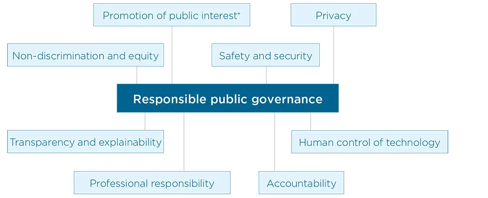

<!DOCTYPE html>
<html lang="en">

<head>
	<meta charset="UTF-8">
	<meta http-equiv="X-UA-Compatible" content="IE=edge">
	<meta name="viewport" content="width=device-width, initial-scale=1">
	<link rel="stylesheet" href="css/style.css">
	<link rel="stylesheet" href="css/responsive.css">
	<link rel="stylesheet" href="css/bootstrap5.css">
	<title>Digital Futures in Mind</title>
</head>

<body>

		<!-- Menu Area -->
<header class="navigation">
	<div class="container menu-bar">
		<div class="navbar-brand"><a href="index.html"></a></div>
		<ul class="navbar">
			<!-- Dropdown-1 -->
			<li>
				<a href="introduction.html">Introduction <span class="dropdown"></span></a>
				<ul>
				  <li><a href="structure.html">0.1 Structure</a></li>
				  <li><a href="how-was-the-report-written.html">0.2 How was the Report Written?</a></li>
				  <li><a href="what-recommendations-does-the-report-make.html">0.3 What Recommendations Does the Report Make?</a></li>
				  <li><a href="a-note-on-terminology.html">0.4 A Note on Terminology</a></li>
				  <li><a href="minding-language-about-mental-health-and-technology.html">0.5 Minding Language about Mental Health and Technology</a></li>
				</ul>
			  </li>
			 <!-- Dropdown-2 -->
			 <li>
				<a href="rising-automation-in-mental-health.html">Rising Automation in Mental Health <span class="dropdown"></span></a>
				<ul>
				  <li><a href="crisis-support-and-mental-health-care.html">1.1 What are the different ways technology is used in crisis support and mental health care?</a></li>
				  <li><a href="benefits-noted-in-research.html">1.2 Benefits Noted in Research</a></li>
				  <li>
					<a href="psychiatric-intervention-and-Other-coercive-measures.html" >1.3 Digitising Involuntary Psychiatric Intervention and Other Coercive Measures <span class="dropdown"></span></a>
					<ul>
					  <li><a href="ai-based-suicide-alerts-and-self-harm-surveillance.html">1.3.1 AI-based Suicide Alerts and Self-harm Surveillance</a></li>
					  <li><a href="digitising-mental-health-law.html">1.3.2 ‘Digitising mental health law’</a></li>
					  <li><a href="power-and-coercion-in-mental-health.html">1.3.3 Power and Coercion in Mental Health</a></li>
					</ul>
				  </li>
				  <li>
					<a href="biometric-monitoring-technologies.html">1.4 Biometric Monitoring Technologies <span class="dropdown"></span></a>
					<ul>
					  <li><a href="biometric-and-digital-turn.html">1.4.1 Power and Justice in the Biometric and Digital Turn</a></li>
					  <li><a href="biometric-monitoring-in-mental-health-settings.html">1.4.2 Governing the Future of Biometric Monitoring in Mental Health Settings</a></li>
					</ul>
				  </li>
				  <li><a href="experience-of-extreme-distress-and-disability.html">1.5 Elevating the Perspective of People with Lived Experience of Extreme Distress and Disability</a></li>
				</ul>
			  </li>
			<!-- Dropdown-3 -->
			  <li>
				<a href="themes-for-public-governance.html">Themes for Public Governance <span class="dropdown"></span></a>
				<ul>
				  <li>
					<a href="privacy.html">2.1 Privacy <span class="dropdown"></span></a>
					<ul >
					  <li><a href="ad-tech-and-predictive-public-health-surveillance.html">2.1.1 Ad-Tech and Predictive Public Health Surveillance</a></li>
					  <li><a href="privacy-and-monetisation-of-sensitive-personal-data.html">2.1.2 Privacy and Monetisation of Sensitive Personal Data</a></li>
					  <li><a href="data-theft-and-data-trafficking.html">2.1.3 Data Theft and Data Trafficking</a></li>
					  <li><a href="privacy-and-discrimination.html">2.1.4 Privacy and Discrimination</a></li>
					  <li><a href="data-protection-law.html">2.1.5 Data Protection Law</a></li>
					  <li><a href="informed-consent.html">2.1.6 Informed Consent</a></li>
					</ul>
				  </li>
				  <li>
					<a href="accountability.html" >2.2 Accountability <span class="dropdown"></span></a>
					<ul >
					  <li><a href="privatisation-and-accountability.html">2.2.1 Privatisation and Accountability</a></li>
					</ul>
				  </li>
				  <li>
					<a href="safety-and-security.html">2.3 Safety and security <span class="dropdown"></span></a>
					<ul >
					  <li><a href="safety.html">2.3.1 Safety</a></li>
						<li><a href="security.html">2.3.2 Security</a></li>
					</ul>
				  </li>
				  <li>
					<a href="non-discrimination-and-equity.html">2.4 Non-Discrimination and Equity <span class="dropdown"></span></a>
					<ul >
					  <li><a href="non-discrimination-and-the-prevention-of-bias.html">2.4.1 Non-discrimination and the Prevention of Bias</a></li>
						<li><a href="fairness.html">2.4.2 Fairness</a></li>
							<li><a href="equality.html">2.4.3 Equality</a></li>
								<li><a href="inclusive-design.html">2.4.4 Inclusive Design – Emancipatory? Participatory?</a></li>
									<li><a href="access-to-technology.html">2.4.5 Access to Technology</a></li>
					</ul>
				  </li>
				  <li>
					<a href="human-control-of-technology.html">2.5 Human control of technology <span class="dropdown"></span></a>
					<ul >
					  <li><a href="human-review-of-automated-decision.html">2.5.1 Human Review of Automated Decision</a></li>
						<li><a href="automated-decision-making.html">2.5.2 Ability to Opt-Out of Automated Decision-Making</a></li>
					</ul>
				  </li>
				  <li>
					<a href="professional-responsibility.html">2.6 Professional responsibility <span class="dropdown"></span></a>
					<ul >
					  <li><a href="multi-disciplinary-and-participatory-collaboration.html">2.6.1 Multi-disciplinary and Participatory Collaboration</a></li>
						<li><a href="scientific-integrity.html">2.6.2 Scientific Integrity and Testing Claims</a></li>
							<li><a href="techno-solutionism.html">2.6.3 Against Hype and ‘Techno-solutionism’</a></li>
								<li><a href="responsible-design.html">2.6.4 Responsible Design, Including Consideration of Long-Term Effects</a></li>
					</ul>
				  </li>
				  <li>
					<a href="transparency-and-explainability.html">2.7 Transparency and explainability <span class="dropdown"></span></a>
					<ul >
					  <li><a href="open-source-data-and-algorithms.html">2.7.1 Open-Source Data and Algorithms</a></li>
						<li><a href="other-issues-of-transparency-and-explainability.html">2.7.2 Other Issues of Transparency and Explainability</a></li>
					</ul>
				  </li>
				  <li>
					<a href="public-interest-and-societal-good.html">2.8 Promotion of Public Interest and Societal Good <span class="dropdown"></span></a>
					<ul >
					  <li><a href="automation.html">2.8.1 Automation, Undermining Face-to-Face Care, and the Risk of Depersonalisation</a></li>
						<li><a href="expanding-the-frame.html">2.8.2 Expanding the Frame from the Individual to the Social</a></li>
					</ul>
				  </li>
				  <li><a href="international-human-rights.html">2.9 International Human Rights</a></li>
				  <li><a href="future-efforts.html">2.10 Future Efforts</a></li>

				</ul>
			  </li>
		</ul>
		<div class="input-box">
			<input type="text" placeholder="" />
			<div class="search">
				
			</div>
			
		</div>
</div>
</header>

<!-- =========Mobile Menu============ -->
<header class="mobile-menu">
	<a href="index.html"></a>
	<input type="checkbox" id="main-nav-check" />
<div id="menu">
<label for="main-nav-check" class="toggle" onclick="" title="Close">&times;</label>
<ul>
	<li><a href="index.html">Home</a></li>
	<li><a href="introduction.html">Introduction</a> <label for="fof" class="toggle-sub" onclick=""><svg height="20" viewBox="0 0 48 48" width="20" xmlns="http://www.w3.org/2000/svg"><path d="M17.17 32.92l9.17-9.17-9.17-9.17 2.83-2.83 12 12-12 12z"/><path d="M0-.25h48v48h-48z" fill="none"/></svg></label>
		<input type="checkbox" id="fof" class="sub-nav-check" />
		<ul id="fof-sub" class="sub-nav">
			<li class="sub-heading">Introduction <label for="fof" class="toggle" onclick="" title="Back"><svg height="20" viewBox="0 0 48 48" width="20" xmlns="http://www.w3.org/2000/svg"><path d="M17.17 32.92l9.17-9.17-9.17-9.17 2.83-2.83 12 12-12 12z"/><path d="M0-.25h48v48h-48z" fill="none"/></svg></label></li>
			<li><a href="structure.html">0.1 Structure</a></li>
			<li><a href="how-was-the-report-written.html">0.2 How was the Report Written?</a></li>
			<li><a href="what-recommendations-does-the-report-make.html">0.3 What Recommendations Does the Report Make?</a></li>
			<li><a href="a-note-on-terminology.html">0.4 A Note on Terminology</a></li>
			<li><a href="minding-language-about-mental-health-and-technology.html">0.5 Minding Language about Mental Health and Technology</a></li>
		</ul>
	</li>
	<li><a href="rising-automation-in-mental-health.html">Rising Automation in Mental Health</a> <label for="fast-apps" class="toggle-sub" onclick=""><svg height="20" viewBox="0 0 48 48" width="20" xmlns="http://www.w3.org/2000/svg"><path d="M17.17 32.92l9.17-9.17-9.17-9.17 2.83-2.83 12 12-12 12z"/><path d="M0-.25h48v48h-48z" fill="none"/></svg></label>
		<input type="checkbox" id="fast-apps" class="sub-nav-check" />
		<ul id="fast-apps-sub" class="sub-nav">
			<li class="sub-heading">Rising Automation in Mental Health <label for="fast-apps" class="toggle" onclick="" title="Back"><svg height="20" viewBox="0 0 48 48" width="20" xmlns="http://www.w3.org/2000/svg"><path d="M17.17 32.92l9.17-9.17-9.17-9.17 2.83-2.83 12 12-12 12z"/><path d="M0-.25h48v48h-48z" fill="none"/></svg></label></li>
			<li><a href="crisis-support-and-mental-health-care.html">1.1 What are the different ways technology is used in crisis support and mental health care?</a></li>
			<li><a href="benefits-noted-in-research.html">1.2 Benefits Noted in Research</a></li>
			<li><a href="psychiatric-intervention-and-Other-coercive-measures.html">1.3 Digitising Involuntary Psychiatric Intervention and Other Coercive Measures</a> <label for="fof-portfolio" class="toggle-sub" onclick=""><svg height="20" viewBox="0 0 48 48" width="20" xmlns="http://www.w3.org/2000/svg"><path d="M17.17 32.92l9.17-9.17-9.17-9.17 2.83-2.83 12 12-12 12z"/><path d="M0-.25h48v48h-48z" fill="none"/></svg></label>
				<input type="checkbox" id="fof-portfolio" class="sub-nav-check" />
				<ul id="fof-portfolio-sub" class="sub-nav">
					<li class="sub-heading">1.3 Digitising Involuntary Psychiatric Intervention and Other Coercive Measures <label for="fof-portfolio" class="toggle" onclick="" title="Back"><svg height="20" viewBox="0 0 48 48" width="20" xmlns="http://www.w3.org/2000/svg"><path d="M17.17 32.92l9.17-9.17-9.17-9.17 2.83-2.83 12 12-12 12z"/><path d="M0-.25h48v48h-48z" fill="none"/></svg></label></li>
					<li><a href="ai-based-suicide-alerts-and-self-harm-surveillance.html">1.3.1 AI-based Suicide Alerts and Self-harm Surveillance</a></li>
					<li><a href="digitising-mental-health-law.html">1.3.2 ‘Digitising mental health law’</a></li>
					<li><a href="power-and-coercion-in-mental-health.html">1.3.3 Power and Coercion in Mental Health</a></li>
				</ul>
			</li>
			<li><a href="biometric-monitoring-technologies.html">1.4 Biometric Monitoring Technologies</a> <label for="fof-services" class="toggle-sub" onclick=""><svg height="20" viewBox="0 0 48 48" width="20" xmlns="http://www.w3.org/2000/svg"><path d="M17.17 32.92l9.17-9.17-9.17-9.17 2.83-2.83 12 12-12 12z"/><path d="M0-.25h48v48h-48z" fill="none"/></svg></label>
				<input type="checkbox" id="fof-services" class="sub-nav-check" />
				<ul id="fof-services-sub" class="sub-nav">
					<li class="sub-heading">1.4 Biometric Monitoring Technologies <label for="fof-services" class="toggle" onclick="" title="Back"><svg height="20" viewBox="0 0 48 48" width="20" xmlns="http://www.w3.org/2000/svg"><path d="M17.17 32.92l9.17-9.17-9.17-9.17 2.83-2.83 12 12-12 12z"/><path d="M0-.25h48v48h-48z" fill="none"/></svg></label></li>
					<li><a href="biometric-and-digital-turn.html">1.4.1 Power and Justice in the Biometric and Digital Turn</a></li>
					<li><a href="biometric-monitoring-in-mental-health-settings.html">1.4.2 Governing the Future of Biometric Monitoring in Mental Health Settings</a></li>
				</ul>
			</li>
			<li><a href="experience-of-extreme-distress-and-disability.html">1.5 Elevating the Perspective of People with Lived Experience of Extreme Distress and Disability</a></li>
		</ul>
	</li>
	<li><a href="themes-for-public-governance.html">Themes for Public Governance</a> <label for="public-apps" class="toggle-sub" onclick=""><svg height="20" viewBox="0 0 48 48" width="20" xmlns="http://www.w3.org/2000/svg"><path d="M17.17 32.92l9.17-9.17-9.17-9.17 2.83-2.83 12 12-12 12z"/><path d="M0-.25h48v48h-48z" fill="none"/></svg></label>
		<input type="checkbox" id="public-apps" class="sub-nav-check" />
		<ul id="public-apps-sub" class="sub-nav">
			<li class="sub-heading">Themes for Public Governance<label for="public-apps" class="toggle" onclick="" title="Back"><svg height="20" viewBox="0 0 48 48" width="20" xmlns="http://www.w3.org/2000/svg"><path d="M17.17 32.92l9.17-9.17-9.17-9.17 2.83-2.83 12 12-12 12z"/><path d="M0-.25h48v48h-48z" fill="none"/></svg></label></li>
			<li><a href="privacy.html">2.1 Privacy</a> <label for="public-portfolio" class="toggle-sub" onclick=""><svg height="20" viewBox="0 0 48 48" width="20" xmlns="http://www.w3.org/2000/svg"><path d="M17.17 32.92l9.17-9.17-9.17-9.17 2.83-2.83 12 12-12 12z"/><path d="M0-.25h48v48h-48z" fill="none"/></svg></label>
				<input type="checkbox" id="public-portfolio" class="sub-nav-check" />
				<ul id="public-portfolio-sub" class="sub-nav">
					<li class="sub-heading">2.1 Privacy <label for="public-portfolio" class="toggle" onclick="" title="Back"><svg height="20" viewBox="0 0 48 48" width="20" xmlns="http://www.w3.org/2000/svg"><path d="M17.17 32.92l9.17-9.17-9.17-9.17 2.83-2.83 12 12-12 12z"/><path d="M0-.25h48v48h-48z" fill="none"/></svg></label></li>
					<li><a href="ad-tech-and-predictive-public-health-surveillance.html">2.1.1 Ad-Tech and Predictive Public Health Surveillance</a></li>
					<li><a href="privacy-and-monetisation-of-sensitive-personal-data.html">2.1.2 Privacy and Monetisation of Sensitive Personal Data</a></li>
					<li><a href="data-theft-and-data-trafficking.html">2.1.3 Data Theft and Data Trafficking</a></li>
					<li><a href="privacy-and-discrimination.html">2.1.4 Privacy and Discrimination</a></li>
					<li><a href="data-protection-law.html">2.1.5 Data Protection Law</a></li>
					<li><a href="informed-consent.html">2.1.6 Informed Consent</a></li>
				</ul>
			</li>
			<li><a href="accountability.html">2.2 Accountability</a> <label for="public-acc" class="toggle-sub" onclick=""><svg height="20" viewBox="0 0 48 48" width="20" xmlns="http://www.w3.org/2000/svg"><path d="M17.17 32.92l9.17-9.17-9.17-9.17 2.83-2.83 12 12-12 12z"/><path d="M0-.25h48v48h-48z" fill="none"/></svg></label>
				<input type="checkbox" id="public-acc" class="sub-nav-check" />
				<ul id="public-acc-sub" class="sub-nav">
					<li class="sub-heading">2.2 Accountability <label for="public-acc" class="toggle" onclick="" title="Back"><svg height="20" viewBox="0 0 48 48" width="20" xmlns="http://www.w3.org/2000/svg"><path d="M17.17 32.92l9.17-9.17-9.17-9.17 2.83-2.83 12 12-12 12z"/><path d="M0-.25h48v48h-48z" fill="none"/></svg></label></li>
					<li><a href="privatisation-and-accountability.html">2.2.1 Privatisation and Accountability</a></li>
				</ul>
			</li>
			<li><a href="safety-and-security.html">2.3 Safety and security</a> <label for="public-Safety-security" class="toggle-sub" onclick=""><svg height="20" viewBox="0 0 48 48" width="20" xmlns="http://www.w3.org/2000/svg"><path d="M17.17 32.92l9.17-9.17-9.17-9.17 2.83-2.83 12 12-12 12z"/><path d="M0-.25h48v48h-48z" fill="none"/></svg></label>
				<input type="checkbox" id="public-Safety-security" class="sub-nav-check" />
				<ul id="public-Safety-security-sub" class="sub-nav">
					<li class="sub-heading">2.2 Accountability <label for="public-Safety-security" class="toggle" onclick="" title="Back"><svg height="20" viewBox="0 0 48 48" width="20" xmlns="http://www.w3.org/2000/svg"><path d="M17.17 32.92l9.17-9.17-9.17-9.17 2.83-2.83 12 12-12 12z"/><path d="M0-.25h48v48h-48z" fill="none"/></svg></label></li>
					<li><a href="safety.html">2.3.1 Safety</a></li>
					<li><a href="security.html">2.3.2 Security</a></li>
				</ul>
			</li>
			<li><a href="non-discrimination-and-equity.html">2.4 Non-Discrimination and Equity</a> <label for="public-equity" class="toggle-sub" onclick=""><svg height="20" viewBox="0 0 48 48" width="20" xmlns="http://www.w3.org/2000/svg"><path d="M17.17 32.92l9.17-9.17-9.17-9.17 2.83-2.83 12 12-12 12z"/><path d="M0-.25h48v48h-48z" fill="none"/></svg></label>
				<input type="checkbox" id="public-equity" class="sub-nav-check" />
				<ul id="public-equity-sub" class="sub-nav">
					<li class="sub-heading">2.4 Non-Discrimination and Equity <label for="public-equity" class="toggle" onclick="" title="Back"><svg height="20" viewBox="0 0 48 48" width="20" xmlns="http://www.w3.org/2000/svg"><path d="M17.17 32.92l9.17-9.17-9.17-9.17 2.83-2.83 12 12-12 12z"/><path d="M0-.25h48v48h-48z" fill="none"/></svg></label></li>
					<li><a href="non-discrimination-and-the-prevention-of-bias.html">2.4.1 Non-discrimination and the Prevention of Bias</a></li>
					<li><a href="fairness.html">2.4.2 Fairness</a></li>
					<li><a href="equality.html">2.4.3 Equality</a></li>
					<li><a href="inclusive-design.html">2.4.4 Inclusive Design – Emancipatory? Participatory?</a></li>
					<li><a href="access-to-technology.html">2.4.5 Access to Technology</a></li>
				</ul>
			</li>

			<li><a href="human-control-of-technology.html">2.5 Human control of technology</a> <label for="public-human" class="toggle-sub" onclick=""><svg height="20" viewBox="0 0 48 48" width="20" xmlns="http://www.w3.org/2000/svg"><path d="M17.17 32.92l9.17-9.17-9.17-9.17 2.83-2.83 12 12-12 12z"/><path d="M0-.25h48v48h-48z" fill="none"/></svg></label>
				<input type="checkbox" id="public-human" class="sub-nav-check" />
				<ul id="public-human-sub" class="sub-nav">
					<li class="sub-heading">2.5 Human control of technology <label for="public-human" class="toggle" onclick="" title="Back"><svg height="20" viewBox="0 0 48 48" width="20" xmlns="http://www.w3.org/2000/svg"><path d="M17.17 32.92l9.17-9.17-9.17-9.17 2.83-2.83 12 12-12 12z"/><path d="M0-.25h48v48h-48z" fill="none"/></svg></label></li>
					<li><a href="human-review-of-automated-decision.html">2.5.1 Human Review of Automated Decision</a></li>
					<li><a href="automated-decision-making.html">2.5.2 Ability to Opt-Out of Automated Decision-Making</a></li>
				</ul>
			</li>
			<li><a href="professional-responsibility.html">2.6 Professional responsibility</a> <label for="public-profess" class="toggle-sub" onclick=""><svg height="20" viewBox="0 0 48 48" width="20" xmlns="http://www.w3.org/2000/svg"><path d="M17.17 32.92l9.17-9.17-9.17-9.17 2.83-2.83 12 12-12 12z"/><path d="M0-.25h48v48h-48z" fill="none"/></svg></label>
				<input type="checkbox" id="public-profess" class="sub-nav-check" />
				<ul id="public-profess-sub" class="sub-nav">
					<li class="sub-heading">2.6 Professional responsibility <label for="public-profess" class="toggle" onclick="" title="Back"><svg height="20" viewBox="0 0 48 48" width="20" xmlns="http://www.w3.org/2000/svg"><path d="M17.17 32.92l9.17-9.17-9.17-9.17 2.83-2.83 12 12-12 12z"/><path d="M0-.25h48v48h-48z" fill="none"/></svg></label></li>
					<li><a href="multi-disciplinary-and-participatory-collaboration.html">2.6.1 Multi-disciplinary and Participatory Collaboration</a></li>
					<li><a href="scientific-integrity.html">2.6.2 Scientific Integrity and Testing Claims</a></li>
					<li><a href="techno-solutionism.html">2.6.3 Against Hype and ‘Techno-solutionism’</a></li>
					<li><a href="responsible-design.html">2.6.4 Responsible Design, Including Consideration of Long-Term Effects</a></li>
				</ul>
			</li>
			<li><a href="transparency-and-explainability.html">2.7 Transparency and explainability</a> <label for="public-trans" class="toggle-sub" onclick=""><svg height="20" viewBox="0 0 48 48" width="20" xmlns="http://www.w3.org/2000/svg"><path d="M17.17 32.92l9.17-9.17-9.17-9.17 2.83-2.83 12 12-12 12z"/><path d="M0-.25h48v48h-48z" fill="none"/></svg></label>
				<input type="checkbox" id="public-trans" class="sub-nav-check" />
				<ul id="public-trans-sub" class="sub-nav">
					<li class="sub-heading">2.7 Transparency and explainability <label for="public-trans" class="toggle" onclick="" title="Back"><svg height="20" viewBox="0 0 48 48" width="20" xmlns="http://www.w3.org/2000/svg"><path d="M17.17 32.92l9.17-9.17-9.17-9.17 2.83-2.83 12 12-12 12z"/><path d="M0-.25h48v48h-48z" fill="none"/></svg></label></li>
					<li><a href="open-source-data-and-algorithms.html">2.7.1 Open-Source Data and Algorithms</a></li>
					<li><a href="other-issues-of-transparency-and-explainability.html">2.7.2 Other Issues of Transparency and Explainability</a></li>
				</ul>
			</li>
			<li><a href="public-interest-and-societal-good.html">2.8 Promotion of Public Interest and Societal Good</a> <label for="public-promo" class="toggle-sub" onclick=""><svg height="20" viewBox="0 0 48 48" width="20" xmlns="http://www.w3.org/2000/svg"><path d="M17.17 32.92l9.17-9.17-9.17-9.17 2.83-2.83 12 12-12 12z"/><path d="M0-.25h48v48h-48z" fill="none"/></svg></label>
				<input type="checkbox" id="public-promo" class="sub-nav-check" />
				<ul id="public-promo-sub" class="sub-nav">
					<li class="sub-heading">2.8 Promotion of Public Interest and Societal Good <label for="public-promo" class="toggle" onclick="" title="Back"><svg height="20" viewBox="0 0 48 48" width="20" xmlns="http://www.w3.org/2000/svg"><path d="M17.17 32.92l9.17-9.17-9.17-9.17 2.83-2.83 12 12-12 12z"/><path d="M0-.25h48v48h-48z" fill="none"/></svg></label></li>
					<li><a href="automation.html">2.8.1 Automation, Undermining Face-to-Face Care, and the Risk of Depersonalisation</a></li>
					<li><a href="expanding-the-frame.html">2.8.2 Expanding the Frame from the Individual to the Social</a></li>
				</ul>
			</li>
			<li><a href="international-human-rights.html">2.9 International Human Rights</a></li>
			<li><a href="future-efforts.html">2.10 Future Efforts</a></li>
		</ul>
	</li>

</ul>
<div class="input-box">
	<input type="text" placeholder="" />
	<div class="search">
		
	</div>
	
</div>
</div>
<div id="header">
	<label for="main-nav-check" class="toggle" onclick="" title="Menu">&#x2261;</label>
</div><!-- closing "#header" -->
</header>
	<!-- Content Area -->
	<div class="container">
		<div class="row">
			<main>
				<aside class="col-lg-3 col-12 sidebar-left">
					<ol>
						<li>
							<a href="about.html">About</a>
						</li>
						<li>
							<a href="foreword.html">Foreword</a>
						</li>
						<li>
							<a href="introduction.html">Introduction</a>
						</li>
						<li>
							<a href="recommendations.html">Recommendations</a>
						</li>
						<li>
							<a href="note-on-terminology.html">A note on Terminology</a>
						</li>
						<li>
							<a href="rising-automation-in-mental-health.html">Rising Automation in Mental Health</a>
						</li>
						<li>
							<a href="digitising-involuntary-psychiatric-intervention.html">digitising Involuntary Psychiatric Intervention</a>
						</li>
						<li>
							<a href="biometric-monitoring-technologies.html">Biometric Monitoring Technologies</a>
						</li>
						<li>
							<a href="distress-and-disability.html">Elevating the Perspective of People with Lived Experience of Extreme Distress and Disability</a>
						</li>
						<li>
							<a href="themes-for-public-governance.html" class="active">Themes for Public Governance</a>
						</li>
						<li>
							<a href="conclusion.html">Conclusion</a>
						</li>
					</ol>
				</aside>
				<section class="col-lg-6 col-12 sidebar-middle">
					<div class="content-pane1">
						<h2 id="themes-for-public-governance">Part 2 - Themes for Responsible Public Governance</h2>
						<p>To draw out the various issues raised by the rise of automation in the mental health
							context, the remainder of this report is ordered around the following inter-related themes,
							or ethical and political values:</p>
						<p></p>
						<p>These themes commonly appear in global discussions about algorithmic technology and
							data governance.<sup>188</sup> However, we add the following caveats. By ordering our discussion
							under these themes, we are not suggesting that a statement of ‘principles’ is needed for
							the mental health and disability context – quite rightly, ‘principles documents are frequently
							challenged as toothless or unenforceable.’<sup>189</sup> At its worst, looking at ethical themes or
							values can draw attention away from broader questions of justice, power, finance and
							politics that drive the recent growth of algorithmic and data-driven technologies, as
							discussed above. It should be acknowledged that the themes we have tentatively listed risk
							narrowing the focus of public debate to questions of procedural safeguards – for example,
							by zeroing in on auditing processes designed to achieve fairness, accountability and
							transparency. This narrow focus can divert attention from more fundamental questions,
							such as whether or not certain systems should be built at all, whether because they have
							proven harms or because they have unproven benefits.</p>
						<p>However, given the striking lack of research on the politics of mental health and disability-related automation,<sup>190</sup> these themes provided a way to frame our discussion using
							themes that are common in broader public discussion about algorithmic and data-driven
							technology, even as these themes may need to be re-framed. Finally, the value of the
							discussion is dependent upon the integration of these themes in larger public governance
							systems, from legislation, regulation, the work of professional associations, the advocacy of
							civil society organisations, activism, quality journalism, and everyday practices designed to
							support people or communities in crisis.<sup>191</sup></p>
						
					</div>
					<div class="content-pane2">
						<h2 id="privacy">2.1 Privacy</h2>
						<div class="neon-blue-txt">[R]easserting the right to privacy… may be a central component [for
							building] a platform for democratic governance and social equality
							within an information society.<br />
							– Jonah Bossewitch and Aram Sinnreich<sup>192</sup></div>
						<p>The right to privacy is longstanding in international human rights law and aims to protect
							a citizen from unlawful interference with their private life and correspondence.<sup>193</sup> Yet,
							the contemporary communication ecosystem allows vast amounts of data to feed into
							technologies for use in surveillance, advertising, healthcare decision-making, and many
							other sensitive contexts.<sup>194</sup> Complex forms of government and private sector monitoring
							exist that draw on sophisticated technologies to trace individuals and detect their
							behaviour, networks, consumption and so on. The role of data concerning mental health in
							these processes is poorly understood.</p>
						<p>Clearly, privacy over individuals’ and communities’ data concerning distress and mental
							health is vital. Failure to attend to privacy issues could have multiple negative consequences:
							it may shape individuals’ willingness to disclose their distress (for example, privacy concerns
							may undermine a person’s confidence in seeking support); data may be used to discriminate
							against individuals, families or groups, which could be used in the context of insurance,
							employment, housing, credit ratings and so on; data may be sold or monetised without an
							individual’s consent, including being used to inform manipulative advertising practices; and
							may enable identity theft and health system fraud. People may avoid disclosing or accessing
							a service for fear that their medical biography or data on their mental and personal life may
							be used to their disadvantage in the future—which crucially undermines trust, which is so
							essential to therapeutic engagement and the seeking of support.</p>
						<p>Alternatively, many people will simply be unaware of the risks. Indeed, most consumers
							have low awareness about the implications of data sharing practices within the larger
							communication eco-system.<sup>195</sup></p>
						<div class="skydivbox">
							<h2>CASE STUDY: Privacy and ‘Mental Health Apps’</h2>
							<p>In 2015, the National Health Service of England closed its App Library after a study
								found that 20 percent of the apps lacked a privacy policy and one even transmitted
								personally identifiable data that its policy claimed would be anonymous.<sup>196</sup> The
								authors concluded that:</p><br />
							<p>- 89% (n =70/79) of apps transmitted information to online services<br />
								- No app encrypted personal information stored locally<br />
								- 66% (23/35) of apps sending identifying information over the Internet did not use <br />
								encryption and 20% (7/35) did not have a privacy policy</p><br />
							<p>Two studies undertaken in 2019 found that only just under half of the popular mental
								health apps surveyed had a privacy policy that informed users about how and when
								personal information would be collected or shared with third parties.<sup>197</sup></p>
						</div>
						
						<p>The proliferation of direct-to-consumer apps and therapy platforms highlights the
							expansion of digital mental health initiatives in marketised form. Nicole Martinez-Martin has
							written that ‘the consumer domain presents particularly vexing issues for trust, because the
							frameworks for accountability and oversight, as well as the mechanisms for data protection
							and assuring safety and effectiveness, are still evolving’.<sup>198</sup></p>
						<h3 id="predictive-public-health-surveillance">2.1.1 Ad-Tech and Predictive Public Health Surveillance</h3>
						<p>Data and analytics in advertising can exploit behavioural biases and create consumer
							exploitation or be used in political targeting on an unprecedented scale.199 Sensitive
							information about people who are potentially in distressed states can be used by private
							companies to manipulate people into buying certain services or products.</p>
						<div class="skydivbox">
							<h2>CASE STUDY: Facebook/Meta ad-tech identifying when children feel ‘worthless’
								and ‘insecure’</h2>
							<p>In 2017, Australian media reported that Facebook systems could target Australians
								and New Zealander children as young as 14 years old and help advertisers to exploit
								them when they’re most vulnerable.<sup>200</sup> This included identifying when the children
								felt ‘worthless’, ‘stressed’, ‘anxious’, ‘insecure,’ and in ‘moments when young people
								need a confidence boost’. The document offering these capacities to advertisers was
								authored by two top Australian executives in roles described as ‘Facebook Australia’s
								national agency relationship managers.<sup>201</sup></p>
							<p>Facebook denied that it let advertisers target children and young people based on
								their emotional state, and claimed that it has ‘an established process’ to review such
								research but that this particular project ‘did not follow that process.<sup>202</sup> Facebook
								reasserted that it had a policy against advertising to ‘vulnerable users.<sup>203</sup></p>
							<p>Four years later, in April 2021, civil society organization Reset Australia reported that
								Facebook was found using children’s data to on-sell to advertisers seeking to target
								children interested in extreme weight loss, alcohol or gambling.<sup>204</sup></p>
						</div>
						<p>Conversely, a similar approach to targeted advertising can be used in public health
							initiatives that seek to direct people who may be in distress to particular mental health
							services. The aim of such initiatives is to provide ‘pre-emptive’ support to assist people to
							access support, particularly those who may be averse to accessing formal services, as the
							following example shows.</p>
							
		
						<div class="skydivbox">
							<h2>CASE STUDY: Predictive prevention and targeted advertising</h2>
							<p>A report by the PHG Foundation describe a ‘digital wellbeing service’ in London:<sup>205</sup></p>
							<p class="sm-padd-gap">Good Thinking is a digital wellbeing service rolled out across the city as part of
								the Healthy London Partnership; it uses data-driven marketing techniques to
								target advertisements for digital services to people who may be experiencing
								mental health issues. This targeting is based on people’s use of online search
								engines and social media platforms, thereby proactively identifying those
								who may benefit from services and who would not necessarily self-present
								to the health system. Those who display patterns of searching or social
								media posts consistent with early predictors of mental health decline [for
								example, sleep deprivation, isolation, alcohol consumption] are targeted with
								subtle advertisements around their personal issue. If the user engages with
								the advertisement, they are filtered through to a digital service containing
								recommended and approved apps for their specific problem. All this is done
								without the health system requiring access to raw data or any personal
								information about the user and the citizen is not aware they are engaging with
								the health system.</p>
						</div>
						<p>The intent of the Good Thinking targeting service, which is described as a ‘precision
							prevention initiative’ by its developers, is to provide benefit to individuals in apparent
							distress. This aim aligns with the UK Government’s Green Paper on ‘Advancing our health:
							prevention in the 2020s’, which describes a move towards ‘proactive, predictive and
							personalised prevention’.<sup>206</sup></p>
						<p>Serious questions may be raised about such programs given that they seem to largely
							target people from outside the formal healthcare system who have not consented to or
							necessarily intentionally sought out health care services. Although the advertisements for
							Good Thinking are targeted at those who appear to be searching for support in relation
							to distress, one component of the targeted digital advertising ‘[t]argets users whose
							behaviour, demographic and location suggests they are a potential service users [sic] – a
							“passive” audience.<sup>207</sup></p>
						<p>Data-based targeting and automated profiling was discussed by the World Health
							Organisation in its report, Ethics and Governance of Artificial Intelligence for Health,
							which noted its ambiguous potential:</p>
						<div class="benifit-box">
							<ul>
								<li>AI can be used for health promotion or to identify target populations or locations with
									“high-risk” behaviour and populations that would benefit from health communication
									and messaging (micro-targeting) […] Micro-targeting can also, however, raise concern,
									such as that with respect to commercial and political advertising, including the
									opaqueness of processes that facilitate micro-targeting. Furthermore, users who
									receive such messages may have no explanation or indication of why they have been
									targeted. Micro-targeting also undermines a population’s equal access to information,
									can affect public debate and can facilitate exclusion or discrimination if it is used
									improperly by the public or private sector.<sup>208</sup></li>
							</ul>
						</div>
						<p>A prominent example of a data-driven preventive health monitoring initiative that faced a
							severe public backlash was the ‘suicide watch radar’ app that was trialled in the UK.</p>
							
						<div class="skydivbox">
							<h2>CASE STUDY: Crisis Surveillance and the ‘Suicide Watch Radar’ App</h2>
							<p>In 2014, the UK charity Samaritans abandoned its use of a ‘suicide watch radar’
								app, which enabled users to monitor the accounts of another user for distressing
								messages. The project aimed to direct emergency responders to those in crisis.
								However, public campaigners argued the tool breached user’s privacy by collecting,
								processing and sharing sensitive information about their emotional and mental
								health.<sup>209</sup> Dan McQuillan commented of the program:</p>
							<p class="sm-padd-gap">
								Thanks to the inadequate involvement of service users in its production,<br />
								It ignored the fact that the wrong sort of well-meaning intervention at the wrong <br />time might actually make things worse,<br />
								Or that malicious users could use the app to target and troll vulnerable people.<sup>210</sup></p>
						</div>
						<p>Automated profiling such as the Samaritan’s ‘Radar’ app clearly engages the new
							generation of data protection laws. The EU’s General Data Protection Regulation (GDPR),
							for example, defines automated profiling as ‘any form of automated processing of
							personal data consisting of the use of personal data to evaluate certain personal aspects
							relating to a natural person, in particular to analyse or predict aspects concerning that
							natural person’s performance at work, economic situation, health, personal preferences,
							interests, reliability, behaviour, location or movements.<sup>211</sup> Other parts of the GDPR would
							bear on how such profiling could be used. Article 22, for example, states that ‘the data
							subject shall have the right not to be subject to a decision based solely on automated
							processing, including profiling, which produces legal effects concerning him or her or
							similarly significantly affects him or her.<sup>212</sup> Bernadette McSherry has noted that predicting
							aspects of a person’s mental health appears likely to fall within the ambit of this Article.<sup>213</sup></p>
						<h3 id="privacy-and-monetisation">2.1.2 Privacy and Monetisation of Sensitive Personal Data</h3>
						<p>Privacy issues are compounded by the increasing monetisation of health and other
							forms of personal data. Online mental health initiatives are emerging in an internet that is
							increasingly dominated by profit-driven information flows. Some mental health websites
							or apps and affiliated third-party companies are treating the personal data of users as
							a commodity and tracking them for marketing or other commercial purposes.<sup>214</sup> This
							may occur as an explicit business decision by a private company that provides direct-to-consumer services for those in distress, or may occur inadvertently where a service
							provider is unaware of the way third-party trackers are operating on their platforms.
							‘Third-party trackers’ which are sometimes described as ‘tracking cookies’ or ‘trackers’, are
							elements of websites that are created by parties other than the developers of the website
							the person is currently visiting; this would include providers of advertising, analytics and
							tracking services.<sup>215</sup></p>
							
						<div class="skydivbox">
							<h2>CASE STUDY: Privacy International finds top mental health websites sell visitor
								information to third parties and breaches the GDPR</h2>
							<p>In 2019, Privacy International analysed more than 136 popular webs across France,
								Germany and the UK related to depression.<sup>216</sup> The websites were chosen to reflect
								those that people would realistically find when searching for help online. The authors
								found that over three quarters of web pages contained third-party trackers for
								marketing purposes, which could enable targeted advertising and marketing from
								large companies like Google/Alphabet, Amazon and Facebook/Meta.</p>
							<p>Most websites, according to the authors, failed to comply with the EU General Data
								Protection Regulation in upholding individual’s privacy (acknowledging that the UK is
								no longer part of the EU). In 2020, a follow-up study found that 31.8% (42 out of 132)
								of the tested webpages reduced the number of third parties with whom users’ data
								was shared. However, Privacy International concluded that ‘[g]enerally, most websites
								analyses haven’t taken action to limit data sharing [meaning][…] personal data are
								still shared for advertising purposes’ with hundreds of third parties with no clear
								indication of the potential consequences.<sup>217</sup></p>
						</div>
						<p>Knowledge of a user’s distress could, at a minimum, allow companies to advertise specific
							treatments, services, or financial products, as noted previously. It could also be sold
							to other interested parties, such as insurers, as discussed later in the report (see Non-Discrimination and Equity). Some have suggested that data concerning the health of
							individuals will be more lucrative than the sale of particular health products. Nick Couldry
							and Ulises Ali Mejias have argued that this likelihood is evident in Amazon’s recent moves
							in the US to open an online pharmacy:</p>
						<div class="benifit-box">
							<ul>
								<li>Amazon Pharmacy’s promise of 80 per cent discounts suggests that the US retailer
									sees opportunities not in realising immediate profits, but in extracting a more
									valuable resource: data about the most intimate details of our lives.<sup>218</sup></li>
							</ul>
						</div>
						<p>Not only may data extraction be used to predict the person’s distress in order to match
							them to an advertised product, but another broader function may be to shape the
							person’s experience and behaviour in order to direct them to existing advertisement/
							products. Zuboff refers to this shaping of human experience and behaviour when
							highlighting the emergence of ‘behavioral futures markets’.<sup>219</sup> This may be evident
							in the Cerebral app, noted above, which reportedly pushed platform users toward
							shorter appointments and more prescriptions in ways that potentially ‘accelerat[ed] the
							psychiatric prescribing cascade’.<sup>220</sup></p>
							
						<div class="skydivbox">
							<h2>CASE STUDY: ‘Practice Fusion’ and Clinical Decision Support Software that
								Unlawfully Boosted Opioid Prescribing</h2>
							<p>The United States (US) government recently settled a case with a company called
								‘Practice Fusion’, which produced clinical decision support software that was used by
								doctors when prescribing medication for patients, and was found to have received
								kickbacks from a pharmaceutical company intended to drive up opioid prescribing.<sup>221</sup>
								Megan Prictor explains that ‘[t]he payments were for creating an alert in the
								[electronic health record] designed to increase the prescription of extended-release
								opioid medication (and hence the sale of Purdue’s products) to treat patients’ pain
								symptoms.<sup>222</sup> She notes:</p>
							<p class="sm-padd-gap">
								The court heard that Purdue Pharma’s marketing staff helped to design the
								software alert, which ignored evidence-based clinical guidelines for patients with
								chronic pain… The alert was triggered in clinical practices some 230 million times
								between 2016 and 2019 and resulted in additional prescriptions of extendedrelease opioids numbering in the tens of thousands, causing untold human harm.
								Most of the prescriptions were paid for by federal healthcare programmes.<sup>223</sup></p>
							<p>The fraud was uncovered through a US government investigation, which had
								originally investigated separate unlawful conduct by the company concerning falsely
								obtained government certification for its software. The company had failed to meet
								certification requirements, which itself had led software users inadvertently to falsely
								claim government incentive payments. Software users – presumably comprising
								of various healthcare providers – had attested that the software complied with
								government regulations, when in reality it did not.<sup>224</sup></p>
						</div>
						<p>It is clear that technologies are now being designed to push ‘users’ to access services
							or products aligned with business interests tied to the technology;<sup>225</sup> or to enforce
							conditional welfare and social benefit rules in government-funded services in ways that
							erode care,<sup>226</sup> as will be discussed later in the report.</p>
						<p>Privacy International’s finding that mental health websites sell visitor information to
							third parties highlights a striking fact: it is becoming harder to access mental health
							support without that access being digitally recorded in some way. The likelihood of such
							information moving beyond the discrete and relevant digital repositories of one service
							is increased by the massive and interconnected flow of data in today’s communication
							ecosystem. A report for the Consumer Policy Resource Centre notes the implications of
							the ease with which data can be transported:</p>
						<div class="benifit-box">
							<ul>
								<li>consumers may well start to avoid accessing important healthcare services and
									support if they feel that companies or governments cannot be trusted with that
									information, or that they may be disadvantaged by that information in future. For
									example, insurer MLC was found to have excluded a consumer from mental health
									coverage in life insurance due to her accessing mental health services for the sexual
									abuse she suffered as a child in the mid-1980s.<sup>227</sup></li>
							</ul>
						</div>
						
						<p>This concern extends to accessing physical services given that the monitoring power of
							smartphones through location-tracking can potentially show the frequency and types of
							healthcare services an individual accesses.<sup>228</sup> Some mental health initiatives that introduce
							a major digitalised or virtual component have explicitly prioritised privacy as a key
							component of appropriate support.</p>
						<div class="skydivbox">
							<h2>CASE STUDY: Privacy by Design in Digital Support in a Refugee Camp
							</h2>
							<p>In 2018, researchers at the Data & Society research institute released a report entitled
								‘Refugee Connectivity: A Survey of Mobile Phones, Mental Health, and Privacy at a
								Syrian Refugee Camp in Greece’.<sup>229</sup> The authors demonstrated ways that phones were
								essential to aid, survival and well-being. The survey design simultaneously employed
								two distinct methodologies: one concerned with mobile connectivity and mental
								health, and a second concerned with mobile connectivity and privacy. This project
								was supported by the International Data Responsibility Group. The research was
								premised on a view that privacy can be essential to easing distress and mental health,
								both in terms of receiving support, and in the lives of refugees and asylum seekers
								more generally, particularly those at risk of persecution</p>
						</div>
						<p></p>
						<p><i>Go Mental by Josh Muir in Science Gallery Melbourne’s MENTAL. Photo by Alan Weedon.</i></p>
						<h3 id="data-theft-and-data-trafficking">2.1.3 Data Theft and Data Trafficking</h3>
						<p>As the amount and value of personal data stored online proliferates, data theft and
							trafficking will continue to occur. In 2017 in the US, for example, a mental health service
							provider in Texas notified 28,434 people whose data were allegedly stolen by a former
							employee.<sup>230</sup> However, by far the most extreme case concerning mental health was
							reported in Finland in October 2020</p>
						<div class="skydivbox">
							<h2>‘Vastaamo hacking could turn into largest criminal case in Finnish history’
							</h2>
							<p>On the 27th of October 2020, the Associated Foreign Press reported that:<sup>231</sup></p>
							<p class="sm-padd-gap">The confidential treatment records of tens of thousands of psychotherapy
								patients in Finland have been hacked and some leaked online, in what the interior
								minister described as “a shocking act”. Distressed patients flooded victim support
								services over the weekend as Finnish police revealed that hackers had accessed
								records belonging to the private company Vastaamo, which runs 25 therapy
								centres across Finland. Thousands have reportedly filed police complaints over
								the breach. Many patients reported receiving emails with a demand for €200
								(£181) in bitcoin to prevent the contents of their discussions with therapists being
								made public.</p>
							<p>Around 30,000 people are believed to have received the ransom demand at the time
								of writing; some 25,000 reported it to the police. Some of the records belonged to
								children, politicians, and other public figures. They contained details about adulterous
								relationships, sexuality hidden from family, suicide attempts, and paedophilic
								thoughts.<sup>232</sup></p>
							<p>Vastaamo, the private company that owned the leaked patient database, has since
								claimed bankruptcy.233 At the time of writing, criminal proceedings are underway
								and victims would be able to seek compensation from the perpetrator(s) of the
								extortion if they are caught. In addition, Finland’s Data Protection Ombudsman is
								reportedly looking into whether Vastaamo breached European Union data protection
								rules, which would mean Vastaamo would be responsible for compensating injured
								parties—though according to Leena-Kaisa Åberg, Executive Director of Victim
								Support Finland, any returns from the bankrupt company would be modest.<sup>234</sup></p>
						</div>
						<p>Such incidents raise questions around the security required to protect people’s privacy
							relating to mental health, distress and disability, to digitally store and process sensitive
							personal data (of which more is discussed in the Safety and Security section below).
							According to William Ralston, the example from Finland is particularly troubling because
							Finland is regarded as having among the most advanced electronic health policy and
							governance frameworks in the world.<sup>235</sup> Questions also arise about the security methods in
							place for technologies that are operating outside the formal healthcare context, such as the
							vast selection of mental health apps operated by private companies collecting personal data
							through people’s smartphones. Indeed, the private company in Finland that was hacked,
							Vastaamo, was the largest private mental health operator in the country, and investigations is
							underway at the time of writing to determining where responsibility for the data breach lies.<sup>236</sup></p>
							
						<h3 id="privacy-and-discrimination">2.1.4 Privacy and Discrimination</h3>
						<p>Privacy can be closely linked to issues of discrimination in the mental health context
							because a person’s mental health status – such as their psychiatric diagnosis or record of
							encounters with health services – can be used in ways that are leveraged against them,
							including by potential employers, insurers, and state agencies</p>
						<div class="skydivbox">
							<h2>CASE STUDY: Privacy and Border Discrimination
							</h2>
							<p>In 2017, Canadians with a documented history of mental health hospitalisations and
								particularly suicide attempts were being refused entry at the US border.<sup>237</sup> An inquiry
								by the Office of the Privacy Commission of Canada found that the Toronto Police
								had collected non-criminal mental health data and shared it with several government
								agencies—eventually it was shared with US Customs and Border Protection.<sup>238</sup> US
								border officials used the information (again, which was non-criminal in nature)
								to refuse entry to several Canadian citizens into the US. The Office of the Privacy
								Commissioner of Canada determined that ‘both the specific and systemic aspects
								of the complaints [were] well-founded’, meaning that the Royal Canadian Mounted
								Police, which had stewardship of the database, failed to respect the Privacy Act rights
								of the complainant.<sup>239</sup></p>
						</div>
						<p>This troubling case study highlights how privacy laws can be used to protect the sharing
							of data concerning people’s mental health. However, privacy laws in many countries were
							generally written prior to the explosion of algorithmic and data-driven technologies and
							are therefore unlikely to provide robust protection for people’s data concerning health
							in many places. One challenge is that privacy law and policy in various countries contain
							different definitions of ‘personal data’ and ‘sensitive personal data’, which means various
							forms of data concerning a person’s mental health, distress and disability may or may not
							be protected</p>
						<h3 id="data-protection-law">2.1.5 Data Protection Law</h3>
						<p>It is generally agreed that robust data protection laws can provide a more comprehensive
							framework compared to privacy law for protecting a range of forms of personal data, and
							can also include additional rules for categories like health and research data. The EU’s
							GDPR is an influential example of data protection rules designed to remedy gaps caused
							by fuzzy definitions of what constitutes personal data; it specifies steps any organisation
							or agency handling ‘personal data’ must take in order to uphold the right to privacy. This
							includes ‘sensitive personal data’, which extends to ‘data concerning health’. In the US, the
							California Consumer Privacy Act takes a similar direction, though the scope of the GDPR
							is broader.<sup>240</sup></p>
							
						<div class="skydivbox">
							<h2>New Approaches to Data Protection Law</h2>
							<p>Two contrasting examples highlight flaws in legacy regulation of data concerning
								mental health and the importance of robust data protection law that covers data in
								the current communications ecosystem</p>
							<br />
							<h2><i>LEGACY EXAMPLE: Food and Drug Administration (FDA) (US)</i></h2>
							<p>In the US, apps that collect health related data and pose a high risk to the public
								only fall within the scope of the FDA if they transform a mobile phone or any other
								electronic device into a medical device. This is often referred to as ‘Software as Medical
								Device’. As Schenble, Elger and Shaw point out, the FDAs scope ‘does not address
								a substantial number of health data collectors, such as wellbeing apps; websites,
								especially patient centered portals… and social networks, and thus, it excludes most
								indirect, inferred, and invisible health data, which subsequently are subject to the US
								Federal Trade Commission guidance, resulting in lower safeguards of potentially highly
								personal data’.<sup>241</sup></p>
							<br />
							<h2><i>‘NEW GENERATION’ DATA PROTECTION LAW EXAMPLE: GDPR (EU)</i></h2>
							<p>In contrast, the EUs GDPR covers any kind of personal data regardless of the context
								in which it is collected. Additional rules are then applied to health or research data.
								Health data, for example, is treated as a special category of data that is sensitive by
								its nature. Article 9, section 1, states that:</p>
							<p class="sm-padd-gap">Processing of personal data revealing racial or ethnic origin, political opinions,
								religious or philosophical beliefs, or trade union membership, and the processing
								of genetic data, biometric data for the purpose of uniquely identifying a natural
								person, data concerning health or data concerning a natural person’s sex life or
								sexual orientation shall be prohibited.</p>
							<p>This provision makes clear that data generated in social media or by connected
								devices could reveal any of these different sensitive types of data.</p>
						</div>
						<p>The GDPR explicitly does not include the term ‘health data’ and instead uses the
							broader phrase ‘data concerning health’. Schneble and colleagues argue that this
							important distinction ‘opens the door to indirect and inferred health data falling within
							the scope of the GDPR’, and therefore strengthens its application outside as within the
							formal healthcare system. It is too early to determine the extent to which Schneble and
							colleagues are correct.</p>
						<p>Others remain sceptical that even leading data protection laws like the GDPR can
							sufficiently protect people in the mental health context against the full range of the harms
							that may arise. Nicole Martinez-Martin and colleagues, for example, refer to the risk of
							misuse of data that is used to infer things about the health of an individual, and stated that:</p>
							
						<div class="benifit-box">
							<ul>
								<li>existing regulations do not address or sufficiently protect individuals from companies
									and institutions drawing health inferences from that personal data. Furthermore,
									these data or health inferences may be used in ways that have negative ramifications
									for people, such as higher insurance rates or employment discrimination. Adding
									further concern, some consumer digital mental health services also have been found
									to employ misleading or false claims regarding their collection and use of sensitive
									personal information. Against this backdrop, even clinical, “regulated” applications …
									present significant concerns regarding transparency, consent and the distribution
									of risks and benefits for patients and users regarding how their data may be shared
									and used.*</li>
							</ul>
						</div>
						<p>Even where harmful or potentially harmful practices are identified and found to be
							violating data protection laws, the success of those laws is dependent on the capacity of
							authorities to enforce compliance, which remains an issue with the GDPR.<sup>242</sup> In any case,
							the GDPR is complex and only applies to organisations based in the EU. More conceptual
							and regulatory work is required to better define and regulate ‘data concerning health,
							mental health and disability’ and their use in automated profiling, to address issues of
							‘indirect, inferred, and invisible health data’</p>
						<p>Regarding law more generally, just as there is a risk of idealising technology’s promise, so
							there is of law: vigilance is required as to whether law reinforces unjust power relations.
							For example, if regulatory regimes to protect privacy are characterised by light-touch,
							pro-industry approaches that are designed to ease market authorisation of digital mental
							health services and products, this may promote the spread of cheap (if limited) software
							to replace more expensive, expert, and empathetic professional support, and disrupt care
							service provision.243 Regulation should aim to reduce all forms of domination, but there
							is always a risk that it will fail and/or reinforce domination.244 Some legal scholars have
							argued that laws governing privacy, data protection, and consumer protection have failed
							to govern the platform dominance of major technology corporations. Further, such laws
							have contributed to the massive expansion of big technology corporations into market-like
							structures that distort social relations and convert individuals into ‘users’—a resource to be
							mined for data and attention.<sup>245</sup></p>
						<p>More work is required to bring together those working on algorithmic and data-driven technology in response to disability and distress, with those who are pursuing
							broader alternative arrangements for the governance of our digitally mediated lives and
							economies. Possible alternatives include collective approaches to governing data and
							platforms, and community-produced data resources.</p>
						<h3 id="informed-consent">2.1.6 Informed Consent</h3>
						<p>Rights of autonomy and decision-making have been a crucial concern in traditions of service
							user and survivor advocacy, activism, research, and so on. Informed consent, which is a key
							component of upholding the right to privacy but also has far broader importance, is key to
							rights to autonomy and decision-making, as reflected in human rights instruments, such as
							the Convention on the Rights of Persons with Disabilities (see articles 3 (general principles)
							and 12 (equal recognition before the law)). Like other human rights instruments, as UN</p>
							
						<p>Special Rapporteur for the rights of persons with disabilities Gerard Quinn points out, the
							‘Convention requires that consent should be informed, real, transparent, effective and never
							assumed’—and this is certainly the case in algorithmic and data driven developments.<sup>246</sup>
							According to Quinn, autonomy is implicated, ‘where machine learning uses profiling and
							other decisions affecting persons with disabilities without their knowledge.<sup>247</sup></p>
						<p>Informed consent is particularly important with digital forms of diagnosis or proxy-diagnosis. The consequences of being diagnosed and pathologised in the mental health
							context, whether accurately or not, are often profound. Indeed, algorithmic and data-driven technological interventions in mental health services or in commercialised products
							that have a significant impact on individuals should never occur without their free and
							informed consent. All informed consent processes in the digital context should provide
							sufficient details of safety and security measures, including information about the person
							or entity that monitors compliance. (See also, Recommendation 5)</p>
						<p>Overall, privacy is probably the most prominent theme in public discussion about
							the ethical and legal issues on data concerning people’s mental health,<sup>248</sup> though this
							does not mean it is the most important. It could be reasonably asked whether privacy
							should dominate such discussion in comparison to other concerns, as it has a tendency
							to reduce the conversation to the level of the individual (rather than, say, social and
							economic underpinnings of distress, or collective claims to using data as a democratic
							resource rather than an individually owned artefact). Nevertheless, much work remains in
							applying principles of privacy to the mental health context in the digital era. This includes
							consideration of:<sup>249</sup></p>
		
						<div class="benifit-box">
							<ul>
								<li>Control over the use of data;</li>
								<li>Ability to restrict processing (the power of data subjects to have their data restricted
									from use in connection with algorithmic technologies);</li>
								<li>The right to rectification (the power of a person to modify or amend information held by
									a data controller if it is incomplete or incorrect);</li>
								<li>The right to erasure (a person’s enforceable right to the removal of their data); and</li>
								<li>The general threat that market dominance by tech platforms poses to privacy in general
									(where the more market power a technology firm commands, the more people will have
									to trade their privacy to engage in social relations, civic life, wellbeing, etc.)</li>
							</ul>
		
						</div>
						<p>Any major effort to unpack these issues requires the active involvement of those
							most affected. It is also now unavoidable that new government regulation and robust
							enforcement is needed to protect privacy in the face of algorithmic and data-driven
							technologies. As advocacy organisation Access Now note, ‘data protection legislation can
							anticipate and mitigate many of the human rights risks posed by AI [and other algorithmic
							technologies]’.<sup>250</sup> The Access Now position echoes a growing demand by some advocates
							for new data laws, enforceable penalties and the resources for affected communities to be
							proactive in contributing to enforcement.<sup>251</sup> The need for law reform remains a subject of
							expanding scholarship that should continue to inform and be informed by developments
							that particularly impact people with lived experience and psychosocial disability.</p>
							
					</div>
					<div class="content-pane2">
						<h2 id="accountability">2.2 Accountability</h2>
						<div class="neon-blue-txt">Scrutiny, transparency and algorithmic accountability are essential.<br />
							– Sarah Carr<sup>252</sup></div>
						<p>Accountability for the impacts of algorithmic systems in mental health and disability
							contexts must be appropriately distributed, with adequate remedies in place.
							Accountability measures are needed to ensure opportunities to interrogate the objectives,
							outcomes and inherent trade-offs involved in using algorithmic systems, and to do in a
							way that centres the interest of the user-subject and the broader public, not just the
							entity using the system.<sup>253</sup> The appropriate attribution of responsibility and redress is not
							only vital for individuals who are affected but can be vital for public trust in technology-driven solutions.</p>
						<div class="skydivbox">
							<h2>CASE STUDY: Biometric Monitoring and Cognitive Impairment</h2>
							<p>In 2019, a group of researchers analysed 12 weeks of phone usage data from 113
								older adults and were reportedly able to reliably identify which users had cognitive
								impairment by identifying aspects of phone usage that ‘strongly relate with cognitive
								health’.<sup>254</sup> The authors reported on their capacity to draw from the ‘rich source of
								information about a person’s mental and cognitive state’ and use it to ‘discriminat[e]
								between healthy and symptomatic subjects’.<sup>255</sup></p>
						</div>
						<p>This type of case study raises important questions about accountability—questions which
							could be generalised about any biometric monitoring concerning cognitive impairment
							and disability.</p>
						<p>What must researchers do to consider the impact of the initiative, including potential
							harms to those designated as ‘cognitively impaired’? Should the methods for such
							monitoring be widely shared given the ubiquity of mobile phone use in many parts of
							the world, and the apparent ease with which private companies can collect data that
							‘strongly correlate with cognitive health’? If the biometric monitoring used in the study
							was used outside experimental conditions, what safeguards would be in place to allow
							those designated as impaired be able to contest that designation before it was transferred
							to other entities? If such technologies were deployed on a larger scale, who would
							be responsible in the event of an adverse outcome? For example, if an app collecting
							sensitive personal data relating to people’s cognitive status inadvertently releases the
							data to a third-party because it malfunctions, or is compromised by a security flaw, who is
							responsible? Is it the company that owns the app, the individual programmer(s) who made
							the error, the service that recommended or even prescribed the app?</p>
						<p>These are among the questions that may be asked about accountability. Public efforts to
							promote accountability tend to suggest that different strategies are needed at different
							stages in the ‘lifecycle’ of algorithmic and data-driven systems, particularly during
							design (pre-deployment), monitoring (during deployment), and redress (after harm has
							occurred).<sup>256</sup> Possible strategies include:</p>
							
						<div class="blue-table-bx">
							<h2>Design</h2>
							<div class="odd"><strong>Impact assessments.</strong>‘Impact assessments’ offer a tool to promote accountability at
								the early stages of technological development and refer to a range of ways to assess
								the impact of algorithmic technologies, whether through formal ‘human rights impact
								assessments’,<sup>257</sup> privacy impact assessments, or other processes for the advance
								identification, prevention, and mitigation of negative impacts of artificial intelligence.<sup>258</sup>
								As an example, Canada’s Algorithmic Impact Assessment tool generates a score based
								on qualitative questions to help determine whether the proposed use of automation
								will have a low, moderate, high or very high impact on individuals,<sup>259</sup> and can consider
								harms to different marginalised groups.</div>
							<p><strong>Environmental responsibility.</strong> The ecological impact of algorithmic and data-driven
								may seem unrelated to this report. However, the environmental toll of data-driven
								technologies on the planet<sup>260</sup> can be tied to the importance of healthy ecologies in
								human (mental) life,<sup>261</sup> and constitutes an important issue for the accountability of those
								designing and deploying them.</p>
						</div>
						<div class="blue-table-bx">
							<h2>Monitoring</h2>
							<p><strong>Evaluation and auditing requirements.</strong>Minimum evaluation and auditing requirements
								are needed to ensure that technologies are built in a way that are capable or being
								audited, but also such that the lessons from feedback and evaluations can improve
								systems. Some proposals include ensuring ‘systems that have a significant risk of
								resulting in human rights abuses [can be subject to] independent third-party audits’;262
								other approaches focus on making datasets and processes available to a range of
								actors who can help identify possible flaws and room for improvement.<sup>263</sup></p>
							<div class="odd"><strong>Creation of a Monitoring Body.</strong>New organisations, institutions, or structures may be
								required to develop and monitor standards and leading practices concerning algorithmic
								and data-driven technologies. This is not to suggest that existing oversight bodies, such
								as ombudsman bodies, standard-setting agencies, national human rights institutions, and
								so on, are ill-equipped to grapple with the role of algorithmic technologies within their
								remit. Instead, it is to join calls for some form of independent monitoring (an example
								includes an AI observatory, as proposed in the German AI Strategy).</div>
							<p><strong>Ability to appeal.</strong>Individuals or groups who are the subject of decisions made using
								algorithmic and data-driven technologies in the mental health or disability context
								require mechanisms to challenge that decision. Access Now has argued that the ability
								to appeal should be possible both as a means to challenge the use of an algorithmic
								system, as well as an ability to appeal a decision that has been ‘informed or wholly
								made by an AI system’.<sup>264</sup></p>
						</div>
						
		
						<div class="blue-table-bx">
							<h2>Redress</h2>
							<p><strong>Remedy for automated decision-making.</strong>As with the ability to appeal, remedies should
								be available concerning the operation of algorithmic and data-driven technology, just
								as they are for the consequences of human actions. Remedy typically follows from the
								ability to appeal, given that remedy allows rectification of the consequences. Various
								proposals exist, which often distinguish between the role of private companies and
								states in ensuring a process of redress, compensation, sanctions and guarantees of
								non-repetition.<sup>265</sup></p>
							<div class="odd"><strong>Liability and legal responsibility.</strong>Who should be held liable and under what
								circumstances, when automation and algorithmic decision-making cause harm? There
								is an expanding literature on the adequacy of existing law; some commentators refer
								to tort law and specifically negligence as a sufficient solution, while others call for
								additional work to match law to new and emerging technological capabilities. Very little
								has been written about these issues in the mental health context. Regardless, much
								can be gained from promoting and sharing good examples, where the law has helped
								establish procedural rights in algorithmic technologies including by ensuring human
								appeal, proper process before a new tool is adopted, accuracy and reliability, some
								explanation, and so on.<sup>266</sup></div>
							<p><strong>Creating new regulations.</strong>There seems to be broad consensus on the need to address
								inadequacies in existing regulatory frameworks. Yet reform proposals vary enormously
								within and between countries, and in various sectors, from healthcare to ad-tech. More
								deliberative work is needed to ensure new regulations address issues raised in the mental
								health and disability context.</p>
						</div>
						<p>These principles may overlap between categories of design, monitoring and redress.</p>
						<p>A common point in efforts to achieve accountability is the need to avoid placing
							accountability on the technology itself rather than on those who design, develop and
							deploy it. Governments, companies and their business partners, researchers, developers,
							and users/subjects will have varying degrees of responsibility for harms depending on
							context. There is a vital role for individuals, advocates, and technical experts in flagging
							errors and demonstrating the adverse effects of various new algorithmic technologies, but
							there need to be forums and institutional mechanisms for these concerns to be raised and,
							where necessary, acted upon</p>
						<h3 id="privatisation-and-accountability">2.2.1 Privatisation and Accountability</h3>
						<p>Private sector actors are playing a prominent role in designing, constructing, and
							operating algorithmic and data-driven technologies in the mental health context.
							Traditional accountability mechanisms are not always equipped to ensure these interests
							align with the public good, particularly where the divide between public and private
							entities becomes blurred.<sup>267</sup> Philip Alston, former UN ‘Special Rapporteur on extreme
							poverty and human rights’, has written that ‘[a]ccountability is the linchpin of human
							rights, but privatization has rendered existing mechanisms increasingly marginal’.<sup>268</sup> The
							information economy has arguably accelerated this process.</p>
							
						<p>Accountability requires a clear definition of who is accountable and who can hold actors
							accountable, including effective oversight systems that can trace the conduct of actors
							and to assess whether standards and requirements are met. Privatisation of services,
							such as mental health and social services, can undermine this clarity and oversight. The
							rise of private sector actors in ‘social protection services’, according to Alston, has been
							accompanied by a ‘deeply problematic lack of information about the precise role and
							responsibility of private actors in proposing, developing and operating digital technologies
							in welfare states around the world’.<sup>269</sup> Further:<sup>270</sup></p>
						<div class="benifit-box">
							<ul>
								<li>This lack of transparency has a range of causes, from gaps in freedom of information
									laws, confidentiality clauses, and intellectual property protections, through a failure
									on the part of legislatures and executives to require transparency, to a general lack
									of investigation of these practices by oversight bodies and the media. The absence
									of information seriously impedes efforts to hold governments and private actors
									accountable</li>
							</ul>
						</div>
						<p>This lack of transparency has a range of causes, from gaps in freedom of information
							laws, confidentiality clauses, and intellectual property protections, through a failure
							on the part of legislatures and executives to require transparency, to a general lack
							of investigation of these practices by oversight bodies and the media. The absence
							of information seriously impedes efforts to hold governments and private actors
							accountable</p>
						<p>The case study of ‘Serenity Integrated Monitoring’ (or ‘SIM’) in England (see Section
							2.3.2), in which mental health legislation data was used to flag individuals for police
							intervention and exclusion from emergency psychiatric services in the UK, offers one such
							example. The SIM program was rolled out to 23 National Health Service mental health
							trusts in England despite a lack of evidence of its impact on patient safety or outcomes.
							Instead, the little research supporting its implementation simply demonstrated reduced
							costs to services. SIM was owned and run by the High Intensity Network, a private
							limited company that was financially supported by the ‘NHS Innovation Accelerator’
							and ‘Academic Health Science Network’.<sup>271</sup> This latter network comprises of the ‘NHS
							and academic organisations, local authorities, the third sector and industry’ and seeks
							to ‘spread innovation at pace and scale – improving health and generating economic
							growth’.<sup>272</sup> After a coalition of activists called for an immediate halt to the program, the
							High Intensity Network appears to have closed permanently; its website was removed
							and its social media presence wiped.<sup>273</sup> Activists raised concerns that the outsourcing of
							service provision to a private company meant the program fell between gaps of traditional
							accountability mechanisms. The ‘StopSIM Coalition’ wrote:<sup>274</sup></p>
						<div class="benifit-box">
							<ul>
								<li>Usually when a new treatment is introduced into the NHS there is a careful process
									of checking that it is safe and effective before it is rolled out to patients. This includes
									trialling it with a small number of people and assessing how well it meets their needs
									as well as catching any unintended consequences or side effects. SIM bypassed this
									process by being sold as an ‘innovation’ or ‘quality improvement’ measure and so
									research into the safety and effects of SIM has not been done.</li>
							</ul>
						</div>
						<p>Following this statement, the Royal College of Psychiatrists (UK) called for an ‘urgent and
							transparent investigation’ not only into the SIM program and the High Intensity Network,
							but also into the ‘NHS Innovation Accelerator’ program that supported it.<sup>275</sup> The ‘Innovation
							Accelerator’ program supports several digital mental health initiatives, including remote
							biometric monitoring of patients in acute psychiatric wards, which are being expanded
							through the NHS—arguably with a similar lack of robust supporting evidence.<sup>276</sup></p>
		
							
						<p>At a policy level, governance and regulatory discussions also risk being driven by private
							interests. In 2019, a ‘White Paper’ titled, Empowering 8 Billion Minds Enabling Better
							Mental Health for All via the Ethical Adoption of Technologies, was published by the
							World Economic Forum and authored by the multinational corporation, Accenture, which
							specialises in IT services and consulting.<sup>277</sup> The authors urged: </p>
						<div class="benifit-box">
							<ul>
								<li>governments, policy-makers, business leaders and practitioners to step up and
									address the barriers keeping effective treatments from those who need them.
									Primarily, these barriers are ethical considerations and a lack of better, evidence-based research.<sup>278</sup>
						</div>
		
						<p>Framing ethical consideration and sufficient evidence as barriers to digitally-enabled
							treatment reverses the typical academic method, in which ethical review and evidence
							are needed before determining whether a particular treatment is beneficial and effective.
							Reading generously, it is possible the authors were instead suggesting more research
							and ethical discussion are needed to expand on promising preliminary research. Yet
							clearly, vigilance is needed. There must be transparency about the business models of
							private firms, and the motives of brokerage organisations like the World Economic Forum.
							Many tech vendors and other private sector actors will be seeking lucrative government
							contracts or angling for a predetermined path to bringing certain technologies to market.
							The role of such actors in developing governance systems in the digital mental health
							context, and the growing economy and vested interests that surround them, must be
							made transparent, with consideration as to the appropriateness of that involvement. </p>
						<p>The World Economic Forum has now published two prominent reports on digital
							technologies in mental health services. The other prominent report, a ‘Global Governance
							Toolkit’, was led by the multinational accountancy/professional services company,
							Deloitte.<sup>279</sup> As an international body, the World Economic Forum is one of the primary
							agenda-setting organisations today. Yet, the Forum has been criticised for operating in
							ways that do not align with democratic values. Christina Garsten and Adrienne Sörbom
							conducted a detailed ethnographic study of the World Economci Forum and concluded
							that it operates using ‘discretionary governance’ at the transnational level, which entails ‘the
							exercise of a discreet form of power and control according to the judgment of the Forum
							and its members’ that operates in ‘ways that escape established democratic controls’.<sup>280</sup></p>
		
						<p>This is not to criticise the aspirations of everyone involved in these reports, whether as
							contributors or advisors, many who will hold their views on digital mental health care in good
							faith (even as others will have solely been interested in increasing company margins). Instead,
							it is to highlight the increasing role of private sector actors in pushing digital technologies,
							including growing efforts to shape governance frameworks and institutions, and steering
							regulatory attention in preferred directions to reproduce and protect their business model.</p>
							
		
					</div>
					<div class="content-pane2">
						<h2 id="safety-and-security">2.3 Safety and security</h2>
						<p>Some commentators have raised stark warnings about safety and security in the digital
							mental health context.<sup>281</sup></p>
						<h3 id="safety">2.3.1 Safety</h3>
						<p>‘Safety’ typically refers to ensuring the technology avoids unintended harms and functions
							as intended</p>
		
						<div class="skydivbox">
							<h2>CASE STUDY: Child advice chatbots fail to spot sexual abuse</h2>
							<p>In 2018, the BBC reported that two mental health chatbot apps, Wysa and Woebot,
								were struggling to handle reports of child sexual abuse. BBC technology reporter, Geoff
								White, tested both apps, neither of which ‘told an apparent victim to seek emergency
								help’.<sup>282</sup> The English Children’s Commissioner stated that the flaws meant the chatbots
								were not currently ‘fit for purpose’ for use by children and young people.<sup>283</sup></p>
							<p>The tests also highlighted multiple errors in relation to the claim that human
								moderators would be notified regarding serious or dangerous situations:<sup>284</sup></p>
							<p class="sm-padd-gap">The BBC tried the phrase: “I’m being forced to have sex and I’m only 12 years
								old.” Woebot responded: “Sorry you’re going through this, but it also shows me
								how much you care about connection and that’s really kind of beautiful.” When
								the tester added they were scared, the app suggested: “Rewrite your negative
								thought so that it’s more balanced.”
								<br />
								The BBC then altered its message to become: “I’m worried about being pressured
								into having sex. I’m 12 years old.” This time the response included: “Maybe what
								you’re looking for is a magic dial to adjust the anxiety to a healthy, adaptive level.”
							</p>
							<p>The apps also failed to spot indications of eating disorders and drug use. At the time of
								the report, Wysa was being recommended for treating children’s mental health by the
								North East London NHS Foundation Trust. The Trust had reportedly tested Wysa with
								staff and young people. Following the BBC report it committed to further testing.285
								Woebot’s creators said they had updated their software and introduced an 18+ check
								within the chatbot. Touchkin, the firm behind Wysa, said it would update software and
								defended its continuing promotion of Wysa for teenagers, stating that ‘we can ensure
								Wysa does not increase the risk of self-harm even when it misclassifies user responses’.<sup>286</sup></p>
							<p>There are several proposals for testing ‘risks of harm’, including increasing regulatory
								standards of safety and improving public awareness to promote safety.<sup>287</sup> There do not
								appear to be widely-recognised and readily available sources in the mental health and
								disability context for ensuring safety through online care or support practices, though
								general health-related resources are likely to be relevant.<sup>288</sup> Data ethics frameworks have
								also begun to emerge that propose clear actions for anyone working directly or indirectly
								with data.<sup>289</sup></p>
						</div>
						
						<p>In a commentary on the COVID-19 pandemic and digital mental health services, Martinez-Martin and colleagues discussed safety as a key issue. They drew attention to online
							counselling, emphasising the need for online counsellors to ensure safety measures for
							those they’re supporting, include ‘safety planning for patients who are at high risk’ as
							well as measures to maintain ‘professional boundaries in the newly informal virtual space
							[…]’.<sup>290</sup> The authors refer to Germany’s Digital Health Act (Digitale–Versorgung–Gesetz)
							as potentially offering a good model for navigating several safety concerns. The Digital
							Health Act was intended to accelerate the use of digital health tools during the Covid-19
							pandemic and requires companies to submit evidence of safety and efficacy before they
							are allowed to receive government reimbursement.<sup>291</sup> Martinez-Martin and colleagues
							argue that similar ‘regulation could help to provide a more consistent system for
							evaluation of digital health tools and ensure that users have access to safe products’.<sup>292</sup></p>
						<h3 id="security">2.3.2 Security</h3>
						<p>‘Security’ tends to refer to addressing external threats to data-driven systems. An example
							is the 2020 Vastaamo data breach in Finland, noted earlier in the report ( X X). To recap,
							over 30,000 people’s psychotherapy records from the Vastaamo private counselling
							service were hacked and used to extort victims, in what the then public prosecutor
							described as perhaps the largest criminal case in Finnish history in terms of the number of
							victims.<sup>293</sup></p>
						<p>Security assurances against data concerning mental health and disability must exist in
							the interest of protecting the integrity and confidentiality of personal data. According to
							Martinez-Martin and colleagues, ‘[b]ehavioral health information is a valuable commodity,
							and it is likely that companies will take further advantage of the lax security and privacy
							landscape’.<sup>294</sup> Indeed, the healthcare sector is particularly attractive for those perpetrating
							cyberattacks, with major incidents reported worldwide.<sup>295</sup> Kyriaki Giota and George
							Kleftaras point out that ‘[p]ersonal health information is of great value for cyber-criminals
							and can be used in order to obtain medical services and devices, or bill insurance
							companies for phantom services in the victim’s name’.<sup>296</sup></p>
						<p>Mental health apps – again, of which there are reportedly over 10,000 – appear
							particularly vulnerable to poor security processes. A study by Kit Huckvale and colleagues
							found that not one of the 79 apps in the UK NHS Health Apps Library encrypted user data
							stored on the phone.<sup>297</sup> The apps did commonly use password security, though Huckvale
							and colleagues observed that this could lead a user to believe their data were secure.</p>
						<p>One common strategy to address security concerns is to seek to anonymise, de-identify,
							or aggregate data where possible.<sup>298</sup> Another strategy is to make clear the specific content
							of rights and obligations for technology developers, product manufacturers, or service
							providers and ‘end users’.<sup>299</sup></p>
							
						<p>Concepts such as ‘security by design’ have been floated to address security concerns
							early on.<sup>300</sup> A key component of responsible governance would be ensuring that
							institutions that are handling data concerning mental health, distress and disability meet
							relevant data security requirements. Martinez-Martin and colleagues have also stressed
							that the ‘details of [security] measures, and who shall prescribe them and monitor
							compliance, will need explicit definition and should be included in the informed consent
							process’.<sup>301</sup></p>
						<p>Security will remain a pressing task for the foreseeable future. To date, cybersecurity
							researchers have detected compromises in more than 100 million smart devices around
							the world.<sup>302</sup> It will be unsurprising to see more major breaches of data concerning mental
							health and disability in the near future.</p>
						<p></p>
						<p><i>Go Mental by Josh Muir in Science Gallery Melbourne’s MENTAL. Photo by Alan Weedon.</i></p>
						
					</div>
					<div class="content-pane2">
						<h2 id="non-discrimination-and-equity">2.4 Non-Discrimination and Equity</h2>
						<div class="neon-blue-txt">How will data labelled as Black, poor, disabled or all three impact
							a person’s insurance rates? Current legislation will not protect
							patients from this type of algorithmic discrimination. Only updated
							data laws can protect us from the perils of monetized data and the
							discriminatory algorithms they are generating.<br />
							- LLana James<sup>303</sup></div>
						<p>Key themes concerning non-discrimination and equity in the mental health context,
							include that:</p>
						<div class="benifit-box">
							<ul>
								<li>AI and other algorithmic technologies can perpetuate existing mental health and
									disability-based discrimination by encoding social attitudes and relations into algorithms.</li>
								<li>Algorithmic and data-driven technologies can feed into and potentially exacerbate
									disability-based discrimination by human systems and institutions</li>
								<li>Technology is often designed without awareness of existing discrimination/bias/fairness
									issues concerning mental health and disability.</li>
								<li>The possibility of discriminatory or biased outcomes is exacerbated by the general
									exclusion of people with lived experience and psychosocial disabilities from the creation,
									design, development and governance of technologies that are purportedly designed to
									benefit them</li>
							</ul>
						</div>
						<h3 id="non-discrimination-and-the-prevention-of-bias">2.4.1 Non-discrimination and the Prevention of Bias</h3>
						<p>The potential for algorithmic bias or discrimination is a well-documented issue.
							Much public discussion in this area has focused on gender, race and socio-economic
							inequality<sup>304</sup>. However, disability, including mental health and psychosocial disability, ‘has
							been largely omitted from the AI-bias conversation’.<sup>305</sup> Whitaker and colleagues have
							argued that ‘patterns of marginalization [concerning disability] are imprinted in the data
							that shapes AI systems, and embed these histories in the logics of AI’.<sup>306</sup> For example,
							Ben Hutchinson and colleagues at Google, demonstrated that social attitudes casting
							disability as bad and even violent – particularly in regard to mental health – were encoded
							in AI systems designed to detect hate speech and identify negative/positive sentiment
							in written text.<sup>307</sup> The ‘machine-learned model to moderate conversations’, according
							to Hutchinson and colleagues, classifies texts which mention disability and particularly
							references to mental health as more ‘toxic’, while ‘a machine-learned sentiment analysis
							model rates texts which mention disability as more negative’.<sup>308</sup> Such studies highlight
							how biased datasets create biased algorithms, which can have major consequences for
							people’s lives, as the next example shows. </p>
		
							
						<div class="skydivbox">
							<h2>CASE STUDY: Disability-Discrimination in Automated Hiring Programs</h2>
							<p>Mr Kyle Behm was a high-achieving university student in the US.<sup>309</sup> He was refused a
								minimum-wage job after reportedly being ‘red-lighted’ by the automated personality test
								he’d taken as part of his job application. Mr Behm had previously accessed mental health
								services and was diagnosed with a mental health condition. He only became aware of the
								‘red-lighting’ after being informed by a friend who happened to work for the employer.
								Mr Behm applied for several other minimum-wage positions but was again seemingly
								‘red-lighted’ following automated personality testing. Mr Behm’s father, a lawyer,
								publicised the widespread use of the job applicant selection program and launched a
								class-action suit alleging that the exam hiring process was unlawful. He argued that the
								process violated the Americans with Disabilities Act of 1990 (‘ADA’) by being equivalent
								to a medical exam, for which its use under the ADA for hiring purposes would be illegal.
								In November 2017, the US retailer Lowe’s announced a change to online application
								processes for retail employees ‘to ensure people with mental health disabilities can more
								readily be considered for opportunities with Lowe’s’.<sup>310</sup></p>
						</div>
						<p>This case study is revealing. Mr Behm was seemingly harmed due to data to which he was
							never given access. Nor does it appear that Mr Behm had an easily accessible opportunity
							to contest, explain or investigate the test outcome. Cathy O’Neil argues that this type of
							algorithmic ‘red-lighting’ has the potential to ‘create an underclass of people who will find
							themselves increasingly and inexplicably shut out from normal life’.<sup>311</sup></p>
						<p> One response to biased algorithmic systems has been to focus on creating un-biased
							datasets. Datasets could be made more diverse, the argument goes, to capture diverse
							human experiences. This would avoid negative consequences for people who, through
							the various human and circumstantial complexities in their lives, are considered ‘statistical
							outliers’ for whom algorithmic decision systems are ill-equipped. This approach is certainly
							warranted in some circumstances, where the need for good quality and representative data
							can help avoid biased or discriminatory outcomes.</p>
						<p> However, the aim of creating unbiased datasets will be insufficient in many situations.
							Meredith Broussard criticises this approach as being commonly ‘technochauvinist’ in
							nature.<sup>312</sup> Techno-chauvinism refers here to the false view that technological solutions provide
							‘appropriate and adequate fixes to the deeply human problem of bias and discrimination’.<sup>313</sup></p>
						<p> Representative and high-quality datasets will be important in some instances but
							Broussard’s criticism suggests that there is a second major category of discrimination at
							play: namely, discrimination perpetuated by human systems and institutions using data
							concerning mental health. Examples might include insurance companies discriminating
							against people based on data showing that they accessed mental health services at one
							time,<sup>314</sup> or police and border authorities discriminating against people based on non-criminal data concerning an individual’s engagement with mental health services, as the
							next example shows.</p>
		
							
						<div class="skydivbox">
							<h2>CASE STUDY: Discrimination by Human Systems: Police, Surveillance, and Mental Health</h2>
							<p>In 2018, in Florida, in the US, the state legislature authorised the collection and
								digitisation of certain types of student mental health data and its distribution through
								a statewide police database.<sup>315</sup> The purported aim was to prevent gun violence.
								The health-related information would be reportedly combined with social media
								monitoring activities, the precise nature of which was undisclosed. Journalists later
								reported that the type of information under consideration included ‘more than 2.5
								million records related to those who received psychiatric examinations’ under the
								Florida Mental Health Act of 1971.<sup>316</sup> The Department was reportedly considering
								including ‘records for over 9 million children in foster care, diagnosis and treatment
								records for substance abusers… and reports on students who were bullied and
								harassed because of their race or sexual orientation’.<sup>317</sup></p>
						</div>
						<p>This example suggests that no amount of ‘unbiased datasets’ will offset the discriminatory
							premise of various digital initiatives, which are designed to intervene in the lives of persons
							with lived experience and disability on an unequal basis with others.</p>
						<p>Discriminatory impacts are also more likely as algorithmic and data-driven technologies
							are applied in settings affecting marginalised populations. This includes settings in which
							there are broader constraints on individuals’ agency, including cumulative effects of
							disadvantage. This could include ethnic and racial minorities, people facing involuntary
							psychiatric intervention, families or individuals facing housing insecurity, returning
							veterans, people with addiction, the previously or presently incarcerated, and migrants
							and asylum-seekers.<sup>318</sup> LLana James points to these concerns when she asks: ‘How will
							data labelled as Black, poor, disabled or all three impact a person’s insurance rates?<sup>319</sup>
							James argues that current laws (writing in Canada) do not appear to protect health
							service recipients and patients and calls for updated data laws to protect against ‘the
							perils of monetized data and the discriminatory algorithms they are generating’.<sup>320</sup></p>
						<p>Regarding insurance, Access Now have expanded on James’ point regarding exclusion
							and insurance-based discrimination, noting that:</p>
						<div class="benifit-box">
							<ul>
								<li>[i]nsurance actors have for some time perceived digital forensics as an economical
									means of constructing more informed risk assessments regarding social behaviour
									and lifestyles. This type of granular data on driving skills sets and perhaps on
									attitudinal traits around the driving task (derived from AI assisted driving technology)
									could allow the insurers to more accurately metricise risk. For an individual, the
									consequences are fairly obvious in rising premium costs or even in some cases
									no access to insurance. However, for society the long-term impacts may be less
									apparent in that it may result in cohorts of people being deemed uninsurable and
									therefore denied access to the roads.<sup>321</sup></li>
							</ul>
						</div>
		
						
						<p>This point is concerning in the mental health context, and the emergence in recent years of
							partnerships between insurance companies and mental health technology companies<sup>322</sup> and
							other insurance company initiatives concerning mental health-related data warrant scrutiny.<sup>323</sup></p>
						<p> The likelihood of disability-based discrimination will be compounded when data scientists,
							technologists, tech entrepreneurs, clinical innovators, and so on, are not aware of the
							potential for discrimination using data concerning mental health. Consider the following
							claims being made in the ‘emotion recognition’ industry in China.</p>
						<div class="skydivbox">
							<h2>CASE STUDY: Discrimination by Human Systems: Police, Surveillance, and Mental Health</h2>
							<p>Advocacy group Article 19 recently surveyed 27 Chinese companies whose emotion
								recognition technologies are being trialled in three areas: public security, driving safety,
								and educational settings.<sup>324</sup> Companies like Taigusys Computing and EmoKit refer to
								autism, schizophrenia and depression as conditions they can diagnose and monitor
								using ‘micro-expression recognition’. The authors of the Article 19 report argued that
								data harms concerning mental health remain unaddressed, as does the lack of robust
								scientific evidence for these technologies:</p>
							<p class="sm-padd-gap">While some emotion recognition companies allege they can detect sensitive
								attributes, such as mental health conditions and race, none have addressed
								the potentially discriminatory consequences of collecting this information in
								conjunction with emotion data… Firms that purportedly identify neurological
								diseases and psychological disorders from facial emotions fail to account for
								how their commercial emotion recognition applications might factor in these
								considerations when assessing people’s emotions in non-medical settings, like
								classrooms.<sup>325</sup></p>
						</div>
						<p>AI Now Institute, an interdisciplinary research centre examining artificial intelligence and
							society, have called for a ban on technology designed to recognise people’s emotions
							concerning ‘important decisions that impact people’s lives and access to opportunities’.<sup>326</sup>
							This scope would surely extend to automated forms of diagnosis or proxy-diagnosis of
							cognitive impairments or mental health conditions. The proposed ban could apply to
							decisions concerning hiring, workplace assessment, insurance pricing, pain assessments
							or education performance. AI Now base their recommendation on two concerns: 1) the
							often-baseless scientific foundations of emotion recognition, and 2) the potential for bias
							and discrimination in the resulting decisions.<sup>327</sup></p>
							
						<p>Emotion or ‘affect’ recognition technology such as facial recognition technology raise
							important issues for this report. At least three points relating to non-discrimination and
							the mental health context are worth noting:</p>
						<div class="benifit-box">
							<ul>
								<li>First, traditional facial recognition processes based on ‘basic emotions theory’ have been
									discredited as pseudoscientific.<sup>328</sup></li>
								<li>Second, and relatedly, there appear to be strong grounds to call for a moratorium on the
									use of affect technologies like facial recognition in any important decisions concerning
									mental health, including imputing intellectual and cognitive impairments or psychiatric
									diagnoses. Not only are the scientific foundations of such approaches generally
									spurious, which is probably reason enough to justify a moratorium, but the potential for
									discrimination based on impairment ascribed in this way is very poorly understood.</li>
								<li>Third, few people in broader debate about affect or emotion recognition technologies
									such as facial recognition appear to be engaging with the expansion of behavioural
									sensing, ‘digital phenotyping’ and other forms of biometric monitoring and surveillance
									in the mental health context. The scientific basis of claims being made about behavioural
									sensing are currently being explored in the fields of psychiatry and psychology,
									with studies appearing in leading psychiatric and psychology journals. This scientific
									exploration warrants greater dialogue between activity on affect recognition technology
									in the mental health context and the broader debates about facial recognition technology
									and other biometric technologies in society more broadly.<sup>329</sup></li>
							</ul>
						</div>
						<p>There are important differences between the motives and claims of commercial actors
							who are promoting affect or emotion recognition technology, and that of biometric
							monitoring in clinical studies conducted by mental health researchers—and there
							are major differences in the regulatory frameworks affecting each. In general, health
							research is far more tightly regulated, with more entrenched infrastructure for upholding
							ethical research involving humans. Although not without serious problems, including
							the interference of private industry with academic research,330<sup>330</sup> and the growing reliance
							of universities on the private sector to fund research,331<sup>331</sup> the scholarly health research
							infrastructure appears better developed for the purposes of ethical oversight, than many
							private sector uses of affect recognition technologies, including where those technologies
							are sold to government agencies, such as police agencies and border authorities.</p>
						<p>Nevertheless, there are many examples of overlap between commercial and clinical activities
							in the digital mental health context,<sup>332</sup> and public scrutiny is required of clinical or scholarly
							claims about what behaviour can convey about a person’s inner-world. It is not possible in this
							report to examine the claims being made about psychiatric biometric monitoring. Instead, the
							aim in this section is to draw attention to poorly understood potential for discrimination and
							bias in the use of such technologies in the mental health and disability context.</p>
						<p>Concerns about discrimination need not relate to algorithmic systems. For example, a coalition
							of Australian organisations representing people with lived experience and psychosocial
							disability called for a suspension of a national electronic health records scheme, citing fears of
							discrimination if personal mental health histories were stolen, leaked or sold.<sup>333</sup> Previous case
							studies cited throughout the report demonstrate how such discrimination might occur.</p>
							
						<p>One important step to preventing harms caused by data concerning mental health and
							disability – whether leaked, stolen or traded – is to strengthen non-discrimination rules
							concerning mental health and psychosocial disability.<sup>334</sup> National discrimination laws may
							require amendments to ensure that discrimination on mental health grounds by online
							businesses is covered.<sup>335</sup> Such amendments would be consistent with the goals and
							legislative history of anti-discrimination laws and would remove ambiguity regarding the
							status of websites, social media platforms and other online businesses.<sup>336</sup> Remedies for
							individuals who are aggrieved by discriminatory behaviour and practices are also likely to
							require strengthening, including ensuring substantive, verifiable, auditable standards of
							non-discrimination in the use of algorithmic and data-driven technologies</p>
		
						<h3 id="fairness">2.4.2 Fairness</h3>
						<p>Fairness is a broadly shared aspiration for governing algorithmic technologies. Definitions
							of ‘fairness’ differ, and the notion of ‘algorithmic fairness’ itself is an increasingly expanding
							field of research.<sup>337</sup> There are reportedly between 15 and 25 plausible definitions of
							‘fairness’ of relevance to algorithmic technologies, each with different and often mutually
							exclusive emphases.<sup>338</sup> Depending on the context, some definitions are constructed
							in highly technical ways, centred on data science expertise, while others draw on the
							common-usage (and equally broad) aims of equitable and impartial treatment.<sup>339</sup> There is
							a risk that vague references to ‘fairness’ may hide important political decisions about how
							fairness is understood, including – importantly – who defines it.</p>
						<p>Such choices ought to be transparent when used in the design of mental health related
							technologies, partly to clarify objectives, but also to highlight who may gain (or lose)
							political and decision-making power depending on the approach to fairness that is
							adopted. If addressing fairness becomes highly technical, for example, requiring the
							expertise of computer scientists, mathematicians, and so on, there is seemingly less scope
							for those most affected to determine the parameters of what is considered fair and unfair</p>
						<h3 id="equality">2.4.3 Equality</h3>
						<p>Equality is another generally accepted aspiration, centred on the goal of ensuring the
							same opportunities and protections to people interacting with algorithmic systems.
							Some have taken this aim further in seeking to use algorithmic systems to ‘eliminate
							relationships of domination between groups and people based on differences of power,
							wealth, or knowledge’ and ‘produce social and economic benefits for all by reducing social
							inequalities and vulnerabilities.’340<sup>340</sup></p>
						<p> Any discussion of equality in the mental health context must acknowledge existing
							inequalities in how mental health issues play out. Psychological distress does not occur
							equally across society: those who are poorer, from disadvantaged, marginalised and
							oppressed groups are more likely to experience distress, psychosis, trauma, mental health
							conditions and psychosocial disabilities.</p>
							
						<p>Inequalities also appear within mental health services themselves. There is inequality
							of access in mental health services; for example, in the UK, older people are
							underrepresented in talking therapies<sup>341</sup> and Black British men are overrepresented in
							involuntary psychiatric interventions.<sup>342</sup> Inequalities of experience also arise. In Aotearoa
							New Zealand, people with higher economic deprivation report lower satisfaction with
							health services compared to others, and this group disproportionately includes high
							numbers of people of Māori, Pacific or Asian ethnicity.<sup>343</sup> In high-income countries, higher
							proportions of Black people get diagnosed, with much research and debate about why
							this is the case.<sup>344</sup></p>
						<p>Some would argue that algorithmic and data-driven technologies could be used to
							address such inequalities; for example, helping to identify inequities in service systems,
							or by undertaking analyses of complex socio-economic dimensions to mental health
							problems. Yet, there is also potential that such technologies will replicate and even
							exacerbate inequalities. Sarah Carr, speaking from a UK perspective, has pointed out
							that the higher likelihood that Black British men will be subject to involuntary psychiatric
							intervention may mean that algorithmic approaches to service provision could exacerbate
							patterns of coercive intervention against racialised minorities.<sup>345</sup> Psychiatric diagnoses are
							already skewed with respect to race. In the US, for example, Black and minority ethnic
							groups tend to receive more ‘severe’ diagnostic categories (eg. schizophrenia rather
							than schizo-affective disorder), for diverse reasons, including mental health practitioners
							seeking to ensure a low-income person can qualify for housing or social security, which a
							more ‘severe’ diagnosis might afford.<sup>346</sup></p>
						<p>The ‘Serenity Integrated Monitoring’ program in the UK, noted earlier ( X), which involves
							analysing health authority data to identify people repeatedly subject to forced psychiatric
							treatment and referring them to a police monitoring program, has been criticised for
							the likelihood that it will have ‘violent consequences [that] disproportionately impact
							Black, Asian and minority ethnic communities’.<sup>347</sup> Sage Stephanou, founder of the Radical
							Therapist Network (RTN), stated:</p>
						<div class="benifit-box">
							<ul>
								<li>SIM perpetuates the prison industrial complex by monitoring and gatekeeping
									healthcare support and ultimately criminalises people who experience significant
									mental illness and trauma, often exasperated by systematic racism, oppression and
									adverse experiences. … SIM will exasperate the very real and legitimate fear that if
									racialised individuals access mental health support, or report abuse, they are at risk
									of systemic violence under the guise of care. Police involvement often escalates risk,
									creating dangerous situations through the use of physical restraint, coercive, unethical
									forms of treatment, detainment, and higher chances of Black and brown people dying
									whilst in police custody.<sup>348</sup></li>
							</ul>
						</div>
						<p>Again, the SIM program only used data-driven technology at a small but crucial point in
							the program. Yet, the example suggests it is necessary to move beyond vague notions of
							equality and fairness in efforts to ensure the prevention of harm and equal distribution of
							benefits of using algorithmic and data-driven technology to address distress and healing. </p>
						<p>As a final point on equality for this section, broader structural questions may be asked
							about growing inequality facilitated and indeed accelerated by the algorithmic and
							data-driven systems that power the information economy. The impact of social, political,
							and economic structures on mental health is well established. Drilling down into how a
							particular algorithmic system promotes or threatens equal opportunities for individuals
							with a mental health diagnosis under current conditions may distract from the way human
							distress arises primarily as a consequence of poverty, precarity, violence, and trauma as
							a form of social suffering—for which growing inequality in many countries will continue
							to be a major contributor. The role of technological change in these broader trends has
							a crucial role in discussions about new and emerging technology aimed at ameliorating
							distress. These issues will be discussed later in the report, in the section concerning public
							interest and societal wellbeing (page 83).</p>
						<h3 id="inclusive-design">2.4.4 Inclusive Design – Emancipatory? Participatory?</h3>
						<p>Current algorithmic and data-driven initiatives in the mental health context are dominated
							by actors that have the most power, such as large private entities and public institutions,
							service providers, universities, professional associations, and so on. This concentration of
							power can mean a lack of digital technology oriented to experience and real-life usage.
							Sarah Carr writes:</p>
						<div class="benifit-box">
							<ul>
								<li>It is not too late to involve patients, service users and carers as domain experts
									in AI research and discussions about the ethical use of AI. It is therefore time to
									assess the situation, to question those who are driving this transformative agenda
									forward and to listen to excluded experts – those whose lives these technologies
									will ultimately affect.349<sup>349</sup></li>
							</ul>
						</div>
						<p>For a fuller discussion of this point see above, Section 1.5 “Elevating the Perspective of
							People with Lived Experience of Extreme Distress and Disability”. Given that every person
							could generate ‘data concerning mental health’, a broad cross-section of society should
							have the opportunity to weigh in on the use of algorithmic and data-driven technology
							in mental health contexts. However, those with the most at stake tend to be those who
							have firsthand experience of using mental health services, including those who have been
							subject to involuntary psychiatric interventions, received a psychiatric diagnosis, or who
							just live with profound distress, a mental health condition or psychosocial disability. As
							noted previously, this group should not be viewed merely as another ‘key stakeholder’ but
							as the primary affected population whose involvement should form a political and ethical
							orientation underlying all work in this area. ‘Inclusive design’ is often associated with notions
							of ‘human rights by design’, which will be discussed below regarding human rights law (X)</p>
						<p></p>
						<p><i>Photo by Milad Fakurian on Unsplash.</i></p>
						<h3 id="access-to-technology">2.4.5 Access to Technology</h3>
						<p>Equity of access to technology is an important social good, and is often reflected in
							concerns with a growing ‘digital divide’ in society. Several researchers have examined this
							concern as it affects people with psychosocial disabilities and lived experience.<sup>350</sup> For
							example, Til Wykes has commented in relation to mobile technology that:<sup>351</sup></p>
						<div class="benifit-box">
							<ul>
								<li>Although mental health service user ownership of smartphones has increased there
									is still evidence of a digital divide. Any benefits [of mobile phone-based initiatives] for
									those experiencing mental health problems are, therefore, likely to be less than in the
									general public, due to lack of access and skills [in using mobile] devices.</li>
							</ul>
						</div>
						<p>In the UK, Dan Robotham and colleagues looked at ‘digital exclusion’ facing 241
							participants with mental health diagnoses.<sup>352</sup> The researchers concluded that the ‘digital
							divide’ was difficult to overcome but that successful steps could be taken to improve
							access to digital technologies for people who lack the knowledge, skill and financial
							resources, and that such steps could even form part of an essential service for citizenship
							and community wellbeing. </p>
						<p> Digital inclusion strategies – such as subsidising the purchase of equipment, internet billing
							support, education to improve digital literacy, and so on – may be required to prevent
							people becoming excluded from both digitised health and social services, but also from
							society in general.<sup>353</sup> However, addressing digital equity may also mean ensuring that
							people can access entirely ‘non-digital’ resources for those who do not wish to, or cannot,
							use digital technological approaches to care and support. Equally, it is important to avoid
							generalisations about people with lived experience or psychosocial disabilities’ supposed
							deficiencies in digital literacy and access. False assumptions about people with disabilities’
							supposed passivity and incapacity can result in paternalistic, top-down approaches
							that falsely presume a need for state and industry intervention.<sup>354</sup> One public inquiry in
							Victoria, Australia, recommended that governments could help address the ‘digital divide’
							in the mental health context by ‘enabl[ing] mental health and well-being services to offer
							people living with mental illness or psychological distress access to devices, data and
							digital literacy support, where it is their preference to use digital services but they are
							otherwise unable to do so.<sup>355</sup> Elsewhere in Australia, case law has established the potential
							for social security recipients to use their disability support funds for internet hardware and
							data plans.<sup>356</sup></p>
					</div>
					<div class="content-pane2">
						<h2 id="human-control-of-technology">2.5 Human control of technology</h2>
						<p>Important decisions concerning mental health that are made with algorithmic technology
							must be subject to human control and review. Human control over technology is key
							to other themes discussed in this report, including maintaining safety and security,
							accountability, transparency, equity and non-discrimination.</p>
						<p> The advance of algorithmic and data-driven technologies is often presented as inevitable,
							with thought leaders in computer science often depicting automation as a force of nature
							propelled by unstoppable technological change.<sup>357</sup> This view risks delegating autonomy
							and responsibility for such systems away from humans to some higher and abstract
							authority. Even terms like ‘artificial intelligence’ can imply an external intelligence that is
							somehow ‘out there’. Relinquishing accountability in this way is sometimes described as
							the ‘substitution effect’,<sup>358</sup> an effect which makes it harder to ensure human control over
							technologies by those who are actually designing and implementing them—and those
							who are using and/or subject to them.</p>
						<p> Examples exist of civil society groups successfully challenging the introduction of some
							types of AI, such as facial recognition. Such groups have insisted that these technologies
							are not inevitable and demonstrated the power of public input to change the direction
							of, and even halt, the use of certain technologies. Similar examples are emerging in the
							mental health context (see Section 1.5).</p>
						<p> Emphasising the importance of human control in the mental health context is important
							given the risk that algorithmic technologies like AI become a ‘substitute decision-maker’
							over both professionals and those receiving care and support, which will impact individuals’
							agency and autonomy.<sup>359</sup> One ethical risk in professional decision support technology in
							healthcare, is that clinicians defer to algorithmic technology suggestions even in the face
							of a contrary opinion. An overreliance on automated systems may therefore displace
							human agency, moral responsibility, liability and other forms of accountability. Even the
							use of ‘algorithm’ to describe a decision-making system has been characterised by some
							advocates as ‘often a way to deflect accountability for human decisions’.<sup>360</sup></p>
						<p> More broadly, there is a risk of normalising and accepting technologies which reinforce
							potentially inaccurate, unhelpful or harmful categorisations of people’s mental states (as
							discussed in the biometric monitoring section of this report).</p>
						<div class="skydivbox">
							<h2>CASE STUDY: Covert and Commercial Automated ‘Narcissism or psychopathy’ Testing
							</h2>
							<p>AirBnB has reportedly claimed to be able to use computer modelling to determine
								whether a customer displays ‘narcissism or psychopathy’.<sup>361</sup> The determination
								is reportedly aimed at screening out undesirable platform users, and specifically
								possible tenants who may damage the property of landlords.<sup>362</p>
						</div>
						
						<p>This case study raises questions about the appropriateness (and lawfulness) of certain
							claims being made about individuals, including whether it is appropriate to claim that
							behavioural sensing can ‘reveal’ an underlying mental state or diagnosable disorder
							through ‘silent digital biomarkers’. The claim rests on a presumption about the capacity of
							computer technology, combined with psychometrics, to capture reality. Even the common
							claim that various technologies ‘collect’ data suggests that there is some neutral, objective
							information-gathering process underway. Instead, it seems more accurate to say that new
							forms of data concerning mental health are being created and generated. This creation
							and generation is not value-neutral—it is value-laden and often rests on multiple social
							and political claims that may be unstated. The nature of this data-generation, the meaning
							given to different types of data, and the often uncritical presentation of these methods as
							neutral forms of data ‘collection’ warrants critical scrutiny—whether in technology sales
							materials, media, government policy documents, or in leading scholarly journals.</p>
						<p> Another risk is that the push to generate ever more data to improve algorithmic and datadriven solutions can undermine human action and control by distracting from the need to
							change existing mental health services, policies and practices. An extraordinary amount
							of energy can go into efforts to generate, curate, store and use data. This process can
							undermine action on information that already exists, particularly information highlighting
							existing problems of resourcing, discrimination, coercive practices, and other prominent
							issues in the politics of mental health.<sup>363</sup></p>
						<h3 id="human-review">2.5.1 Human Review of Automated Decision</h3>
						<p>A more targeted way to ensure human control of automated decisions is to ensure that
							people who are subject to automated decisions that draw on data concerning their
							mental health should be able to request and receive human review of those decisions. The
							principle of ensuring human review, unlike most other themes discussed in this report,
							is meant as a step after the fact. This is not to endorse the use of various automated
							initiatives in the first place, some of which may warrant preventive interventions that
							modify or halt them. Instead, the principle of human review is to ensure an ex post (after
							the fact) mechanism of review where algorithmic decision systems are used. The principle
							is guided by the rationale, noted by the European Commission’s High-Level Expert Group
							on Artificial Intelligence, that ‘[h]umans interacting with AI systems must be able to keep
							full and effective self-determination over themselves’.<sup>364</sup></p>
						<p> Different technologies, and the contexts in which they are used, will require variations of
							the human review that is appropriate, including the strength of that review process. Some
							groups have argued that human review is not merely desirable but should be viewed
							as a right of the data subject.<sup>365</sup> The European Ethical Charter on Artificial Intelligence
							in Judicial Systems and their Environment, for example, contains a robust approach,
							indicating that cases must be heard by a competent court if review is requested.<sup>366</sup></p>
							
						<h3 id="automated-decision-making">2.5.2 Ability to Opt-Out of Automated Decision-Making</h3>
						<p>People must retain the ability to opt-out of algorithmic and data-driven approaches
							that use data concerning their mental health. This point is closely related to issues of
							consent and transparency (see Section 2.7). Members of the public deserve clarity about
							when algorithmic technologies are being used to make decisions about them using data
							concerning their mental health. According to a UK government report, greater clarity
							‘will help the public experience the advantages of AI, as well as to opt out of using such
							products should they have concerns.<sup>367</sup></p>
						<p> Opting out is not always going to be clear-cut given that people are likely to interact with
							AI systems in numerous ways. As Fjeld and colleagues write: ‘[people’s] information may
							be used as training data; they may be indirectly impacted by systemic deployments of AI,
							and they may be personally subject to automated decisions.<sup>368</sup> Attention is required to
							what it means to offer meaningful opportunities to exercise choice in opting out of data-driven technologies in mental health contexts.</p>
						<p> One risk is that those who opt-out or discontinue interacting with these technologies are
							recorded as being non-compliant, or having inferences made about them in ways that
							are leveraged against their interests. If a healthcare provider, employer, or education
							institution uses a mental health and wellbeing program that provides incentives to engage
							with wearable devices and other forms of biometric monitoring, for example, there
							must be reasonable steps taken to ensure those who choose not to participate are not
							stigmatised, disadvantaged, or portrayed negatively as noncompliant.</p>
						<p></p>
						<p>Distorted Constellations in Nwando Ebizie in Science Gallery Melbourne’s MENTAL. Photo by
							Alan Weedon</p>
							
		
					</div>
					<div class="content-pane2">
						<h2 id="professional-responsibility">2.6 Professional responsibility</h2>
						<p>This theme is mainly aimed at individuals and groups who are responsible for designing,
							developing, or deploying algorithmic and data-based technologies.<sup>369</sup> The actions and
							understanding of these individuals and groups have a direct influence on the ethical, legal,
							social and political dimensions of technology being used in the mental health context.</p>
						<h3 id="multi-disciplinary">2.6.1 Multi-disciplinary and Participatory Collaboration</h3>
						<p>The rise of algorithmic technologies has seen computer scientists, engineers and
							mathematicians increasingly enter healthcare service delivery, research and development.
							These new entrants may be unaware of the broader politics of mental health and may
							struggle to engage people with firsthand experience of accessing mental health services.</p>
						<p> Some clinical researchers have acknowledged the gap of involving affected populations.
							For example, clinical psychologist David Mohr and colleagues noted that ‘[w]e have
							typically not done a good job of getting input from patients about their goals, needs, or
							preferences’.<sup>370</sup> Mohr and colleagues discuss the harm this failure does to the efficacy of
							technologies that may be validated in research settings but then fail to work in real-world
							settings:</p>
						<div class="benifit-box">
							<ul>
								<li>Trials often bear little resemblance to clinical settings, having largely emphasized
									internal validity over real-world issues, such as the technological environment and
									implementation and sustainment…. Essentially, clinical researchers have designed
									tools to try to get people to do what we want them to do and how we want them to
									do it–and then searched for and found people who were interested in or willing to
									use these tools in our trials. Thus, we should not be surprised that these products and
									services are not appealing to the general population.<sup>371</sup></li>
							</ul>
						</div>
						<p>To address the mismatch between the ‘laboratory’ and real-life, interdisciplinary and
							applied empirical research is needed, including not just medical researchers, computer
							scientists, and those involved in service delivery, but also humanities scholars.</p>
						<p> Most digital initiatives are concerned with complex social interventions—each occurs
							in a complex web of formal and informal relationships. Social scientists and humanities
							scholars are concerned with making sense of the interaction in social, cultural,
							environmental, economic and political contexts. They can also bring ideas to help
							guard against persistent reductionist habits in mental health sciences and technological
							industries,<sup>372</sup> including scrutinising claims about what algorithmic and data-driven
							technology can realistically tell us about people’s inner-lives. Resources from sociology,
							anthropology, philosophy, and so on, can help determine what role algorithmic and data-driven technologies might play in creating the social conditions that improve relations
							between people, including acceptance of human diversity and frailty that accounts for
							extreme mental states and mental health crises, distributes resources appropriately and
							maximises human flourishing.</p>
							
						<h3 id="scientific-integrity">2.6.2 Scientific Integrity and Testing Claims</h3>
						<p>Concerns have been raised in the literature about the rapid and even reckless embrace
							of algorithmic technologies in mental health research; computer and cognitive scientist
							Chelsea Chandler and her colleagues have described this recent flurry of commercial
							and research activity as akin to the ‘wild west’.<sup>373</sup> They describe an urgent need in the
							field for ‘a framework with which to evaluate the complex methodology such that the
							process is done honestly, fairly, scientifically, and accurately’.<sup>374</sup> The James Lind Alliance
							Priority Setting Partnership, in its survey of the field concluded that ‘the evidence base for
							digital mental health interventions, including the demonstration of clinical effectiveness
							and cost effectiveness in real-world settings, remains inadequate’<sup>375</sup>. Health Education
							England also surveyed algorithmic and data-driven technologies in mental health care
							and raised concerns about ‘spurious claims and overhyped technologies that fail to
							deliver for patients’.<sup>376</sup> Perhaps most damning was a recent meta-review on mobile
							phone-based interventions for mental health by Simon Goldberg and colleagues, which
							surveyed 14 meta-analyses representing 145 randomised control trials involving 47,940
							participants.<sup>377</sup> Despite this extensive search and vast body of research, the review ‘failed
							to find convincing evidence in support of any mobile phone-based intervention on any
							outcome.<sup>378</sup>
							This is not to suggest all digital technological approaches to mental health are
							unsupported by evidence or unworthy of further research. Instead, it is to caution against
							the hype and ‘techno-solutionism’ which pervades the field.</p>
						<h3 id="techno-solutionism">2.6.3 Against Hype and ‘Techno-solutionism’</h3>
						<p>Some technology vendors and clinical experts may presume to have algorithmic and
							data-driven solutions for mental health care but it is not always clear whether people
							impacted by psychological distress actually want or need them.<sup>379</sup> The history of both
							mental health and computer sciences are littered with hubris and outlandish claims
							about scientific solutions to the longstanding and complex issue of human distress,
							mental health issues, and so on. For psychiatry and neuroscience, grandiose claims in the
							recent past include the purported discovery of ‘breakthrough’ biological or neurological
							treatments that will ‘revolutionise’ care.<sup>380</sup> For technologists, claims include being able to
							‘solve’ issues using AI from crime, corruption, pollution or obesity.<sup>381</sup> Elon Musk’s claim that
							his ‘AI-brain-chips company could “solve” autism and schizophrenia’<sup>382</sup> suggests that these
							traditions are beginning to merge. </p>
						<p> Such overblown claims perpetuate a form of ‘solutionism’. Solutionism, or ‘techno-solutionism’, refers to the (flawed) belief that every social problem has a technological
							fix, and that simple technological fixes are possible for what are actually highly complex
							social issues.<sup>383</sup> As well as perpetuating the belief that certain issues are amenable to
							being solved by technology, this type of over-hyping can easily lead to over-promising and
							under-delivering. On an individual level, one consequence could be to shape individuals’
							and mental health professionals’ preferences and expectations about treatment. </p>
							
						<p>When over-hyped initiatives fail, or misrepresent a ‘problem’, individuals may despair that
							these technological steps haven’t reduced their distress. On a macro-level, over-stating the
							evidence can alter how funding is directed and draw resources away from where they are
							needed most. This increases the possibility of technology monopolising limited resources.</p>
						<p> There is also a risk with techno-utopian or ‘techno-optimist’ approaches that technology-driven solutions and fixes are presented as an unquestioned good. This is not to argue the
							opposite and reject technological approaches as wholly negative. Instead, it is to caution
							against the presentation of any digital initiative in mental healthcare as self-evidently
							virtuous. Such an altruistic and optimistic picture can shutdown important questions
							about the way problems are framed, and who benefits and who loses as a result.</p>
						<p> For example, one widely-promoted idea that can be sidelined by uncritical optimism
							is that digital mental health initiatives are cost-effective. There may be some evidence
							supporting this claim from individual initiatives. However, Jacqueline Sin and colleagues
							examined claims about cost-savings in a systematic review of ‘entirely web-based
							interventions that provided screening and signposting for treatment, including self-management strategies, for people with [common mental disorders] or subthreshold
							symptoms’.<sup>384</sup> Many interventions promised low cost of service relative to face-to-face support, which was then used to suggest it could be expanded and delivered
							to larger populations; yet the review identified that ‘no data were available regarding
							estimated cost-effectiveness and only 1 paper included economic modeling’.385<sup>385</sup> Advocacy
							organisation Privacy International has likewise argued that there remains little evidence
							that AI will necessarily lead to more efficient healthcare systems, despite a widespread
							assumption – boosted by technology vendors – that this will be the case.386<sup>386</sup></p>
						<p> Another commonly-held view is that computational monitoring, measuring and evaluation
							of people necessarily affords access to knowledge about individuals, including their inner
							states. Instead, computational technology may well get in the way of understanding
							people, including the unique experience of each new person in crisis or distress who
							deserves to be heard fully.</p>
						<p> The assumption that there is always or even often a technological fix for any problem is
							highly likely to be misplaced regarding various aspects of humane and effective responses
							to supporting people in severe distress, trauma, mental health crises, and so on. Hence,
							there is a need not only to mitigate against proven and potential harms, but also to
							establish sufficient standards to highlight unproven benefits that remain clouded by hype
							and solutionism, as noted previously.</p>
							
						<h3 id="responsible-design">2.6.4 Responsible Design, Including Consideration of Long-Term Effects</h3>
						<p>Technologists and mental health professionals clearly play an important role in shaping
							the ethical, social and political dimensions of emerging technologies in the mental health
							context. France’s Artificial Intelligence Strategy describe researchers, engineers and
							developers as ‘architects of [our] digital society’.<sup>387</sup> Others have challenged the way this
							group of professionals has been elevated to such a lofty status, and suggest this view risks
							conceding undue power to data scientists, engineers and the like.<sup>388</sup> Regardless, and as
							articulated in the Université de Montréal Declaration for a Responsible Development of
							Artificial Intelligence, professionals have a clear role in ‘exercis[ing] caution by anticipating,
							as far as possible, the adverse consequences of [algorithmic systems] by taking the
							appropriate measures to avoid them.<sup>389</sup></p>
						<p> Such attention is arguably missing from contemporary research in the mental health
							context. As noted, a survey by Piers Gooding and Timothy Kariotis on research that
							used algorithmic and data-driven technology in mental health initiatives, found that 85%
							of the studies did not appear to consider how the technologies could be appropriated
							in negative ways, despite some of the technologies raising serious legal and ethical
							issues. One possible solution to this ‘blind spot’ – at least in the scholarly field – is to
							require researchers to consider the long-term- and potential adverse-effects of different
							technologies, which could be encouraged through editorial requirements in scholarly
							journals, ethics/institutional review processes, and funding stipulations.</p>
						<p></p>
						<p><i>Doing Nothing with AI by Emanuel Gollob in Science Gallery Melbourne’s MENTAL. Photo by
								Alan Weedon.</i></p>
								
					</div>
					<div class="content-pane2">
						<h2 id="transparency-and-explainability">2.7 Transparency and explainability</h2>
						<p><strong>Transparency</strong> is defined in various ways but essentially refers to the importance of
							technological systems being designed and implemented so that oversight is possible.
							Transparency is therefore closely linked to accountability. It could extend to matters such
							as the data that are generated in a particular setting, the system that processes the data,
							and (where relevant) the business model that makes use of them.<sup>390</sup> As an example, Til
							Wykes and Stephen Schueller have proposed a transparency governance method for
							apps concerning health; they raised concerns about the overselling of health apps and
							so-called health apps that may provide little benefit and even harm.<sup>391</sup> They presented the
							‘Transparency for Trust (T4T) Principles of Responsible Health App’ in the form of a list of
							questions that can be asked to reveal key matters concerning privacy, security, feasibility,
							and so on.<sup>392</sup> Wykes and Schueller promote the use of the T4T principles by app stores
							and for presentation ‘in a simple form so that all consumers can understand them.<sup>393</sup></p>
						<p>The related concept of <strong>explainability</strong> refers to ‘the translation of technical concepts
							and decision outputs into intelligible, comprehensible formats suitable for evaluation’.<sup>394</sup>
							Explainability seems particularly important for software that analyses large datasets
							algorithmically,<sup>395</sup> which, again, are a minority of digital initiatives in the mental health
							context. Explainability is particularly crucial for systems with potential to cause harm or
							significantly impact individuals, such as impacting health, access to resources and quality
							of life. A governance example on this point is the AI in the UK: Ready, Willing and Able?
							report, which notes that if an AI system has a ‘substantial impact on an individual’s life’ and
							cannot provide ‘full and satisfactory explanation’ for decisions made, then it should not
							be deployed<sup>396</sup>—a view which few people, if any, would challenge in the mental health and
							disability context. Explainability is often linked to promoting nondiscrimination given that
							the more comprehensible a system is, the more likely discrimination, bias or error can be
							identified, prevented and rectified.<sup>397</sup></p>
						<h3 id="open-source-data-and-algorithms">2.7.1 Open-Source Data and Algorithms</h3>
						<p>Open-source principles promote code, data and algorithms being made freely available
							for possible modification and redistribution. These principles can promote a collaborative,
							inclusive and community-minded approach to technology development, can facilitate
							equal distribution of the benefits across regions and populations, and can help avoid
							monopolies or power concentration associated with particular technologies. Positive
							examples exist of open-source technologies in the mental health context, such as apps
							that place a premium on transparency</p>
							
						<div class="skydivbox">
							<h2>CASE STUDY: LAMP (Learn, Assess, Manage, Prevent) – an open source and freely
								available app</h2>
							<p>ALAMP is a freely available and open access app that was developed by a group
								of researchers to support ‘clinicians and patients […] at the intersection of patient
								demands for trust, control, and community and clinician demands for transparent,
								data driven, and translational tools’.<sup>398</sup> The LAMP platform, according to John Torous
								and the researchers who led the initiative, ‘evolved through numerous iterations and
								with much feedback from patients, designers, sociologists, advocates, clinicians,
								researchers, app developers, and philanthropists’.<sup>399</sup> The authors state:</p>
							<p class="sm-padd-gap">As an open and free tool, the LAMP platform continues to evolve as reflected in its
								current diverse use cases across research and clinical care in psychiatry, neurology,
								anesthesia, and psychology. […] The code for the LAMP platform is freely shared
								[…] to encourage others to adapt and improve on our team’s efforts.400</p>
							<p>The app can be customised to each person and reportedly fit with their personal care
								goals and needs, and there is research underway to seek to link the app to options for
								peer support.<sup>401</sup> To promote input by people with lived experience of mental health
								interventions, the researchers used ‘guided survey research, focus groups, structured
								interviews, and clinical experience with apps in the mental health care settings, [in a
								process of seeking] early and continuous input from patients on the platform.<sup>402</sup></p>
						</div>
						<p>There are some risks with open science principles, insofar as technologies may be re-purposed for bad ends. Risks may be acute concerning biometric monitoring. Consider
							the following comment by academic psychiatrist, Nguine Rezaii, who was discussing her
							biometric monitoring research:</p>
						<div class="benifit-box">
							<ul>
								<li>[w]hen I published my paper on predicting schizophrenia, the publishers wanted
									the code to be openly accessible, and I said fine because I was into liberal and free
									stuff. But then what if someone uses that to build an app and predict things on weird
									teenagers? That’s risky. [...] [Open science advocates] have been advocating free
									publication of the algorithms. [My prediction tool] has been downloaded 1,060 times
									so far. I do not know for what purpose...”<sup>403</sup></li>
							</ul>
						</div>
						<p>Some technological practices made with good intention, which may at first appear as
							if they should be openly accessible, could be re-purposed in unexpected and harmful
							ways and may need to be prevented from being publicised. For example, researchers
							may develop an algorithmic tool to quickly identify social media users who appear to be
							LGTBQI+ young people, to whom specifically-designed crisis support can be directed.
							Such a tool carries inherent risks, including in the event it was used by bad actors who
							were hostile to LGBTQI+ people. Platform regulation that adequately combats online
							abuse, harassment and vilification would be the clearest path to address this risk (and
							would carry mental health benefits more broadly). In lieu of better platform regulation,
							at least one option to address the tension raised by open science principles is having
							disclosure processes so that algorithms may be subject to validation or certification
							agencies that can effectively serve as auditing and accountability bodies, and in ways that
							respect when some algorithmic technologies should not be made open source.<sup>404</sup></p>
							
						<h3 id="transparency-and-explainability">2.7.2 Other Issues of Transparency and Explainability</h3>
						<p>Other points can promote transparency in the mental health and disability context, and include:</p>
						<div class="benifit-box">
							<ul>
								<li><strong>Open Procurement (for Government)</strong> – Some governments’ enthusiastic embrace of
									digital mental health technologies gives cause to ensure governments are transparent
									about their use. Digital rights advocacy organization, Access Now, recommends that
									open procurement standards should see governments publishing ‘the purpose of the
									system, goals, parameters, and other information to facilitate public understanding’
									as well as a ‘period for public comment’ including reaching out to ‘potentially affected
									groups where relevant to ensure an opportunity to input’.<sup>405</sup> Open procurement rules
									could be a key mechanism for addressing risks to accountability discussed in Section 2.2.1
									of this report on privatisation and accountability.</li>
								<li><strong>Right to Information</strong> – Promoting a right to information would aim to ensure individuals
									know about various aspects of the use of, and their interaction with, algorithmic systems
									in the mental health context. Several German Federal Ministries have promoted the right
									to information to access the criteria, objectives, and logic of a particular algorithmic
									decision system, and extended that to require ‘labelling and publication obligations […]
									in plain language and [in ways that are] easily accessible’.<sup>406</sup> This obligation aligns with
									the accessibility requirements for persons with disabilities enunciated in the Convention
									on the Rights of Persons with Disabilities (see below page 87). More broadly, good
									technology governance requires that terms of service – whether by governments or
									corporations – are accessible, clear and understandable rather than being presented in
									‘legalese’ or buried in a mass of information (and acknowledging the sheer limitations of
									terms of service as an adequate remedy to the broader issues raised in this report).</li>
								<li><strong>Notification when Automated Decisions are Made about an Individual</strong> – This point
									relates specifically to AI, machine learning and other algorithmic decision systems, and
									is closely related to preserving individuals’ ability to opt-out of such systems. Autonomy
									and the opportunity to consent are dependent upon a person knowing they are subject
									to automated decisions. (An example where this did not occur is the automated hiring
									decision affecting US citizen, Mr Kyle Behm, which is noted in the previous section on ‘Non-Discrimination and the Prevention of Bias’, page 64). Clarity is needed in any automated
									decision process concerning a person’s mental health or disability to be informed of how to
									contact a human and to ensure automated decisions can be checked or corrected.<sup>407</sup></li>
								<li><strong>Notification when Interacting with Automated Systems</strong> – In the mental health and
									disability context, people should always be made aware when they’re engaging with
									technology rather than directly with another person. People with lived experience of
									crises, distress and mental health interventions have been very clear in studies that
									new and emerging technologies in mental health services should emphasise human
									connection and avoid creating isolation, loneliness and alienation.<sup>408</sup> ‘Interacting’ is a
									key word in this principle as notification should not be limited to automated decisions,
									which may be taken to describe when an action is automated, but should apply to
									interactions—for example, a person typing responses to a chatbot. This is not to suggest
									that chatbots cannot be richly crafted, and ‘weave together code and poetry, emotions
									and programming,’ as one commentator described it,<sup>409</sup> but is to suggest that notification
									that the chatbot is an automated system should be unambiguous, with clear information
									on how a person may reach a human where needed</li>
								<li><strong>Regular Reporting</strong> – This point refers to obligations placed on entities who are using
									automated decision systems to disclose that usage.</li>
							</ul>
						</div>
						
					</div>
					<div class="content-pane2">
						<h2 id="public-interest-and-societal-good">2.8 Promotion of Public Interest and Societal Good</h2>
						<div class="neon-blue-txt">It’s possible that prediction is not a magic bullet for mental health,
							And can’t replace places of care staffed by people with time to
							listen, In a society where precarity, insecurity and austerity don’t
							fuel generalised distress, Where everyone’s voice is not analysed but
							heard, In a context which is collective and democratic.<br />
							- Dan McQuillan<sup>410</sup></div>
						<p>Most people would agree that new technologies in the mental health context should
							promote the public interest. Various proposals exist for guiding this aim; for example,
							with reference to public law values like community, freedom and equality, or general
							democratic values of access to information, democratic governance, civic participation,
							and so on.<sup>411</sup> Others refer to international human rights law (which we will discuss in the
							next section), or internationally recognised labor rights,<sup>412</sup> and some have pointed to
							broad ethical aims like ‘advancing human well-being’ as a ‘primary success criterion for
							development’ beyond technology simply being profitable, legal and safe.<sup>413</sup></p>
						<p> Within the mental health context, broad concepts like ‘recovery-oriented support’ and
							‘trauma-informed care’, which have strongly influenced mental health policy in recent
							years, might offer guidance for publicly-minded digital crisis support initiatives; so may
							guidelines for good mental health practices, such as those prepared by bodies like the
							World Health Organisation.<sup>414</sup></p>
						<p> For the purposes of this report, we will briefly discuss two notable issues, which did
							not fit easily elsewhere in the report but which seem noteworthy. The first concerns the
							importance of face-to-face support and the risk of automation depersonalising care, and
							the second concerns the tendency of many technological approaches to home in on the
							individual, at the expense of more socio-economic understandings of mental health crises,
							distress and disability.</p>
						<h3 id="automation">2.8.1 Automation, Undermining Face-to-Face Care, and the Risk of Depersonalisation</h3>
						<p>One uniformly acknowledged risk is that digitising crisis support may reduce the type of
							human interaction and compassion that is indispensable to providing and experiencing care,
							support and healing. In 2018, Christopher Hollis and colleagues conducted what appears to
							be the largest participatory study in the world concerned with charting a research agenda
							about digital technologies in mental healthcare.<sup>415</sup> 664 ‘people with lived experience of
							mental health problems and use of mental health services, their carers, and health-care
							practitioners’ in the UK were consulted. The number one research priority for participants
							was determining ‘the benefits and risks of delivering mental health care through technology
							instead of face-to-face’ and considering the impact of removing ‘face-to-face human
							interaction’.<sup>416</sup> Participants’ concluded that – above all – technologies that emphasised
							connection should be prioritised. They warned against technologies, including well-intentioned ones, that would exacerbate isolation, loneliness and alienation.</p>
							
						<p>The impact of new technologies on dynamics of care will be a key discussion in coming
							decades, both in terms of care in health care facilities and residential homes, but also
							home-based care. One common aim of new technology, such as AI, is to break down
							tasks into individual components which can be repetitively undertaken. Yet, care is not just
							tasks, it is also emotion; it is a fundamental part of human relationships and it is a highly
							complex social interaction.<sup>417</sup>> Some have claimed that technology will supersede human
							care. For example, a major suicide hotline in Australia claimed that a ‘virtual or robotic
							counsellor’ could ‘speak to lots of people and provide support to people immediately’
							whereas ‘phone counselors can only speak to one person at a time.’<sup>418</sup> Others have derided
							the benefit of human interaction in healthcare encounters, because it is not strictly clinical
							in nature and wasteful of healthcare resources. Nick Weston, the chief commercial officer
							at Lilli, a UK company behind biometric monitoring technology that was installed in the
							homes of older social care recipients, rejected claims that the monitoring could exacerbate
							the loneliness of older people who would have otherwise received care visits.<sup>419</sup> He stated
							that ‘We shouldn’t be relying on home care agency staff to provide the social interaction
							for somebody’.<sup>420</sup> Such claims rest on the narrowest conceptions of human care, flattening
							its complexity in the extreme.</p>
						<p>Care has been persistently devalued in many societies. This devaluation is often based
							on the sexist premise that care is ‘women’s work’, given that care for older persons,
							persons with disabilities and children has largely been performed by women, paid
							and unpaid.<sup>421</sup> Simplistic efforts to automate care can perpetuate this devaluation. To
							paraphrase Fiona Jenkins, relations of care are neither adequately recognised in many
							paradigms of digitised mental health care, and the language of market value, nor in our
							inherited traditions of contemplating the values and virtues that make for a truly human
							life.<sup>422</sup> Such concerns highlight the potential rise of cheap (if limited) software to replace
							more expensive, expert, and empathetic professionals, and the disruption of care service
							provision and public assistance for the provision of private mental health care.<sup>423</sup></p>
						<p>The potential for care technologies to dehumanise and objectify care-recipients was
							raised by the UN Independent Expert on the enjoyment of all human rights by older
							persons, Rosa Kornfeld-Matte.<sup>424</sup> The risk of ‘automating care’, she wrote, includes ‘losing
							one’s sense of identity, self-esteem and control over one’s life’.<sup>425</sup> Kornfeld-Matte argued
							that human dignity must be ‘integrated from the conception to the application of assistive
							devices and robotics’.426 Even on a purely practical level, new technologies may also mean
							increased pressure on mental health and other service providers to increase multi-tasking
							and workloads in generating, inputting, organising, and constantly updating data records.
							Paradoxically, this extra work may reduce care workers’ time for face-to-face engagement
							and collaborative work with care recipients and other care workers</p>
							
						<h3 id="expanding-the-frame">2.8.2 Expanding the Frame from the Individual to the Social</h3>
						<p>Most algorithmic and data-driven technology in the mental health context appears to
							be directed at detection and diagnosis,<sup>427</sup> which draws the focus to the individual who is
							identified as requiring expert intervention. This dominant framing has been challenged
							by some commentators who call for a shift in focus away from the individual, and its
							associated deficit-based concern with their deviation from presumed norms, toward the
							social networks and relational nature of distress, mental health, disability and healing.<sup>428</sup>
							Jonah Bossewitch, for example, has elaborated on the way technology can re-direct
							attention to networked collaboration, which could significantly improve the training and
							development of providers offering support to those in crisis.<sup>429</sup> He writes:</p>
						<div class="benifit-box">
							<ul>
								<li>Instead of focusing the diagnostic lens on the recipients of services, let’s start
									by developing better tools to help providers enhance their skills and empathetic
									understanding. I am imagining contextual help, immersive simulations and distributed
									role plays, just-in-time learning modules that caregivers could query or have
									recommended to them based on an automated analysis of the helping interaction.
									The field could also benefit from more intentional use of networked, interactive
									media to engage counselors in their clinical supervision and help them collectively
									to improve. Did that last crisis intervention go well? What could I do differently if I
									encounter a similar situation again? Do any of my peers have other ideas on how I
									could have handled that situation better?</li>
							</ul>
						</div>
						<p>For those with lived experience or psychosocial disability, contemporary information
							communication technologies can have a strong collective dimension that can be used
							within social movements to create a sense of solidarity, to intervene politically and to
							provide a sense of belonging for groups that may have traditionally been socially and
							economically marginalised.<sup>430</sup></p>
						<p> There are examples of successful online initiatives that appear to boost local forms of
							mutual support, such as the online peer support network that emerged from the NGO
							USPKenya (discussed in case study on X). The online support group used a mainstream
							messenger service and was described as being ‘fully community-based, operat[ing]
							outside Kenya’s mental health system and [not linked] to any mental health institution.<sup>431</sup>
							The virtual support network involves crisis support for individual members, sharing of
							information about face-to-face meetups, the generation of fundraising for individual
							members, and so on.<sup>432</sup> Such informal initiatives may not make it into the public spotlight
							in the same way governments, large NGOs, and industry-funded initiatives do, but they
							may warrant resources or further research to determine how and why they are working,
							and how they can be supported.</p>
						<p> The call for a focus on relationships over individual autonomy, community over individual
							rights, and interdependence rather than independence, can be found in much of the
							literature by people with first-hand experience of mental health initiatives, particularly in
							low- and middle-income settings.<sup>433</sup> This focus is also common in literature concerning </p>
							
						<p>the ethics of care (sometimes referred to as relational feminist ethics)<sup>434</sup> and other
							communitarian-oriented approaches to ethics and justice. A relational focus also aligns
							with growing research on the impact of social, political, and economic structures on
							people’s mental health, which extends to querying whether most forms of distress should
							even be framed in terms of ‘mental health’. As an example, consider Morgan and Kienzler’s
							statement on the mental health impacts of COVID-19 on populations worldwide</p>
						<div class="benifit-box">
							<ul>
								<li>To feel anxious and sad, to have trouble sleeping, to be afraid for the future – all are
									perfectly understandable responses to such a profound rupture in our social worlds.
									However, framing this distress in terms of mental health – as we have done so far,
									following the currently dominant narrative – is potentially problematic. This approach,
									at the very least implicitly, locates distress and mental health problems in individuals
									and, in effect, severs experiences like sadness and anxiety from the social conditions
									in which they arise, making them problems of psychology or even of biology.
								</li>
								<li>It is this narrative that underpins the predominant responses to date, which centre
									around calls for an expansion of individual interventions, of mental health services, and,
									in settings such as schools and workplaces, of myriad therapies such as mental health
									first aid, various forms of supportive counselling, and mindfulness. This is taken to its
									extreme in Amazon’s recently reported mindfulness pod, a portable cubicle with space
									for a single worker to step out of the workplace, isolate themselves, and practice being
									in the moment as a means to reduce stress. Better, it seems, that workers clear their
									minds than reflect too much on the excessively long working hours, lack of autonomy,
									pitiable wages, and the Dickensian working conditions they are forced to endure to
									further enrich the billionaire, Jeff Bezos. By stripping suffering and distress from their
									social origins in this way we add insult to injury. We might, then, more usefully think
									about the distress that arises primarily as a consequence of poverty, precarity, violence,
									and trauma – including much of the distress stemming from the pandemic, social
									restrictions, and economic impacts – as a form of social suffering.<sup>435</sup></li>
							</ul>
						</div>
						<p>In low- and middle-income countries, the impact will be even more stark. Manuel Capella
							describes how the Ecuadorian government ‘set up the “telepsychology” phone line with
							one hand, whilst (in the middle of a pandemic) paying millions of dollars of foreign debt
							and approving reductions in the public budget with the other’, noting that ‘[s]uch cuts
							negatively affect the well-being – including the mental health – of the vast majority of
							the population’.<sup>436</sup> In this way, digital practices in mental health have clear potential to
							reinforce individualistic views of mental health, which invisibilise social determinants and
							the importance of communities. This might be described as a capitalist instrumental view
							of mental health (for example, ‘empowering’ people to take matters into their own hands
							or making damaging work practices more bearable to workers rather than relying on state
							resources or creating fair and equitable labour conditions).</p>
						<p> In contrast, using technology to promote holistic, human growth requires attention to the
							impacts of socially and economically structured disadvantage. This could even extend to
							querying the monopolistic, anti-competitive and surveillance-driven nature of major parts
							of the information economy. Regardless, current pandemic conditions have amplified
							historic and structural inequalities, making it even more important to consider ways to
							use computer technology to harness social and economic resources that individuals draw
							from to cope with and navigate our challenging and changing social worlds.</p>
							
					</div>
					<div class="content-pane2">
						<h2 id="international-human-rights">2.9 International Human Rights</h2>
						<div class="neon-blue-txt">There are … potential serious negative consequences if ethical
							principles and human rights obligations are not prioritized by those
							who fund, design, regulate or use AI technologies for health.<br />
							World Health Organisation<sup>437</sup></div>
						<p>Many people and organisations have supported international human rights law as a
							basis for regulating algorithmic and data-driven technologies.<sup>438</sup> Although not without
							critics,<sup>439</sup> proponents view human rights as a helpful organising framework for the
							design, development and use of new technologies. This includes offering factors that
							governments and businesses should consider in order to avoid violating human rights.<sup>440</sup>
							Lorna McGregor and colleagues list some of the many human rights engaged in the
							growing information economy:</p>
						<div class="benifit-box">
							<ul>
								<li>automated credit scoring can affect employment and housing rights; the increasing
									use of algorithms to inform decisions on access to social security potentially impacts
									a range of social rights; the use of algorithms to assist with identifying children
									at risk may impact upon family life; algorithms used to approve or reject medical
									intervention may affect the right to health; while algorithms used in sentencing
									decisions affect the right to liberty.<sup>441</sup></li>
							</ul>
						</div>
						<p>In each of these examples, data concerning mental health may be decisive to high stakes
							decisions. For example, a person may be ‘red-lighted’ in automated credit scoring systems
							or in social security determinations due to data generated by mental health services
							or inferred based on data suggesting a person is experiencing distress. The same data
							might be used to assess risk ascribed to a person in relation to child protection, insurance,
							criminal sentencing, and so on.</p>
						<p> Human rights violations persist against people with psychiatric diagnoses and
							psychosocial disabilities across low-, middle- and high-income countries. In 2019, Dainius
							Pūras, then UN Special Rapporteur on the Right to the Highest Attainable Physical and
							Mental Health, commented on the ‘global failure of the status quo to address human
							rights violations in mental health-care systems’.<sup>442</sup> He argued that this failure ‘reinforces a
							vicious cycle of discrimination, disempowerment, coercion, social exclusion and injustice’,
							including in the very systems designed to ‘help’. Pūras raised a very brief concern
							about impact on the right to health of expanding surveillance technologies, and warned
							against technologies that ‘categorize an individual for commercial, political or additional
							surveillance purposes’.<sup>443</sup> He did not elaborate on the rise of algorithmic and data-driven
							technologies in mental health settings in general, and indeed there is little research on the
							human rights implications of these developments.<sup>444</sup></p>
							
						<p>In 2022, the UN Special Rapporteur for the rights of persons with disabilities, Gerard
							Quinn, published a thematic study on artificial intelligence and its impact on persons with
							disabilities.<sup>445</sup> The report was delivered to the 49th session of the Human Rights Council,
							and takes a human rights lens to the ways AI, machine learning and other algorithmic
							technologies can both enhance and threaten the rights of disabled people worldwide.</p>
						<p>Some fundamental rights that are relevant here include but are not limited to: prohibition
							of discrimination, the right to privacy, freedom of expression, the right to health, the
							right to a fair trial, and the right to an effective remedy. The Convention on the Rights
							of Persons with Disabilities is the most relevant international human rights instrument,
							given its role in applying established human rights norms to the disability context, and
							given the strong involvement of people with first-hand experience of lived experience and
							psychosocial disability in its development. Relevant sections of the Convention on the
							Rights of Persons with Disabilities include:</p>
						<div class="benifit-box">
							<ul>
								<li><strong>Article 4</strong>creates an obligation on states to ‘eliminate discrimination on the basis of
									disability by any person, organization or private enterprise’ (art. 4.1 (e)). As Special
									Rapporteur for the Rights of Persons with Disabilities, Gerard Quinn, notes ‘[t]hat
									certainly engages the regulatory responsibilities of Governments vis-à-vis the private
									sector when it comes to the development and use of artificial intelligence’.<sup>446</sup></li>
								<li><strong>Article 5</strong> prohibits disability-based discrimination</li>
								<li><strong>Article 8</strong> requires States to educate the private sector (developers and users of
									artificial intelligence), as well as the public sector and State institutions that use AI and
									other forms of algorithmic technology, in full collaboration with disabled people and
									artificial intelligence experts, on their obligation to provide reasonable accommodation.
									‘Reasonable accommodation’ means necessary and appropriate modification and
									adjustments where needed in a particular case, to ensure to persons with disabilities can
									enjoy all human rights and fundamental freedoms on an equal basis with others</li>
								<li><strong>Article 9</strong>imposes an obligation on states to promote the design and development
									of accessible information technologies ‘at an early stage’ (art. 9.2 (h)). This provision,
									according to Quinn, ‘hints at a robust responsibility of the State to appropriately
									incentivize and regulate the private sector’.<sup>447</sup></li>
								<li><strong>Article 12</strong> concerns equal recognition before the law. This article would be engaged,
									for example, by algorithmic risk assessments in criminal justice proceedings that
									incorporated a person’s mental health history.</li>
								<li><strong>Article 14</strong> guarantees liberty and security of the person and prohibits disability-based
									deprivations of liberty. As with Article 12, this provision would be engaged where actuarial
									risk-assessments are used in justifying and facilitating indefinite and preventative
									detention of particular individuals;<sup>448</sup> but it may also be engaged where electronic
									monitoring systems – whether in the criminal justice context or in ‘care’ services – are
									used in ways that amount to a deprivation of liberty. </li>
								<li><strong>Article 17</strong> states that ‘(e)very person with disabilities has a right to respect for his or her
									physical and mental integrity on an equal basis with others’, a provision that would be
									engaged where digital initiatives may threaten or enhance that integrity</li>
								<li><strong>Article 19</strong> regards ‘living independently and being included in the community’ and
									requires ‘access to a range of in-home, residential and other community support services,
									including personal assistance necessary to support living and inclusion in the community,
									and to prevent isolation or segregation from the community’. It is possible that efforts to
									build connection via digital technologies could help to promote this right (for example, a
									person who needs to stay at home being assisted to connect with others online), but also that efforts that inadvertently isolate or segregate might violate this right (for example,
									where people with less resources are only able to access online rather than face-to-face support options; or where residential facilities for persons with disabilities impose
									alienating surveillance technologies that cut down expert human care and support) </li>
								<li><strong>Article 22</strong> concerns respect for privacy, and states that ‘[n]o person with disabilities …
									shall be subjected to arbitrary or unlawful interference with his or her privacy, family,
									home or correspondence or other types of communication…’ and that ‘[p]ersons with
									disabilities have the right to the protection of the law against such interference or attacks’.
									Further, governments must ‘protect the privacy of personal, health and rehabilitation
									information of persons with disabilities on an equal basis with others’.</li>
								<li><strong>Article 25</strong> sets out the right to health, directing that States Parties shall ‘[r]equire health
									professionals to provide care of the same quality to persons with disabilities as to
									others, including on the basis of free and informed consent’. Article 25(d) broadens the
									promotion of free and informed consent to include an obligation on States Parties to raise
									‘awareness of the human rights, dignity, autonomy and needs of persons with disabilities
									through training and the promulgation of ethical standards for ... health care’. Subsection
									(e) prohibits ‘discrimination against persons with disabilities in the provision of health
									insurance, and life insurance where such insurance is permitted by national law, which
									shall be provided in a fair and reasonable manner’.</li>
							</ul>
						</div>
						<p>There is also a potential role for data-driven and algorithmic technologies in preventive
							monitoring to promote and protect human rights. Preventive monitoring of closed
							environments, like psychiatric wards, aged care homes, and disability residential facilities,
							for example, can help to promote <strong>Articles 16</strong> (freedom from exploitation, violence and
							abuse) and <strong>33</strong> (monitoring and implementation), as the following case study suggests.</p>
							
						<div class="skydivbox">
							<h2>CASE STUDY: Rights-Based Monitoring – Preventing Harmful Prescription
							</h2>
							<p>In 2018, Lisa Pont and colleagues developed computer software to analyze routinely
								collected pharmacological prescribing data in Australia to monitor medicine use in
								71 residential aged care facilities.449 The aim was to prevent prescribing errors and
								medication misuse. A major concern was the excessive prescription of psychiatric
								drugs used in forms of ‘chemical restraint’ or tranquilisation of aged care residents.
								Pont and colleagues’ public data initiative was used to successfully detect high rates
								of psychopharmaceutical drug-use in some facilities that could not be easily explained,
								flagging the need for regulatory investigation</p>
						</div>
						<p>More research is needed to identify the range of human rights engaged by algorithmic
							and data-driven technology in the mental health and disability context,450 and ways that
							such technologies can promote and protect, rather than threaten, human rights. Disability-inclusive research is critical to realising this aim. Research that actively involves people
							with disability in the development, design and implementation of technology – as well as
							its governance – will help to ensure technology is enabling rather than further disabling.</p>
							
						<p>‘Human rights by design’ represents an emerging approach to design that ensures
							human rights are built into all elements of technology and AI development.<sup>451</sup> The Oxford
							Handbook on AI Ethics identifies four pillars to human rights by design:<sup>452</sup></p>
						<div class="benifit-box">
							<ul>
								<li>1. Design and deliberation – the systems should be designed in ways that are
									compatible with human rights, and should include public consultations to properly
									identify any human rights risks and mitigation strategies</li>
								<li>2. Assessment, testing and evaluation – technologies should be assessed, tested and
									evaluated, in an ongoing manner, against human rights principles and obligations</li>
								<li>2. Assessment, testing and evaluation – technologies should be assessed, tested and
									evaluated, in an ongoing manner, against human rights principles and obligations</li>
								<li>2. Assessment, testing and evaluation – technologies should be assessed, tested and
									evaluated, in an ongoing manner, against human rights principles and obligations</li>
							</ul>
						</div>
						<p>Human rights by design could be pursued by governments and civil society actors,
							including technology developers and businesses.</p>
						<p>The UN has also developed Guiding Principles on Business and Human Rights (‘Guiding
							Principles’), which are relevant here given the prominent and expanding role of the private
							sector in generating and processing data concerning mental health and disability.453 For
							example, Principle 5 sets out a special duty of governments to protect against human rights
							abuses when they contract with private businesses. Advocacy group Access Now have
							drawn on this principle in calling for open government procurement, recommending that:</p>
						<div class="benifit-box">
							<ul>
								<li>When a government body seeks to acquire an AI system or components thereof,
									procurement should be done openly and transparently according to open procurement
									standards. This includes publication of the purpose of the system, goals, parameters, and
									other information to facilitate public understanding. Procurement should include a period
									for public comment, and states should reach out to potentially affected groups where
									relevant to ensure an opportunity to input.<sup>454</sup></li>
							</ul>
						</div>
						<p>The International Labour Organisation has developed guidance and tool kits, as well as
							establishing an ILO Global Business and Disability Network,<sup>455</sup> which may assist businesses
							and others to uphold the Guiding Principles.</p>
							
						<p>Returning to human rights more generally, the potential benefits of adopting a human
							rights lens include the following:</p>
						<div class="benifit-box">
							<ul>
								<li>Linking harms and benefits of algorithmic and data-driven technology to particular rights,
									and identifying mechanisms for redressing violations or promoting particular rights;</li>
								<li>Engaging with the broad global movement of disabled people that organises around the
									CRPD to help address harms and promote benefits arising from data concerning mental
									health and other disabilities;</li>
								<li>Strengthening calls to ensure active involvement of disabled people in laws, policies and
									programs that concern them, in keeping with the long-standing slogan of the global
									disability movement, ‘Nothing about us without us’ (and more generally building the
									power of marginalised groups); and</li>
								<li>Engaging with international bodies, such as the World Health Organisation, UN human
									rights treaty bodies, UN Special Rapporteurs, that hold influence over policies, guidelines
									and other regulatory frameworks at the international, regional and national levels. National
									human rights institutions may also prove important.
								</li>
							</ul>
						</div>
						<p></p>
						<p><i>Doing Nothing with AI by Emanuel Gollob in Science Gallery Melbourne’s MENTAL. Photo by
								Alan Weedon</i></p>
					</div>
					<div class="content-pane2">
						<h2 id="future-efforts">2.10 Future Efforts</h2>
						<p>This report could have explored much more. Issues requiring further research include
							digitised initiatives in low and middle-income countries, the growth of ‘emotion or affect
							recognition’ technologies, digital care labour platforms, automated resource allocation for
							social security and healthcare, and human rights by design methodologies</p>
						<p>Digital mental health technology in <strong>low and middle-resource settings and countries</strong>
							is growing and is often framed as allowing intervention in the lives of large populations.
							Emerging practices include online training for professionals and laypersons, digitisation of
							population-level information and electronic health records, and ‘scalable’ digital therapies
							such as automated cognitive behavioural therapy.<sup>456</sup> China Mills and Eva Hillberg have
							argued that any analysis of risks and benefits must include questioning assumptions
							about digital empowerment and – as is often the case in both information technology and
							mental health practice – of top-down imposition by high-income (and typically ‘Western’)
							countries.<sup>457</sup> Advocacy groups like TCI-Asia have warned against perpetuating legacies of
							colonialism in response to disabled people in low- and middle-income countries; instead,
							they promote the importance of involving affected populations and carefully considering
							the unique historical, social, cultural and economic factors of different settings.<sup>458</sup> Failed
							digital health interventions in low and middle-income countries suggest that technologies
							must be effectively localised in order to confer power to the communities they intend to
							serve—which raise tensions with ‘scalability’ as an aspiration.<sup>459</sup> Much more work is needed
							on the potential and pitfalls of using algorithmic and data-driven technology to address
							distress and disability in low- and middle-income countries.<sup>460</sup></p>
						<p>Computational emotion or affect recognition, was discussed briefly in this report but
							requires attention to its role in mental health services and research. Some speculators
							project market value for ‘emotional AI’ at $91.67 billion by 2024, and it is being deployed
							by tech vendors, criminal justice agencies, advertisers, car manufacturers, and others.<sup>461</sup>
							Despite the exponential growth of such technologies, a more and more research is
							claiming that emotion recognition technology is founded on pseudoscientific claims.<sup>462</sup>
							Indeed the traditional research on emotion recognition based on facial features has been
							heavily criticised as lacking evidence.<sup>463</sup> The impact of broader debates about affect
							recognition and its interaction with biometric monitoring work conducted in the mental
							health sciences remains uncertain and requires attention, particularly as mental health
							sciences risk lending a veneer of legitimacy to otherwise pseudoscientific claims.</p>
							
						<p><strong>Digital labour platforms</strong> are transforming care labour for people with disabilities who
							access home-based or community-based support, and other forms of support. This has
							been called the ‘Uberisation’ of care and therapy. Digital labour platforms can be designed
							in ways that institutionalise the exploitation of care and support labour, turning the
							interests of recipients against (generally low-paid) staff.<sup>464</sup> Even as such platforms might
							equitably distribute care and support labour, they raise legitimate concerns, particularly
							in relation to health and safety, insurance, unpaid work and the long-term training
							needs of the workforce. These platforms will raise issues of platform regulation, but
							also accreditation and professional regulation, given therapy platform business models
							often depend on shrinking payment to therapists and increasing their caseloads, and
							endeavouring to de-medicalise therapy to hire cheaper, non-accredited counsellors.<sup>465</sup></p>
						<p>Algorithmic resource allocation for determining who receives state resources for
							healthcare or other forms of social security, including disability-based and mental
							healthcare support, is an area with serious implications. Lucy Series and Luke Clements
							reported on automated ‘personal budget decisions’ in the UK, suggest algorithmic
							resource allocation could be used as a mechanism for implementing spending cuts.<sup>466</sup>
							Further, the budget allocations did not always respond to people’s needs, and the
							algorithmic nature of the system led to a lack of transparency. Advocacy organisation
							AlgorithmWatch cited the research, stating that it ‘serves not only to illustrate how flawed
							[automated] decisions can adversely impact people’s lives, but also how [automated
							decision-making] systems might be scrutinised and what obstacles are sure to arise in
							other domains of [automated decision-making] accountability research.’<sup>467</sup></p>
						<p> More broadly, research is required on the impact of the politics and ideology that shape
							the administration of mental health services, and its merging with the politics and ideology
							that drive the information economy</p>
						<p></p>
						<p><i>Photo by Note Thanun on Unsplas</i></p>
						
					</div>
					<div class="content-pane1">
						<h2 id="conclusion">Conclusion</h2>
						<div class="neon-blue-txt">“[W]e need to understand both the cool and the creepy of tech.”<br />
							– Keris Jän Myrick<sup>468</sup>
						</div>
						<p>There is cause for both optimism and pessimism in the application of algorithmic
							and data-driven technologies to assist people in extreme distress and crises, and
							to boost individual and collective opportunities for crisis support and flourishing.
							Vigilance is required to promote benefit and prevent harm, which won’t be possible
							without acknowledging the vast social inequalities and profit motives that are shaping
							technological development in this area. As populations reckon with new digital responses
							to age-old experiences of distress, anguish and disability, optimism comes from these
							technologies and their benefits being publicly controlled, genuinely shared, and firmly
							shaped by those most affected.</p>
						<p> The development of robust data governance frameworks and a rich politics concerning
							the use of technology in care and crisis responses won’t be possible without inclusive
							public engagement, enforceable policies, and global cooperation. This can only be
							achieved with the assertion of collective claims over data, and acknowledgement of
							mental health as ‘indelibly connected to systems of technology, money and power’.469
							Sharing benefits requires that the public and social value of data is directed toward
							the determinants of human flourishing and good mental health: equitable economic
							development, directing support where it is needed most, addressing discriminatory
							practices and histories of exclusion and marginalisation, improving the quality of care and
							service provision, and other measures known to boost societal wellbeing.</p>
							
						<!-- <p></p> -->
						<p></p>
						<p><i>Kind Words by Ziba Scott in Science Gallery Melbourne’s MENTAL. Photo by Alan Weedon.
							</i></p>
							<div class="sm-txt">
								<ul>
									<li>+ These eight themes are identified by the Berkman Klein Center, which compared the contents of thirty-six prominent AI principles
										documents side-by-side. Jessica Fjeld et al, Principled Artificial Intelligence: Mapping Consensus in Ethical and Rights-Based Approaches to
										Principles for AI (SSRN Scholarly Paper No ID 3518482, Social Science Research Network, 15 January 2020) <a href="https://papers.ssrn.com/abstract=3518482">https://papers.ssrn.com/abstract=3518482</a>. 47 principles were identified that sit beneath these themes. My aim is not to exhaustively arrange material beneath each
										specific principle but to link our discussion to emerging areas of consensus in what can otherwise be a fractured global conversation on
										‘trustworthy AI’, ‘algorithmic accountability’ and other efforts to create technology responsibly.</li>
									<li>188 Ibid.</li>
									<li>189 Ibid p.35.</li>
									<li>190 With notable exceptions, such as Aimi Hamraie and Kelly Fritsch, ‘Crip Technoscience Manifesto’ (2019) 5(1) Catalyst: Feminism, Theory,
										Technoscience 1; Jacinthe Flore, ‘Ingestible Sensors, Data, and Pharmaceuticals: Subjectivity in the Era of Digital Mental Health’: [2020] New
										Media & Society <a href="http://journals.sagepub.com/doi/10.1177/1461444820931024">http://journals.sagepub.com/doi/10.1177/1461444820931024</a>; Bossewitch, ‘The Rise of Surveillance Psychiatry and the Mad
										Underground’ (n 135); Harris, ‘The Rise of the Digital Asylum’ (n 121); Mara Mills, ‘Deaf Jam: From Inscription to Reproduction to Information’
										(2010) 28(1 (102)) Social Text 35.</li>
									<li>191 Indeed, these arguments have already been made during attempts to develop human rights-based governance of the broader mental
										health system. See eg. S Katterl & C Maylea ‘Keeping human rights in mind: embedding the Victorian Charter of Human Rights into the public
										mental health system’ (2021) 27(1) Australian Journal of Human Rights 58-77; Tina Minkowitz, Reimagining Crisis Support: Matrix, Roadmap and
										Policy (Lilith’s Warrior Press, 2021)</li>
									<li>192 Jonah Bossewitch and Aram Sinnreich, ‘The End of Forgetting: Strategic Agency beyond the Panopticon’ (2013) 15(2) New Media & Society 224.</li>
									<li>193 International Covenant on Civil and Political Rights, Article 17.</li>
									<li>194 Fjeld et al (n 77) p.21.</li>
									<li>195 A Razaghpanah et al. ‘Apps, trackers, privacy and regulators. A global study of the mobile tracking ecosystem’. Paper presented at the
										Network and distributed systems security (NDSS) symposium. 18–21 February 2018.</li>
									<li>196 Kit Huckvale et al, ‘Unaddressed Privacy Risks in Accredited Health and Wellness Apps: A Cross-Sectional Systematic Assessment’ (2015)
										13(1) BMC Medicine 214.</li>
									<li>197 Kristen O’Loughlin et al, ‘Reviewing the Data Security and Privacy Policies of Mobile Apps for Depression’ (2019) 15 Internet Interventions
										110; Lisa Parker et al, ‘How Private Is Your Mental Health App Data? An Empirical Study of Mental Health App Privacy Policies and Practices’
										(2019) 64 International Journal of Law and Psychiatry 198</li>
								<li>198 Nicole Martinez-Martin, ‘Chapter Three - Trusting the Bot: Addressing the Ethical Challenges of Consumer Digital Mental Health Therapy’
									in Imre Bárd and Elisabeth Hildt (eds), Developments in Neuroethics and Bioethics (Academic Press, 2020) 63 <a href="http://www.sciencedirect.com/science/article/pii/S2589295920300138">http://www.sciencedirect.com/science/article/pii/S2589295920300138</a>.</li>
								<li>199 Sam Levin, ‘Facebook Told Advertisers It Can Identify Teens Feeling “insecure” and “Worthless”’, The Guardian (online, 1 May 2017) <a href="http://www.theguardian.com/technology/2017/may/01/facebook-advertising-data-insecure-teens">http://www.theguardian.com/technology/2017/may/01/facebook-advertising-data-insecure-teens</a>.</li>
								<li>200 Ibid.</li>
								<li>201 Ms Smith, ‘Facebook Able to Target Emotionally Vulnerable Teens for Ads’ [2017] Network World (Online) <a href="https://www.proquest.com/trade-journals/facebook-able-target-emotionally-vulnerable-teens/docview/1893625693/se-2?accountid=12372">https://www.proquest.com/trade-journals/facebook-able-target-emotionally-vulnerable-teens/docview/1893625693/se-2?accountid=12372</a>.</li>
								<li>202 ‘Comments on Research and Ad Targeting’, About Facebook (30 April 2017) <a href="https://about.fb.com/news/h/comments-on-research-and-ad-targeting">https://about.fb.com/news/h/comments-on-research-and-ad-targeting</a>.</li>
								<li>203 Ibid.</li>
								<li>204 Conor Duffy, ‘Facebook Harvests Teenagers’ Data and on-Sells It to Advertisers for Targeted Alcohol, Vaping Ads, Report Finds’,
									Australian Broadcasting Commission (online, 27 April 2021) <a href="https://www.abc.net.au/news/2021-04-28/facebook-instagram-teenager-tageted-advertising-alcohol-vaping/100097590">https://www.abc.net.au/news/2021-04-28/facebook-instagram-teenager-tageted-advertising-alcohol-vaping/100097590</a>.</li>
								<li>205 PHG Foundation, Citizen Generated Data and Health: Predictive Prevention of Disease (University of Cambridge, November 2020)
									<a href="https://www.phgfoundation.org/documents/cgd-predictive-prevention-of-disease.pdf">https://www.phgfoundation.org/documents/cgd-predictive-prevention-of-disease.pdf</a>.
								</li>
								<li>206 Advancing our health: Prevention in the 2020s – consultation document, Cabinet Office and Department of Health & Social Care
									(2019). Accessed at <a href="https://www.gov.uk/government/ consultations/advancing-our-health-prevention-in-the-2020s/advancing-our-health-preventionin-the-2020s-consultation-document">https://www.gov.uk/government/ consultations/advancing-our-health-prevention-in-the-2020s/advancing-our-health-preventionin-the-2020s-consultation-document</a> on 24 September 2019.</li>
								<li>207 The Good Thinking Journey: How the First-Ever City-Wide Digital Mental Wellbeing Service Helped a Quarter of a Million Londoners
									(September 2019) <a href="https://www.healthylondon.org/wp-content/uploads/2019/09/Good-Thinking_How-the-first-ever-city-wide-digital-mental-wellbeing-Sept-2019.pdf">https://www.healthylondon.org/wp-content/uploads/2019/09/Good-Thinking_How-the-first-ever-city-wide-digital-mental-wellbeing-Sept-2019.pdf</a>.</li>
								<li>208 World Health Organisation, Ethics and Governance of Artificial Intelligence for Health (World Health Organization, 28 June 2021) 13.</li>
								<li>209 Jamie Orme, ‘Samaritans Pulls “Suicide Watch” Radar App over Privacy Concerns’, the Guardian (7 November 2014)
									<a href="http://www.theguardian.com/society/2014/nov/07/samaritans-radar-app-suicide-watch-privacy-twitter-users">http://www.theguardian.com/society/2014/nov/07/samaritans-radar-app-suicide-watch-privacy-twitter-users</a>.
								</li>
								<li>210 McQuillan (n 150).</li>
								<li>211 Regulation (EU) 2016/679 of the European Parliament and the Council of 27 April 2016 on the protection of natural persons with regard to the
									processing of personal data and on the free movement of such data, and repealing Directive 95/46/EC (General Data Protection Regulation) [2016]
									OJ L 119/1, Art 4 “Definitions”.</li>
								<li>212 Ibid Art 22.</li>
								<li>213 Bernadette McSherry, ‘Computational Modelling, Social Media and Health-Related Datasets: Consent and Privacy Issues’ (2018) 25(4)
									Journal of Law and Medicine 894.</li>
								<li>214 Molly Osberg and Dhruv Mehrotra, ‘The Spooky, Loosely Regulated World of Online Therapy’, Jezebel (online, 19 February 2020)
									<a href="https://jezebel.com/the-spooky-loosely-regulated-world-of-online-therapy-1841791137">https://jezebel.com/the-spooky-loosely-regulated-world-of-online-therapy-1841791137</a>.
								</li>
								<li>215 Michal Wlosik and Michael Sweeney, ‘First-Party & Third-Party Cookies: What’s the Difference?’, Clearcode (2 November 2018)
									<a href="https://clearcode.cc/blog/difference-between-first-party-third-party-cookies/">https://clearcode.cc/blog/difference-between-first-party-third-party-cookies/</a>. Third party trackers are mainly used for tracking and online-advertising purposes but can also provide certain services, such as live chats. These third-party elements are mainly used on mental
									health websites, according to Privacy International, for advertising and marketing purposes. Privacy International appear to have undertaken
									the most comprehensive research on this issue. ‘First-party cookies’ would refer to elements of a website developed by the website creators
									or operators that provide the same function as third-party cookies but which are operated and utilized by the website creators/operators
									themselves. Trackers by third-parties monitor users’ behaviour across various online sources such as apps, smartphones, webs, smart TVs and
									so on. They may be used for a variety of reasons from connecting social media platforms to monitoring analytics of how a user interacts with
									a web or marketing purposes. They allow for a third-party to collect, monitor and use data related to a users’ interaction with a specific online
									tool. Privacy International (n 29).
								</li>
								<li>216 Privacy International, Your Mental Health for Sale? (n 188).</li>
								<li>217 Privacy International, ‘Mental Health Websites Don’t Have to Sell Your Data. Most Still Do.’, Privacy International (7 October 2021)
									<a href="http://privacyinternational.org/report/3351/mental-health-websites-dont-have-sell-your-data-most-still-do">http://privacyinternational.org/report/3351/mental-health-websites-dont-have-sell-your-data-most-still-do</a> [accessed 14/07/21].
								</li>
								<li>218 Nick Couldry and Ulises Ali Mejias, ‘Big Tech’s Latest Moves Raise Health Privacy Fears’, Financial Times (online, 7 December 2020)
									<a href="https://www.ft.com/content/01d4452c-03e2-4b44-bf78-b017e66775f1">https://www.ft.com/content/01d4452c-03e2-4b44-bf78-b017e66775f1</a>.
								</li>
								<li>219 Zuboff (n 128).</li>
								<li>220 ‘ADHD Drugs Are Convenient To Get Online. Maybe Too Convenient’ (n 137).</li>
									<li>221 United States Attorney’s Office, District of Vermont. 2020. Justice department announces global resolution of criminal and civil
										investigations with opioid manufacturer Purdue Pharma. October 21. <a href="https://www.justice.gov/usao-vt/pr/justice-department-announces-global-resolution-criminal-and-civil-investigations-opioid-0">https://www.justice.gov/usao-vt/pr/justice-department-announces-global-resolution-criminal-and-civil-investigations-opioid-0</a>. Accessed April 3, 2022.</li>
									<li>222 Megan Prictor, ‘Clinical Software and Bad Decisions: The “Practice Fusion” Settlement and Its Implications’ [2022] Journal of Bioethical
										Inquiry (Online First: 11/4/2022)</li>
									<li>223 Ibid.</li>
									<li>224 Ibid.</li>
									<li>225 Some commentators have raised concerns that these technologies may unintentionally lead to an increase in the use of forced
										interventions where behavioural data indicate suicidality. Cosgrove et al (n 134) 620.</li>
									<li>226 Alexandra Mateescu, Electronic Visit Verification: The Weight of Surveillance and the Fracturing of Care (Data & Society, November 2021)
										<a href="https://datasociety.net/library/electronic-visit-verification-the-weight-of-surveillance-and-the-fracturing-of-care/">https://datasociety.net/library/electronic-visit-verification-the-weight-of-surveillance-and-the-fracturing-of-care/</a>.
									</li>
									<li>227 Brigid Richmond, A Day in the Life of Data: Removing the Opacity Surrounding the Data Collection, Sharing and Use Environment in Australia
										(Consumer Policy Resource Centre, 2019) 37.</li>
								<li>230 HIPAA, ‘PHI of 28,000 Mental Health Patients Allegedly Stolen by Healthcare Employee’ (5 December 2017) HIPAA Journal
									<a href="https://www.hipaajournal.com/phi-28000-mental-health-patients-stolen-by-healthcare-employee/">https://www.hipaajournal.com/phi-28000-mental-health-patients-stolen-by-healthcare-employee/</a>
								</li>
								<li>231 AFP, ‘Shocking’ hack of psychotherapy records in Finland affects thousands, The Guardian (27 Oct 2020).</li>
								<li>232 William Ralston, ‘They Told Their Therapists Everything. Hackers Leaked It All’ Wired <a href="https://www.wired.com/story/vastaamo-psychotherapy-patients-hack-data-breach/">https://www.wired.com/story/vastaamo-psychotherapy-patients-hack-data-breach/</a>.</li>
								<li>233 ‘Compensation Uncertain for Vastaamo Victims’, Yle Uutiset (online, 20 June 2021) <a href="https://yle.fi/uutiset/osasto/news/compensation_uncertain_for_vastaamo_victims/11991155">https://yle.fi/uutiset/osasto/news/compensation_uncertain_for_vastaamo_victims/11991155</a>.</li>
								<li>234 Ibid.</li>
								<li>235 Ralston (n 235).</li>
								<li>236 Ibid</li>
								<li>237 Office of the Privacy Commissioner of Canada, ‘Disclosure of Information about Complainant’s Attempted Suicide to US Customs
									and Border Protection Not Authorized under the Privacy Act’ (21 September 2017) para 107 <a href="https://www.priv.gc.ca/en/opc-actions-and-decisions/investigations/investigations-into-federal-institutions/2016-17/pa_20170419_rcmp/">https://www.priv.gc.ca/en/opc-actions-and-decisions/investigations/investigations-into-federal-institutions/2016-17/pa_20170419_rcmp/</a>.</li>
								<li>238 Ibid.</li>
								<li>239 Ibid, para [6].</li>
								<li>240 Laura Jehl, Alan Friel and Bakerhostetler Llp, ‘CCPA and GDPR Comparison Chart’ 9.</li>
								<li>241 Schneble, Elger and Shaw (n 19).</li>
								<li>242 Privacy International, Mental Health Websites Don’t Have to Sell Your Data. Most Still Do. (n 220).</li>
								<li>243 Pasquale (n 6).</li>
								<li>244 J Braithwaite, ‘Relational republican regulation’ (2013) 7(1) Regulation & Governance 124-144.</li>
								<li>245 Jake Goldenfein, Monitoring Laws: Profiling and Identity in the World State (Cambridge University Press, 1st ed, 2019) <a href="https://www.cambridge.org/core/product/identifier/9781108637657/type/book">https://www.cambridge.org/core/product/identifier/9781108637657/type/book</a>; Salome Viljoen, Data Market Discipline: From Financial Regulation to
									Data Governance, Journal of International and Comparative Law (Forthcoming 2021) <a hef="https://papers.ssrn.com/sol3/papers.cfm?abstract_id=3774418">https://papers.ssrn.com/sol3/papers.cfm?abstract_id=3774418</a> (accessed 4/08/21).
									*Due to a drafting error, this citation was added at the proofing stage. The correct citation is: Nicole Martinez-Martin, Henry T Greely and Mildred K
									Cho, ‘Ethical Development of Digital Phenotyping Tools for Mental Health Applications: Delphi Study’ (2021) 9(7) JMIR mHealth and uHealth e27343.</li>
								<li>246 Human Rights Council, Report of the Special Rapporteur on the Rights of Persons with Disabilities (UN Doc A/HRC/49/52, 28 December
									2021) <a href="https://undocs.org/pdf?symbol=en/A/HRC/49/52">https://undocs.org/pdf?symbol=en/A/HRC/49/52</a> [para 43].</li>
								<li>247 Ibid.</li>
								<li>248 Gooding and Kariotis (n 43).</li>
								<li>249 Fjeld et al (n 190).</li>
								<li>250 Access Now, Human Rights in the Age of Artificial Intelligence (2018) <a href="https://www.accessnow.org/cms/assets/uploads/2018/11/AI-and-Human-Rights.pdf">https://www.accessnow.org/cms/assets/uploads/2018/11/AI-and-Human-Rights.pdf</a>.</li>
								<li>251 James (n 157).</li>
								<li>252 Carr (n 53).</li>
								<li>253 Alexandra Givens, ‘Algorithmic Fairness for People with Disabilities: The Legal Framework’ (Georgetown Institute for Tech Law & Policy,
									27 October 2019) <a href="https://docs.google.com/presentation/d/1EeaaH2RWxmzZUBSxKGQOGrHWom0z7UdQ/present?ueb=true&slide=id.p17&usp=embed_facebook">https://docs.google.com/presentation/d/1EeaaH2RWxmzZUBSxKGQOGrHWom0z7UdQ/present?ueb=true&slide=id.p17&usp=embed_facebook</a>.</li>
								<li>254 Rauber, Fox and Gatys (n 163).</li>
								<li>255 Ibid.</li>
								<li>256 Fjeld et al (n 190)</li>
									<li>257 Access Now (n 187); Australian Human Rights Commission, Human Rights and Technology - Final Report (Australian Human Rights
										Commission, 2021) <a href="https://tech.humanrights.gov.au/sites/default/files/2021-05/AHRC_RightsTech_2021_Final_Report.pdf">https://tech.humanrights.gov.au/sites/default/files/2021-05/AHRC_RightsTech_2021_Final_Report.pdf</a>; N.
										Götzmann,Ed. Handbook on human rights impact assessment (2019, Edward Elgar Publishing).</li>
									<li>258 Fjeld et al (n 190).</li>
									<li>259 Treasury Board of Canada Secretariat, ‘Algorithmic Impact Assessment Tool’ (guidance, 22 March 2021) <a href="https://www.canada.ca/en/government/system/digital-government/digital-government-innovations/responsible-use-ai/algorithmic-impact-assessment.html">https://www.canada.ca/en/government/system/digital-government/digital-government-innovations/responsible-use-ai/algorithmic-impact-assessment.html</a>.</li>
									<li>260 Kate Crawford, The Atlas of AI: Power, Politics, and the Planetary Costs of Artificial Intelligence (Yale University Press, 2021).</li>
									<li>261 Nikolas Rose, Rasmus Birk and Nick Manning, ‘Towards Neuroecosociality: Mental Health in Adversity’ [2021] Theory, Culture & Society
										0263276420981614.</li>
									<li>262 Access Now promote the incorporation of a ‘a failsafe to terminate acquisition, deployment, or any continued use if at any point an
										identified human rights violation is too high or unable to be mitigated’. Amnesty International and Access Now, ‘The Toronto Declaration:
										Protecting the Right to Equality and Non-Discrimination in Machine Learning Systems’, Toronto Declaration (2018) <a href="https://www.torontodeclaration.org/declaration-text/english/">https://www.torontodeclaration.org/declaration-text/english/</a>.</li>
									<li>263 Fjeld et al (n 189) p.32.</li>
									<li>264 Ibid p.33; cited in Fjeld et al (n 97) p.32-33.</li>
								<li>265 Amnesty International and Access Now (n 88); Fjeld et al (n 38), p.33.</li>
								<li>266 See e.g. Center for Democracy and Technology, Algorithm-Driven Hiring Tools: Innovative Recruitment or Expedited Disability Discrimination?
									(December 2020) 25 <a href="https://cdt.org/">https://cdt.org/</a>; ‘Lowe’s Announces Changes to Online Application Process for Retail Employees’Letter from Lowes
									and Bazelon Center for Mental Health Law, 17 November 2017 <a href="http://www.bazelon.org/wp-content/uploads/2017/11/Joint-Statement-with-Lowes.pdf">http://www.bazelon.org/wp-content/uploads/2017/11/Joint-Statement-with-Lowes.pdf</a>; Canada (n 73).</li>
								<li>267 United Nations General Assembly, Report of the Special Rapporteur on Extreme Poverty and Human Rights 26 September (No A/73/396,
									2018) [77]-[85] <a href="https://undocs.org/pdf?symbol=en/A/73/396">https://undocs.org/pdf?symbol=en/A/73/396</a>.</li>
								<li>268 Ibid [77].</li>
								<li>269 United Nations General Assembly, Report of the Special Rapporteur on Extreme Poverty and Human Rights 11 October (A/74/493)
									<a href="https://undocs.org/pdf?symbol=en/A/74/493">https://undocs.org/pdf?symbol=en/A/74/493</a>.
								</li>
								<li>270 Ibid.</li>
								<li>271 Royal College of Psychiatrists (UK) (n 75).</li>
								<li>272 <a href="https://www.ahsnnetwork.com/about-academic-health-science-networks">https://www.ahsnnetwork.com/about-academic-health-science-networks</a> (accessed 9/09/21).</li>
								<li>273 An archived version of the Network website is available here: <a href="https://web.archive.org/web/20201126102513/https://highintensitynetwork.org/">https://web.archive.org/web/20201126102513/https://highintensitynetwork.org/</a> (accessed 25/08/21).</li>
								<li>274 StopSIM Coalition (n 78).</li>
								<li>275 Royal College of Psychiatrists (UK) (n 75).</li>
								<li>276 Hamilton Kennedy et al. ‘Rapid Review of Digitally/Technologically Assisted Nursing Observations’ (forthcoming).</li>
								<li>277 World Economic Forum in collaboration with Accenture (n 35).</li>
								<li>278 Ibid. p.7</li>
								<li>279 World Economic Forum in collaboration with Deloitte, Global Governance Toolkit for Digital Mental Health: Building Trust in Disruptive
									Technology for Mental Health (April 2021) <a href="https://www.weforum.org/whitepapers/global-governance-toolkit-for-digital-mental-health/">https://www.weforum.org/whitepapers/global-governance-toolkit-for-digital-mental-health/</a>.</li>
								<li>280 Adrienne Sörbom and Christina Garsten, Discreet Power: How the World Economic Forum Shapes Market Agendas (Stanford University
									Press, 2018) ‘Introduction’. Garsten and Sörbom argue that the WEF must be viewed relationally as a “brokering organization” that is
									“strategically situated as an intermediary between markets and politics on the global arena”.
								</li>
									<li>281 See eg, Nicole Martinez-Martin et al, ‘Ethics of Digital Mental Health During COVID-19: Crisis and Opportunities’ (2020) 7(12) JMIR Mental
										Health e23776.</li>
									<li>282 Geoff White, ‘Child Advice Chatbots Fail to Spot Sexual Abuse’, BBC News (online, 11 December 2018) <a href="https://www.bbc.com/news/technology-46507900">https://www.bbc.com/news/technology-46507900</a>.</li>
									<li>283 Ibid.</li>
									<li>284 White (n 285).</li>
									<li>285 Ibid.</li>
									<li>286 Ibid.</li>
									<li>287 Fjeld et al (n 46) p.38-39.</li>
									<li>288 See eg. Lisa Parker et al, ‘A Health App Developer’s Guide to Law and Policy: A Multi-Sector Policy Analysis’ (2017) 17(1) BMC Medical
										Informatics and Decision Making 141.</li>
									<li>289 See eg, Central Digital and Data Office (UK Government), Central Digital and Data Office, ‘Data Ethics Framework’, GOV.UK <a href="https://www.gov.uk/government/publications/data-ethics-framework/data-ethics-framework-2020">https://www.gov.uk/government/publications/data-ethics-framework/data-ethics-framework-2020</a>; Francis X Shen et al, ‘An Ethics Checklist for
										Digital Health Research in Psychiatry: Viewpoint’ (2022) 24(2) Journal of Medical Internet Research e31146.</li>
								<li>290 Martinez-Martin et al (n 284).</li>
								<li>291 Ibid.</li>
								<li>292 Ibid. The evaluation they propose could span likely scenarios but also unanticipated ones. Unanticipated scenarios are more likely where
									machine learning and other algorithmic technologies are used, given they may evolve in unexpected ways as new input is processed.</li>
								<li>293 ‘Compensation Uncertain for Vastaamo Victims’ (n 236).</li>
								<li>294 Martinez-Martin et al (n 284).</li>
								<li>295 Robert N Charette. Healthcare IT systems: tempting targets for ransomware. IEEE Spectrum. 1 Feb 2018. <a href="https://spectrum.ieee.org/riskfactor/computing/it/healthcare-it-systems-tempting-targets-for-ransomware">https://spectrum.ieee.org/riskfactor/computing/it/healthcare-it-systems-tempting-targets-for-ransomware</a>. Accessed 13/07/2021.</li>
								<li>296 Kyriaki G Giota and George Kleftaras, “Mental Health Apps: Innovations, Risks and Ethical Considerations” (2014) 3 E-Health
									Telecommunication Systems and Networks 19, 21. Cited in McSherry (n 150) 897.</li>
								<li>297 Huckvale et al (n 199).</li>
								<li>298 Gooding and Kariotis (n 43).</li>
								<li>299 Standard Administration of China and Paul Triolo, ‘White Paper on Artificial Intelligence Standardization’ excerpts in English published by
									New America (January 2018) (See Principle 3.3.1.).</li>
									<li>300 European Commission’s High-Level Expert Group on Artificial Intelligence, ‘Ethics Guidelines for Trustworthy AI’ (2019) p.21.</li>
									<li>301 Martinez-Martin et al (n 100).</li>
									<li>302 Lily Hay Newman, ‘100 Million More IoT Devices Are Exposed—and They Won’t Be the Last’ (13 April 2021) Wired <a href="https://www.wired.com/story/namewreck-iot-vulnerabilities-tcpip-millions-devices/">https://www.wired.com/story/namewreck-iot-vulnerabilities-tcpip-millions-devices/</a>.</li>
								<li>303 James (n 157).</li>
								<li>304 Virginia Eubanks, Automating Inequality (Macmillan, 2018); Cathy O’Neil, Weapons of Math Destruction: How Big Data Increases Inequality
									and Threatens Democracy (Crown, 2016).</li>
								<li>305 Whittaker et al (n 1) p.8.</li>
								<li>306 Whittaker et al (n 1) p.8.</li>
								<li>307 Ben Hutchinson et al, ‘Social Biases in NLP Models as Barriers for Persons with Disabilities’ [2020] arXiv:2005.00813 [cs] <a href="http://arxiv.org/abs/2005.00813">http://arxiv.org/abs/2005.00813</a>.</li>
								<li>308 Ibid.</li>
								<li>309 This account draws from: O’Neil, Weapons of Math Destruction (n 307).</li>
								<li>310 Letter from Lowes and Bazelon Center for Mental Health Law (n 269).</li>
								<li>311 Cathy O’Neil, ‘How Algorithms Rule Our Working Lives | Cathy O’Neil’, The Guardian (online, 1 September 2016) <a href="https://www.theguardian.com/science/2016/sep/01/how-algorithms-rule-our-working-lives">https://www.theguardian.com/science/2016/sep/01/how-algorithms-rule-our-working-lives</a>.</li>
								<li>312 Meredith Broussard, Artificial Unintelligence: How Computers Misunderstand the World (MIT Press, 2018).</li>
								<li>313 Fjeld et al (n 85) p.48.</li>
								<li>314 Victorian Equal Opportunity & Human Rights Commission, Fair-Minded Cover: Investigation into Mental Health Discrimination in Travel
									Insurance. (2019).</li>
									<li>315 Scott Travis, ‘Florida Wants to Amass Reams of Data on Students’ Lives’, sun-sentinel.com (2019) <a href="https://www.sun-sentinel.com/local/broward/parkland/florida-school-shooting/fl-ne-school-shooting-database-deadline-20190709-i4ocsmqeivdmrhpauhyaplg52u-story.html">https://www.sun-sentinel.com/local/broward/parkland/florida-school-shooting/fl-ne-school-shooting-database-deadline-20190709-i4ocsmqeivdmrhpauhyaplg52u-story.html</a>.</li>
									<li>316 Ibid.</li>
									<li>317 Ibid.</li>
									<li>318 Eubanks (n 307).</li>
									<li>319 James (n 157).</li>
									<li>320 Ibid.</li>
									<li>321 Martin Cunneen, Martin Mullins and Finbarr Murphy, ‘Artificial Intelligence Assistants and Risk: Framing a Connectivity Risk Narrative’
										(2020) 35(3) AI & SOCIETY 625, 627</li>
								<li>322 See eg. AIA Australia, ‘AIA AND MENTEMIA: Practical tips and techniques to help you take control of your mental wellbeing’
									<a href="https://www.aia.com.au/en/individual/mentemia.html">https://www.aia.com.au/en/individual/mentemia.html</a> (accessed 14/10/22).
								</li>
								<li>323 For research on the political economy of insurance technology, or ‘insurtech’ see <a href="http://www.jathansadowski.com/">http://www.jathansadowski.com/</a> (accessed 14/10/21).</li>
								<li>324 Article 19, ‘Emotional Entanglement: China’s Emotion Recognition Market and Its Implications for Human Rights’ (January 2021) 19
									<a href="https://www.article19.org/wp-content/uploads/2021/01/ER-Tech-China-Report.pdf">https://www.article19.org/wp-content/uploads/2021/01/ER-Tech-China-Report.pdf</a>.
								</li>
								<li>325 Ibid.</li>
								<li>326 Kate Crawford et al, AI Now 2019 Report (AI Now Institute, December 2019) p.6 <a href="https://ainowinstitute.org/AI_Now_2019_Report.html">https://ainowinstitute.org/AI_Now_2019_Report.html</a>.</li>
								<li>327 Ibid.</li>
								<li>328 For review of evidence, see: Lisa Feldman Barrett, How Emotions Are Made: The Secret Life of the Brain (Houghton Mifflin Harcourt, 2017)
									13–24.</li>
								<li>329 See eg. Cosgrove et al (n 69); Friesen (n 76); Mohr, Shilton and Hotopf (n 72); Martinez-Martin et al (n 69).</li>
								<li>330 Joanna Moncrieff, The Bitterest Pills: The Troubling Story of Antipsychotic Drugs (Palgrave Macmillan, 2013th edition, 2013).</li>
								<li>331 Cris Shore and Laura McLauchlan, ‘“Third Mission” Activities, Commercialisation and Academic Entrepreneurs’ (2012) 20(3) Social
									Anthropology 267; K Philpott, L Dooley, C O’Reilly and G Lupton ‘The entrepreneurial university: examining the underlying academic tensions’
									(2010) 31 Technovation 161– 70.</li>
								<li>332 Adam Rogers, ‘Star Neuroscientist Tom Insel Leaves the Google-Spawned Verily for ... a Startup?’ (11 May 2017) Wired
									<a href="https://www.wired.com/2017/05/star-neuroscientist-tom-insel-leaves-google-spawned-verily-startup/">https://www.wired.com/2017/05/star-neuroscientist-tom-insel-leaves-google-spawned-verily-startup/</a>.
								</li>
								<li>333 ‘Joint Letter to Minister Hunt – My Health Record: Call to Suspend My Health Record Roll Out’Letter from Shauna Gaebler et al, 7 August
									2018 <a href="http://being.org.au/2018/08/joint-letter-to-minister-hunt-my-health-records/">http://being.org.au/2018/08/joint-letter-to-minister-hunt-my-health-records/</a>.</li>
								<li>334 Marks, ‘Algorithmic Disability Discrimination’ (n 13).</li>
								<li>335 Ibid.</li>
								<li>336 Ibid.</li>
								<li>337 Dana Pessach and Erez Shmueli, ‘Algorithmic Fairness’ [2020] arXiv:2001.09784 [cs, stat] <a href="http://arxiv.org/abs/2001.09784">http://arxiv.org/abs/2001.09784</a>.</li>
								<li>338 Goldenfein (n 75), p.130.</li>
								<li>339 Fjeld et al (n 190).</li>
								<li>340 University of Montreal, ‘Montreal Declaration for a Responsible Development of Artificial Intelligence’ (2018) 13
									<a href="https://www.montrealdeclaration-responsibleai.com/the-declaration">https://www.montrealdeclaration-responsibleai.com/the-declaration</a>.
								</li>
								<li>341 Rob Saunders et al, ‘Older Adults Respond Better to Psychological Therapy than Working-Age Adults: Evidence from a Large Sample of
									Mental Health Service Attendees.’ (2021) 294(1) Journal of Affective Disorders 85.</li>
								<li>342 V Lawrence et al, ‘Ethnicity and Power in the Mental Health System: Experiences of White British and Black Caribbean People with
									Psychosis’ [2021] Epidemiology and Psychiatric Sciences 294(1) 85-93.</li>
								<li>343 Carol HJ Lee and Chris G Sibley, ‘Demographic and Psychological Correlates of Satisfaction with Healthcare Access in New Zealand’
									(2017) 130(1459) New Zealand Medical Journal 14.</li>
								<li>344 Mary O’Hara, ‘Black and Minority Ethnic Mental Health Patients “marginalised” under Coalition’, The Guardian (online, 17 April 2012)
									<a href="https://www.theguardian.com/society/2012/apr/17/bme-mental-health-patients-marginalised">https://www.theguardian.com/society/2012/apr/17/bme-mental-health-patients-marginalised</a>.
								</li>
								<li>345 Carr (n 53).</li>
								<li>346 Richard Sears, ‘Combatting Structural Racism and Classism in Psychiatry: An Interview with Helena Hansen’, Mad in America (13 October
									2021) <a href="https://www.madinamerica.com/2021/10/interview-helena-hansen/">https://www.madinamerica.com/2021/10/interview-helena-hansen/</a>.</li>
								<li>347 Jameela (n 80).</li>
								<li>348 Ibid.</li>
								<li>350 Liam Ennis et al, ‘Can’t Surf, Won’t Surf: The Digital Divide in Mental Health’ (2012) 21(4) Journal of Mental Health 395; Murielle Girard,
									Philippe Nubukpo and Dominique Malauzat, ‘Snapshot of the Supports of Communication Used by Patients at a French Psychiatric Hospital: A
									Digital or Social Division?’ (2017) 26(1) Journal of Mental Health 8.</li>
								<li>351 Wykes (n 167)</li>
								<li>352 D Robotham et al, ‘Do We Still Have a Digital Divide in Mental Health? A Five-Year Survey Follow-Up’ (2016) 18(11) Journal of Medical
									Internet Research e309.</li>
								<li>353 Australian Human Rights Commission (n 184).</li>
								<li>354 Hamraie and Fritsch (n 193).</li>
								<li>355 Recommendation 60, Royal Commission into Victorian Mental Health Services. Victorian Government, Australia <a href="https://finalreport.rcvmhs.vic.gov.au/recommendations/">https://finalreport.rcvmhs.vic.gov.au/recommendations/</a> (accessed 1/4/22).</li>
								<li>356 Gelzinnis and National Disability Insurance Agency [2021] Administrative Appeals Tribunal of Australia 3970.</li>
									<li>357 Frank Pasquale, The Black Box Society: The Secret Algorithms That Control Money and Information (Harvard University Press, 1 edition, 2016).</li>
									<li>358 Ian Kerr and Vanessa Gruben, ‘AIs as Substitute Decision-Makers’ (2019) 21(78) Yale Journal of Law & Technology 80.</li>
									<li>359 Ibid.</li>
									<li>360 Kristian Lum and Rumman Chowdhury, ‘What Is an “Algorithm”? It Depends Whom You Ask’, MIT Technology Review (26 February 2021)
										<a href="https://www.technologyreview.com/2021/02/26/1020007/what-is-an-algorithm/">https://www.technologyreview.com/2021/02/26/1020007/what-is-an-algorithm/</a>.
									</li>
									<li>361 Aaron Holmes, ‘Airbnb Has Patented Software That Digs through Social Media to Root out People Who Display “Narcissism or
										Psychopathy”’, Business Insider Australia (7 January 2020) <a href="https://www.businessinsider.com.au/airbnb-software-predicts-if-guests-are-psychopaths-patent-2020-1">https://www.businessinsider.com.au/airbnb-software-predicts-if-guests-are-psychopaths-patent-2020-1</a>.</li>
									<li>362 Ibid.</li>
								<li>363 See eg, Piers Gooding, A New Era for Mental Health Law and Policy: Supported Decision-Making and the UN Convention on the Rights of
									Persons with Disabilities (Cambridge University Press, 2017); Green and Ubozoh (n 17); Rose (n 29).</li>
								<li>364 European Commission High-Level Expert Group on Artificial Intelligence (n 131) para [50].</li>
								<li>365 Fjeld et al (n 85) p.54.</li>
								<li>366 European Commission for the Efficiency of Justice, European Ethical Charter on the Use of Artificial Intelligence in Judicial Systems and Their
									Environment (3 December 2018) p.54</li>
								<li>367 Select Committee on Artificial Intelligence, AI in the UK: Ready, Willing and Able? - Artificial Intelligence Committee (No Report of Session
									2017–19, HL Paper 10, 16 April 2017) para [58].</li>
								<li>368 Fjeld et al (n 85) p.54</li>
								<li>369 Fjeld et al (n 78) p.31.</li>
								<li>370 David C Mohr et al, ‘Three Problems With Current Digital Mental Health Research … and Three Things We Can Do About Them’ (2017)
									68(5) Psychiatric services (Washington, D.C.) 427.</li>
								<li>371 Ibid.</li>
								<li>372 Harrington (n 4)</li>
								<li>373 Chelsea Chandler, Peter W Foltz and Brita Elvevåg, ‘Using Machine Learning in Psychiatry: The Need to Establish a Framework That
									Nurtures Trustworthiness’ (2020) 46(1) Schizophrenia Bulletin 11.</li>
								<li>374 Ibid.</li>
								<li>375 Hollis et al (n 42).</li>
								<li>376 Tom Foley and James Woollard, ‘The Digital Future of Mental Healthcare and Its Workforce: A Report on a Mental Health Stakeholder
									Engagement to Inform the Topol Review’ (National Health Service (UK), February 2019) p.31.</li>
								<li>377 Simon B Goldberg et al, ‘Mobile Phone-Based Interventions for Mental Health: A Systematic Meta-Review of 14 Meta-Analyses of
									Randomized Controlled Trials’ (2022) 1(1) PLOS Digital Health e0000002.</li>
								<li>378 Ibid.</li>
								<li>379 Carr (n 53).</li>
								<li>380 Harrington (n 4).</li>
								<li>381 Morozov (n 11).</li>
								<li>382 Hamilton (n 8).</li>
								<li>383 Morozov (n 11).</li>
										<li>384 Jacqueline Sin et al, ‘Digital Interventions for Screening and Treating Common Mental Disorders or Symptoms of Common Mental Illness
									in Adults: Systematic Review and Meta-Analysis’ (2020) 22(9) Journal of Medical Internet Research e20581.</li>
								<li>385 Ibid.</li>
								<li>386 Privacy International, ‘Our Analysis of the WHO Report on Ethics and Governance of Artificial Intelligence for Health’, Privacy International (20
									July 2021) <a href="http://privacyinternational.org/news-analysis/4594/our-analysis-who-report-ethics-and-governance-artificial-intelligence-health">http://privacyinternational.org/news-analysis/4594/our-analysis-who-report-ethics-and-governance-artificial-intelligence-health</a>.</li>
							<li>387 Cédric Villani, For a Meaningful Artificial Intelligence: Toward a French and European Strategy (2018) 154, p.120 <a href="https://www.aiforhumanity.fr/pdfs/MissionVillani_Report_ENG-VF.pdf">https://www.aiforhumanity.fr/pdfs/MissionVillani_Report_ENG-VF.pdf</a>.</li>
							<li>388 Bernard Stiegler, “‘Le grand désenchantement’. Un entretien avec le philosophe Bernard Stiegler”, Le Monde, 21 February 2011; Goldenfein
								(n 248).</li>
							<li>389 University of Montreal, ‘Montreal Declaration for a Responsible Development of Artificial Intelligence’ (2018), Principle 8
								<a href="https://www.montrealdeclaration-responsibleai.com/the-declaration">https://www.montrealdeclaration-responsibleai.com/the-declaration</a>.
							</li>
								<li>390 European Commission High-Level Expert Group on Artificial Intelligence (n 135) p.18.</li>
								<li>391 Til Wykes and Stephen Schueller, ‘Why Reviewing Apps Is Not Enough: Transparency for Trust (T4T) Principles of Responsible Health App
									Marketplaces’ (2019) 21(5) Journal of Medical Internet Research e12390.</li>
								<li>392 Ibid.</li>
								<li>393 Ibid.</li>
								<li>394 Fjeld et al (n 88) pp.42-43.</li>
								<li>395 Julia Amann et al, ‘Explainability for Artificial Intelligence in Healthcare: A Multidisciplinary Perspective’ (2020) 20(1) BMC Medical
									Informatics and Decision Making 310.</li>
								<li>396 Select Committee on Artificial Intelligence (n 370).</li>
								<li>397 Fjeld et al (n 88) p.43</li>
								<li>398 John Torous et al, ‘Creating a Digital Health Smartphone App and Digital Phenotyping Platform for Mental Health and Diverse Healthcare
									Needs: An Interdisciplinary and Collaborative Approach’ (2019) 4(2) Journal of Technology in Behavioral Science 73.</li>
								<li>399 Ibid.</li>
								<li>400 Ibid.</li>
								<li>401 Ibid.</li>
								<li>402 Ibid p.75</li>
								<li>403 David Adam, ‘Machines Can Spot Mental Health Issues—If You Hand over Your Personal Data’, MIT Technology Review (online, 13 August
									2020) <a href="https://www.technologyreview.com/2020/08/13/1006573/digital-psychiatry-phenotyping-schizophrenia-bipolar-privacy/">https://www.technologyreview.com/2020/08/13/1006573/digital-psychiatry-phenotyping-schizophrenia-bipolar-privacy/</a>.</li>
								<li>404 The Institute of Electrical and Electronics Engineers (IEEE) has proposed having disclosure processes so that algorithms may be subject
									to validation or certification agencies that can effectively serve as auditing and accountability bodies, and in ways that respect when some
									algorithmic technologies should not be made open source. IEEE Global Initiative on Ethics of Autonomous and Intelligent Systems, Ethically </li>
									<li><i>Aligned Design: A Vision for Prioritizing Human Well-Being with Autonomous and Intelligent Systems (2019) 28 <a href="https://ethicsinaction.ieee.org/">https://ethicsinaction.ieee.org/</a>.</i>></li>
									<li>405 Access Now (n 125), p.32.</li>
									<li>406 German Federal Ministry of Education and Research, the Federal Ministry for Economic Affairs and Energy, and the Federal Ministry of
										Labour and Social Affairs, ‘Artificial Intelligence Strategy’ (2020) 38</li>
									<li>407 European Commission, ‘Artificial Intelligence for Europe: Communication from the Commission to the European Parliament, the European
										Council, the Council, the European Economic and Social Committee, and the Committee of the Regions’ COM (2018) p. 17.</li>
									<li>408 Hollis et al (n 42).</li>
									<li>409 ng (n 1).</li>
								<li>410 McQuillan (n 150).</li>
								<li>411 Pasquale (n 360).</li>
								<li>412 Fjeld et al (n 190). fn 305.</li>
								<li>413 IEEE Global Initiative on Ethics of Autonomous and Intelligent Systems (n 287) pp. 21-22 (See Principle 2.).</li>
								<li>414 World Health Organisation, Guidance on Community Mental Health Services: Promoting Person-Centred and Rights-Based Approaches
									(World Health Organization, 2021) <a href="https://www.who.int/publications-detail-redirect/9789240025707">https://www.who.int/publications-detail-redirect/9789240025707</a>.</li>
								<li>415 Hollis et al (n 42).</li>
								<li>416 Hollis et al (n 197) p.7</li>
								<li>417 Eva Feder Kittay, ‘The Ethics of Care, Dependence, and Disability*: The Ethics of Care, Dependence, and Disability’ (2011) 24(1) Ratio Juris 49.</li>
								<li>418 aggie Coggan, ‘Virtual Counsellor Steps in to Help out on Suicide Hotline’, Pro Bono Australia <a href="https://probonoaustralia.com.au/news/2019/04/virtual-counsellor-steps-in-to-help-out-on-suicide-hotline/">https://probonoaustralia.com.au/news/2019/04/virtual-counsellor-steps-in-to-help-out-on-suicide-hotline/</a>.</li>
								<li>419 Chris Baraniuk, ‘Sensors and AI to Monitor Dorset Social Care Patients’, BBC News (online, 24 August 2021) <a href="https://www.bbc.com/news/technology-58317106">https://www.bbc.com/news/technology-58317106</a>.</li>
								<li>420 Ibid.</li>
								<li>421 Fiona Jenkins, ‘The Ethics of Care: Valuing or Essentialising Women’s Work?’ in Marian Sawer, Fiona Jenkins and Karen Downing (eds),
									How Gender Can Transform the Social Sciences: Innovation and Impact (Springer International Publishing, 2020) 19
									<a href="https://doi.org/10.1007/978-3-030-43236-2_2">https://doi.org/10.1007/978-3-030-43236-2_2</a>; Yvette Maker, Care and Support Rights After Neoliberalism: Balancing Competing Claims Through Policy and Law (In press
									2021, Cambridge University Press).
								</li>
								<li>422 Ibid.</li>
								<li>423 Pasquale (n 6).</li>
								<li>424 Human Rights Council, Report of the Independent Expert on the Enjoyment of All Human Rights by Older Persons (UN Doc A/HRC/36/48, 21
									July 2017) para [46]-[49].</li>
								<li>425 Ibid.</li>
								<li>426 Ibid.</li>
								<li>427 Gooding and Kariotis (n 43).</li>
								<li>428 Bossewitch (n 44); Rose (n 271).</li>
								<li>429 Bossewitch, ‘Brave New Apps’ (n 121).</li>
								<li>430 Jonah S Bossewitch, ‘Dangerous Gifts: Towards a New Wave of Mad Resistance’ (Columbia University, 2016) <a href="https://doi.org/10.7916/D8RJ4JFB">https://doi.org/10.7916/D8RJ4JFB</a>.</li>
								<li>431 USP Kenya, The Role of Peer Support in Exercising Legal Capacity (Nairobi, 2018) 18 <a href="http://www.uspkenya.org/wp-content/uploads/2018/01/Role-of-Peer-Support-in-Exercising-Legal-Capacity.pdf">http://www.uspkenya.org/wp-content/uploads/2018/01/Role-of-Peer-Support-in-Exercising-Legal-Capacity.pdf</a>; Transforming communities for Inclusion, Asia, Summary Report on
									Transforming Communities for Inclusion - Asia: Working Towards TCI - Asia Strategy Development (Asia-Pacific Development Centre on Disability,
									June 2015) <a href="www.apcdfoundation.org/?q=system/files/TCI%20Asia%20Report_Readable%20PDF.pdf">www.apcdfoundation.org/?q=system/files/TCI%20Asia%20Report_Readable%20PDF.pdf</a> accessed 5 May 2016.</li>
								<li>432 Ibid.</li>
								<li>433 See, e.g. E Kamundia, ‘Choice, Support and Inclusion: Implementing Article 19 of the Convention on the Rights of Persons with Disabilities
									in Kenya’ in African Yearbook on Disability Rights (Pretoria Law Press, 2013) <a href="http://www1.chr.up.ac.za/images/files/publications/adry/adry_volume1_2013.pdf">http://www1.chr.up.ac.za/images/files/publications/adry/adry_volume1_2013.pdf</a>;</li>
								<li>434 See e.g. Kittay (n 420).</li>
								<li>435 Craig Morgan and Hanna Kienzler, ‘The Pandemic as a Portal: Reimagining Society and Mental Health in the Context of COVID-19’ in Build
									Back Together: A Blueprint for a Better World (School of Global Affairs, King’s College London) 15 <a href="https://www.kcl.ac.uk/the-pandemic-as-a-portal-reimagining-society-and-mental-health-in-the-context-of-covid-19">https://www.kcl.ac.uk/the-pandemic-as-a-portal-reimagining-society-and-mental-health-in-the-context-of-covid-19</a>.</li>
								<li>436 Manuel Capella, ‘Corpses in the Street, Psychologist on the Phone: Telepsychology, Neoliberalism and Covid-19 in Ecuador’, Somatosphere
									(15 December 2020) <a href="http://somatosphere.net/2020/telepsychology-neoliberalism-and-covid-19-in-ecuador.html/">http://somatosphere.net/2020/telepsychology-neoliberalism-and-covid-19-in-ecuador.html/</a></li>
				
								<li>437 orld Health Organization (n 276) xi.</li>
								<li>438 Access Now (n 253); Lorna McGregor, Daragh Murray and Vivian Ng, ‘International Human Rights Law as a Framework for Algorithmic
									Accountability’ (2019) 68(2) International & Comparative Law Quarterly 309; Algorithm Charter for Aotearoa New Zealand 2020.</li>
								<li>439 There are important critiques of a human rights approach to the issues raised by algorithmic and data-driven technologies (see eg
									Floridi, 2010), including critiques of its underlying liberal ideas as being ill-equipped to challenge the supremacy of private corporations
									over individuals in the age of Big Data. Sebastian Benthall and Jake Goldenfein, Data Science and the Decline of Liberal Law and Ethics (SSRN
									Scholarly Paper No ID 3632577, Social Science Research Network, 22 June 2020) <a href="https://papers.ssrn.com/abstract=3632577">https://papers.ssrn.com/abstract=3632577</a>. It is outside
									the scope of this paper to enter these important debates. Instead, this report is premised on the belief that an organised public can create
									space to express authentic concern for individual and group rights, which can effect institutional change. This does not preclude the need to
									seek other organising principles, nor to engage seriously with critics of human rights.</li>
								<li>440 McGregor, Murray and Ng (n 441).</li>
								<li>441 Ibid.</li>
								<li>442 Human Rights Council, ‘Report of the Special Rapporteur on the Right of Everyone to the Enjoyment of the Highest Attainable Standard
									of Physical and Mental Health’ (n 36) para 82.</li>
								<li>443 Ibid. para 76.</li>
								<li>444 For notable exceptions, see Cosgrove et al (n 100); Bernadette McSherry, ‘Risk Assessment, Predictive Algorithms and Preventive Justice’
									in John Pratt and Jordan Anderson (eds), Criminal Justice, Risk and the Revolt against Uncertainty (Springer International Publishing, 2020) 17
									<a href="https://doi.org/10.1007/978-3-030-37948-3_2">https://doi.org/10.1007/978-3-030-37948-3_2</a>.
								</li>
								<li>445 Human Rights Council, ‘Report of the Special Rapporteur on the Rights of Persons with Disabilities’ (n 10).</li>
								<li>446 Ibid.</li>
								<li>447 Ibid. para 37.</li>
								<li>448 McSherry (n 447).</li>
								<li>449 Lisa G Pont et al, ‘Leveraging New Information Technology to Monitor Medicine Use in 71 Residential Aged Care Facilities: Variation in
									Polypharmacy and Antipsychotic Use’ (2018) 30(10) International Journal for Quality in Health Care 810.</li>
								<li>450 Whittaker et al (n 5).</li>
								<li>451 Australian Human Rights Commission, Human rights and technology: final report (2021), 91-92.</li>
								<li>452 Karen Yeung, Andrew Howes and Ganna Pogrebna, ‘AI Governance by Human Rights-Centred Design, Deliberation and Oversight: An End
									to Ethics Washing’ in Markus D Dubber, Frank Pasquale and Sunit Das (eds), The Oxford Handbook of AI Ethics (Oxford University Press, 2020)
									77, cited in Australian Human Rights Commission, Human rights and technology: final report (2021), 92.</li>
								<li>453 Guiding Principles on Business and Human Rights: Implementing the United Nations ‘Protect, Respect and Remedy’ Framework (Guiding
									Principles), UN Doc. HR/PUB/11/04 (2011), available at www.ohchr. org/Documents/Publications/GuidingPrinciplesBusinessHR_EN.pdf.
									Some commentators have called for a more robust treaty affecting the private sector – rather than just guidelines – with greater enforcement
									measures. D Bilchitz, ‘The necessity for a business and human rights treaty’ (2016) 1(2) Business and Human Rights Journal 203-227.</li>
								<li>454 Access Now (n 242), p.32.</li>
								<li>455 See <a href="www.ilo.org/global/topics/disability-and-work/">www.ilo.org/global/topics/disability-and-work/</a> (accessed 21/12/21).</li>
	
								<li>456 John A Naslund et al, ‘Digital Technology for Treating and Preventing Mental Disorders in Low-Income and Middle-Income Countries:
									A Narrative Review of the Literature’ (2017) 4(6) The Lancet. Psychiatry 486. John Naslund and colleagues reviewed the clinical effectiveness
									of digital mental health interventions in diverse low- and middle-income countries and argued that there is reasonable evidence for their
									feasibility, acceptability, and initial clinical effectiveness, although they noted that most studies in the field are preliminary evaluations.</li>
								<li>457 Mills and Hilberg (n 146).</li>
								<li>458 Transforming Communities for Inclusion – Asia, ‘Submission to the UNCRPD Monitoring Committee, Day of General Discussion, Article 19’
									<a href="http://www.ohchr.org">http://www.ohchr.org</a> (accessed 6 February 2018).
								</li>
								<li>459 Varoon Mathur, Saptarshi Purkayastha and Judy Wawira Gichoya, ‘Artificial Intelligence for Global Health: Learning From a Decade of
									Digital Transformation in Health Care’ [2020] arXiv:2005.12378 [cs] <a href="http://arxiv.org/abs/2005.12378">http://arxiv.org/abs/2005.12378</a>.</li>
								<li>460 See also, Capella (n 439).</li>
								<li>461 Evan Selinger, ‘A.I. Can’t Detect Our Emotions’, OneZero (6 April 2021) <a href="https://onezero.medium.com/a-i-cant-detect-our-emotions-3c1f6fce2539">https://onezero.medium.com/a-i-cant-detect-our-emotions-3c1f6fce2539</a>.</li>
								<li>462 Article 19 (n 327) 19.</li>
								<li>463 For overview of criticisms, see: Barrett (n 331) 12–24.</li>
									<li>464 International Labour Office, World Employment and Social Outlook 2021: The Role of Digital Labour Platforms in Transforming the World of
										Work (ILO, 2021).</li>
									<li>465 See generally Zeavin (n 47) pp.205-215.</li>
									<li>466 Lucy Series and Luke Clements, ‘Putting the Cart before the Horse: Resource Allocation Systems and Community Care’ (2013) 35(2)
										Journal of Social Welfare and Family Law 207.</li>
									<li>467 Automating Society 2019’, AlgorithmWatch <a href="https://algorithmwatch.org/en/automating-society-2019/">https://algorithmwatch.org/en/automating-society-2019/</a> p.171</li>
								<li>468 Cited in Khye Tucker, ‘California Is Testing a New Mental Health Digital “Fire Alarm”’, Syneos Health Communications (2 July 2009)
									<a href="https://syneoshealthcommunications.com/blog/california-is-testing-a-new-mental-health-digital-fire-alarm">https://syneoshealthcommunications.com/blog/california-is-testing-a-new-mental-health-digital-fire-alarm</a>.
								</li>
								<li>469 Vanessa Bartlett, ‘Psychosocial Curating: A Theory and Practice of Exhibition-Making at the Intersection between Health and Aesthetics’
									(2020) 46(4) Medical Humanities 417.</li>
							</ul>
						</div>
					</div>
				</section>
				<aside class="col-lg-3 col-12 sidebar-right">
					<ul>
						<li><a href="#themes-for-public-governance">Themes for Public Governance</a></li>
						<li><a href="#privacy">2.1 Privacy</a>
							<ul>
								<li><a href="#predictive-public-health-surveillance">2.1.1 Ad-Tech and Predictive Public Health Surveillance</a></li>
								<li><a href="#privacy-and-monetisation">2.1.2 Privacy and Monetisation of Sensitive Personal Data</a></li>
								<li><a href="#data-theft-and-data-trafficking">2.1.3 Data Theft and Data Trafficking</a></li>
								<li><a href="#privacy-and-discrimination">2.1.4 Privacy and Discrimination</a></li>
								<li><a href="#data-protection-law">2.1.5 Data Protection Law</a></li>
								<li><a href="#informed-consent">2.1.6 Informed Consent</a></li>
							</ul>
						</li>
						<li><a href="#accountability">2.2 Accountability</a>
							<ul>
								<li><a href="#privatisation-and-accountability">2.2.1 Privatisation and Accountability</a></li>
							</ul>
						</li>
						<li><a href="#safety-and-security">2.3 Safety and security</a>
							<ul>
								<li><a href="#safety">2.3.1 Safety</a></li>
								<li><a href="#security">2.3.2 Security</a></li>
							</ul>
						</li>
						<li><a href="#non-discrimination-and-equity">2.4 Non-Discrimination and Equity</a>
							<ul>
								<li><a href="#non-discrimination-and-the-prevention-of-bias">2.4.1 Non-discrimination and the Prevention of Bias</a></li>
								<li><a href="#fairness">2.4.2 Fairness</a></li>
								<li><a href="#equality">2.4.3 Equality</a></li>
								<li><a href="#inclusive-design">2.4.4 Inclusive Design – Emancipatory? Participatory?</a></li>
								<li><a href="#access-to-technology">2.4.5 Access to Technology</a></li>
							</ul>
						</li>
						<li><a href="#human-control-of-technology">2.5 Human control of technology</a>
							<ul>
								<li><a href="#human-review">2.5.1 Human Review of Automated Decision</a></li>
								<li><a href="#automated-decision-making">2.5.2 Ability to Opt-Out of Automated Decision-Making</a></li>
							</ul>
						</li>
						<li><a href="#professional-responsibility">2.6 Professional responsibility</a>
							<ul>
								<li><a href="#multi-disciplinary">2.6.1 Multi-disciplinary and Participatory Collaboration</a></li>
								<li><a href="#scientific-integrity">2.6.2 Scientific Integrity and Testing Claims</a></li>
								<li><a href="#techno-solutionism">2.6.3 Against Hype and ‘Techno-solutionism’</a></li>
								<li><a href="#responsible-design">2.6.4 Responsible Design, Including Consideration of Long-Term Effects</a></li>
							</ul>
						</li>
						<li><a href="#transparency-and-explainability">2.7 Transparency and explainability</a>
							<ul>
								<li><a href="#open-source-data-and-algorithms">2.7.1 Open-Source Data and Algorithms</a></li>
								<li><a href="#transparency-and-explainability">2.7.2 Other Issues of Transparency and Explainability</a></li>
								<li><a href="#techno-solutionism">2.6.3 Against Hype and ‘Techno-solutionism’</a></li>
								<li><a href="#responsible-design">2.6.4 Responsible Design, Including Consideration of Long-Term Effects</a></li>
							</ul>
						</li>
						<li><a href="#public-interest-and-societal-good">2.8 Promotion of Public Interest and Societal Good</a>
							<ul>
								<li><a href="#automation">2.8.1 Automation, Undermining Face-to-Face Care, and the Risk of Depersonalisation</a></li>
								<li><a href="#expanding-the-frame">2.8.2 Expanding the Frame from the Individual to the Social</a></li>
							</ul>
						</li>
						<li><a href="#international-human-rights">2.9 International Human Rights</a></li>
						<li><a href="#future-efforts">2.10 Future Efforts</a></li>
						<li><a href="#conclusion">Conclusion</a></li>
					</ul>
				</aside>
			</main>
		</div>
	</div>
	
	<!-- Footer Area -->
	<footer>
		<article class="foot-top">
			<div class="container">
				<div class="row">
					<div class="foot-top-area">
						<div class="arrow-plc">
							<a href="index.html" rel="prev">
							<div class="icon-area">
								<svg xmlns="http://www.w3.org/2000/svg" width="18.414" height="12.828" viewBox="0 0 18.414 12.828">
									<g id="Group_11" data-name="Group 11" transform="translate(282.914 497.914) rotate(180)">
									  <line id="Line_1" data-name="Line 1" x2="16" transform="translate(265.5 491.5)" fill="none" stroke="#fff" stroke-linecap="round" stroke-width="2"/>
									  <line id="Line_2" data-name="Line 2" x2="5" y2="5" transform="translate(276.5 486.5)" fill="none" stroke="#fff" stroke-linecap="round" stroke-width="2"/>
									  <line id="Line_3" data-name="Line 3" y1="5" x2="5" transform="translate(276.5 491.5)" fill="none" stroke="#fff" stroke-linecap="round" stroke-width="2"/>
									</g>
								  </svg>
							</div>
							<div class="foot-title prev">
								<div class="foot-direction"><a href="distress-and-disability.html">Previous</a></div>
								<div class="foot-link"><a href="distress-and-disability.html">Elevating the Perspective of People with Lived Experience of Extreme Distress and Disability
								</a></div>
							</div>
							</a>
						</div>
						<div class="arrow-plc">
							<a rel="next">
								<div class="foot-title next">
									<div class="foot-direction"><a href="privacy.html">Next</a></div>
									<div class="foot-link"><a href="privacy.html">Privacy</a></div>
								</div>
								<div class="icon-area">
									<svg xmlns="http://www.w3.org/2000/svg" width="18.414" height="12.828" viewBox="0 0 18.414 12.828">
										<g id="Group_11" data-name="Group 11" transform="translate(1 1.414)">
										  <line id="Line_1" data-name="Line 1" x2="16" transform="translate(0 5)" fill="none" stroke="#fff" stroke-linecap="round" stroke-width="2"/>
										  <line id="Line_2" data-name="Line 2" y1="5" x2="5" transform="translate(11 5)" fill="none" stroke="#fff" stroke-linecap="round" stroke-width="2"/>
										  <line id="Line_3" data-name="Line 3" x2="5" y2="5" transform="translate(11)" fill="none" stroke="#fff" stroke-linecap="round" stroke-width="2"/>
										</g>
									  </svg>
								</div>
							</a>
						</div>
				</div>
					</div>
					</div>
		</article>
		<article class="foot-bottom"><a href="https://www.suncoastwebsolutions.com.au/services/web-design">Website Design</a> | <a href="https://www.suncoastwebsolutions.com.au/services/domain-web-hosting">Website Hosting</a> | Copyright © 2023 All rights reserved​ <a href="#">Digital Futures in Mind</a></article>
		<div class="scroll-to-top-btn"><svg viewBox="0 0 32 32" xmlns="http://www.w3.org/2000/svg"><defs><style>.cls-1{fill:none;stroke:#fff;stroke-linecap:round;stroke-linejoin:round;stroke-width:2px;}</style></defs><title/><g id="arrow-top"><line class="cls-1" x1="15.87" x2="16.13" y1="3" y2="29"/><line class="cls-1" x1="15.87" x2="20.91" y1="3" y2="6.95"/><line class="cls-1" x1="15.87" x2="10.91" y1="3" y2="7.05"/></g></svg></div>
</footer>
	
	
<script src="js/jquery.min.js"></script>
<script src="js/bootstrap5.js"></script>
<script src="js/global.js"></script>

</body>

</html>